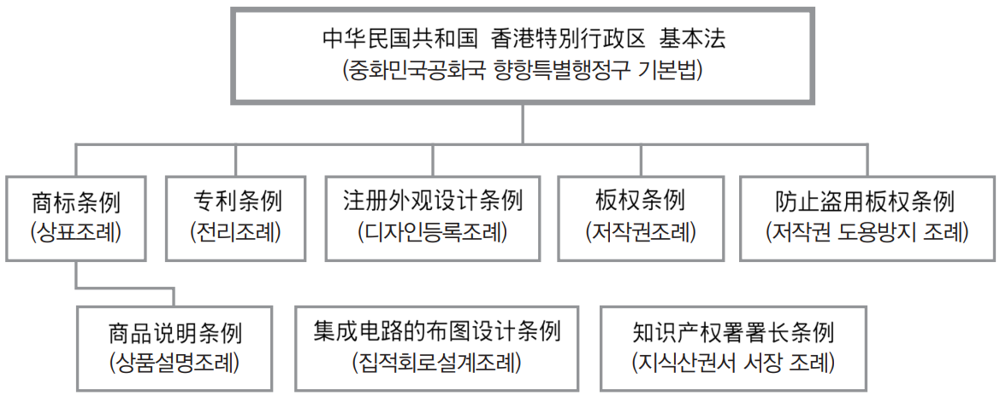
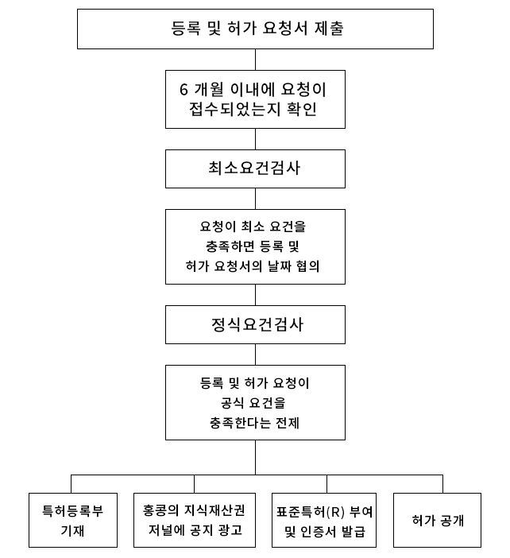
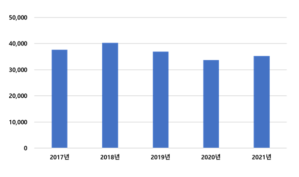
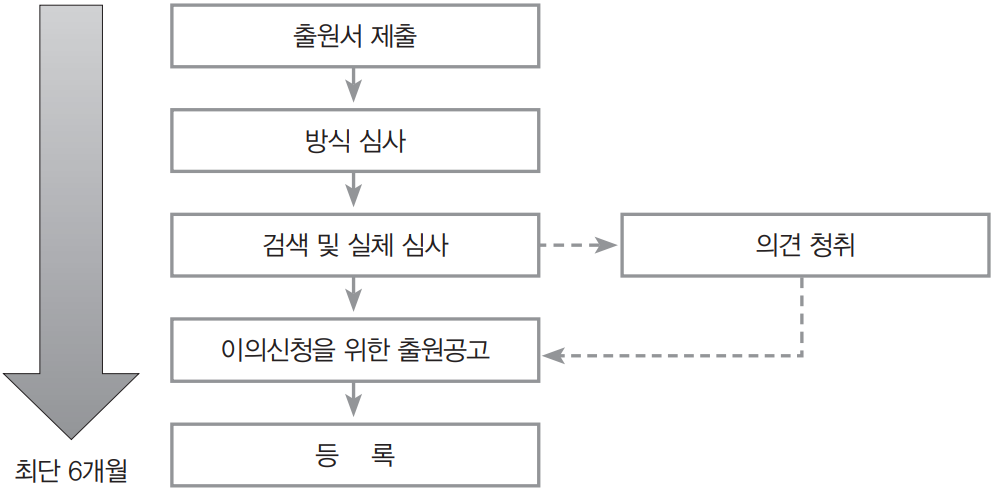
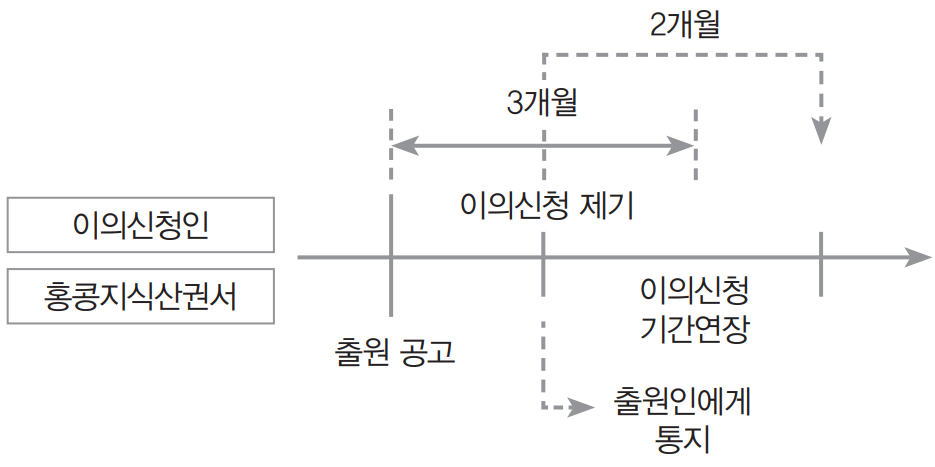
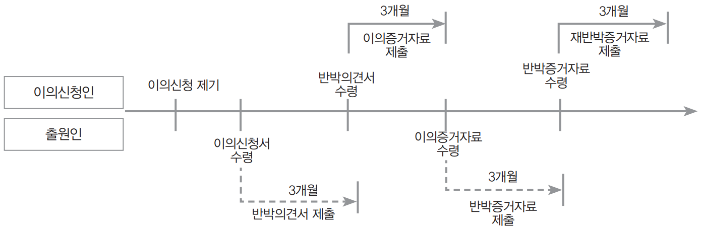
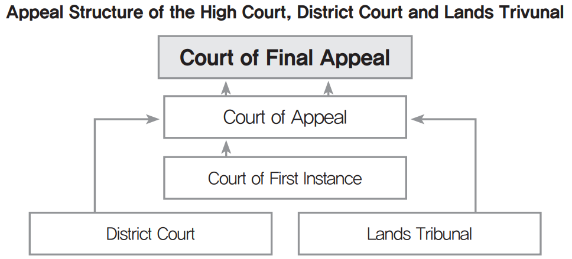
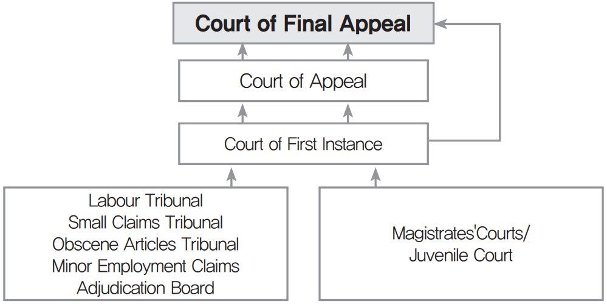
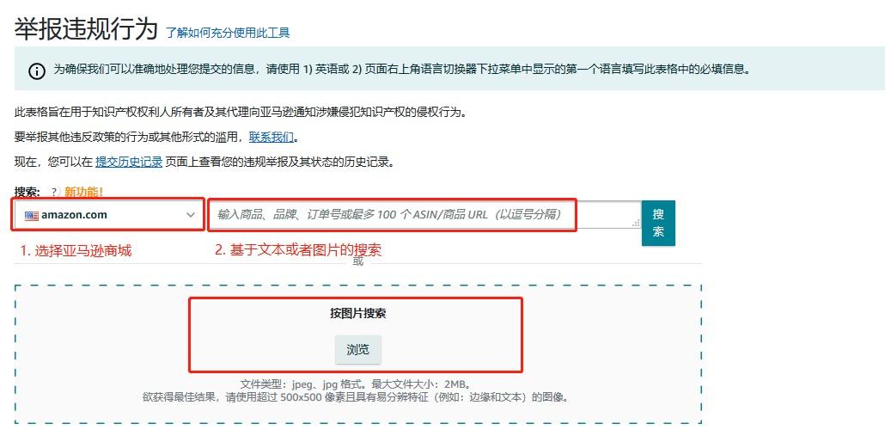
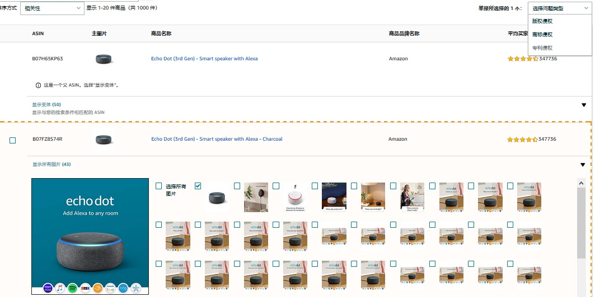

•국명 : 중화인민공화국홍콩특별행정구(The Government of the Hong Kong S.A.R of the People's Republic of China)
•면적 : 1,114㎢ (자료원 : Survey and Mapping Office / Lands Department, 2022년 기준)
•건국일 : 1949.10.01.(국경일)
•인구 : 약 740만명(2021년)
•언어 : 광동어, 보통어, 영어
•민족 : 한족(95% 이상)
•종교 : 기독교(가톨릭 및 개신교 포함)(16%), 불교(13.4%), 도교(13.4%), 무교 및 기타(57.2%)
홍콩은 보수성향의 싱크탱크인 헤리티지 재단이 집계하는 경제자유지수에서 1위를 고수할 정도로 자유방임주의에 가까운 정책을 펴는 것으로 유명함. 한국, 중국, 일본, 대만 등 동아시아 국가들이나 경쟁상대인 싱가포르, 태국, 말레이시아 등 타 동남아시아 국가들이 국가가 주도해서 경제성장을 이룩한데 반해서 홍콩은 시장이 주도해서 경제가 성장한 사례이며, 밀턴 프리드먼도 성장하는 홍콩을 보고서 홍콩을 자유방임 경제의 모범적인 모델로 칭찬했을 정도임
경제자유도의 예를 들자면 홍콩에는 중앙은행이 없어서 통화위원회라는 조직만 있음. 중앙은행 비슷한 역할은 HSBC, 중국은행, 스탠다드차터드 은행 이 셋이 나눠서 맡음. 그리고 법인세와 관세가 없는데다 세율도 엄청나게 낮아서 중국 대륙 부자들이 홍콩에 가서 사는 경우도 많음. 2019년 홍콩 민주화 운동 때는 이 중국 부자들이 자산분산을 하려고 이민 문의가 폭증함
그러나 국가 인프라인 홍콩 국제공항, 콰이충 항구, 그리고 홍콩 지하철 및 국철 운영사인 MTR사 등 공공 인프라는 공기업으로 관리하고 1997년 아시아 외환위기때는 정부가 자본통제에 나서는 등 정부도 간섭할 것은 간섭함. 단지 간섭을 최소화할 뿐임. 이러한 정부의 자본통제는 코로나바이러스감염증-19가 휩쓰는 2020년에도 실시하기 시작함
홍콩의 경제는 상당 부분이 서비스업에 의존함. 1차산업과 2차산업은 비교적 약함. 2차산업은 나름대로 흥했을 때인 1950년대~1970년대 시절도 있었지만 규모가 영세했기 때문에 1980년대 이후로 한국과 대만 그리고 1990년대 이후로는 값싼 노동력과 어마어마한 생산 쪽수를 자랑하는 중국에게 밀려서 사양길을 걸었기 때문임. 슈퍼마켓의 공산품과 식품은 홍콩산은 소수고 중국산과 수입산이 대부분임. 홍콩산은 까우룽유업, 가든제과, 비타쏘이 같은 일부임
일본산이 꽤 많으며 아예 일본산 공산품을 전문으로 파는 얏뿐씽(日本城, Japan Home Centre)이라는 체인점도 있음. 최근에는 한국산 공산품이 점유율이 높아지고 있는데 일종의 수입식품점인 759스토어에는 일본식품과 한국식품의 지분이 비등하며, 특히 화장품 업계에서는 한류 영향으로 한국 화장품이 많음. 1990년대만 해도 홍콩은 메이크업을 본국 영국의 영향으로 서구식으로 선호했으나 2000년대 한류가 범 아시아적으로 유행한 이후에는 한국식을 많이 선호함
금/은 등 귀금속 및 보석상, 그리고 시계상이 굉장히 많음. 중화권/동남아시아 최대의 보석상 체인인 짜우따이푹(周大福, Chow Tai Fook), 짜우쌍쌍(周生生, Chow Sang Sang), 룩푹 보석(Lukfook Jewelry)이 3대장을 형성하고 있으며 어지간한 번화가라면 저 보석상들이 발에 채일 정도로 많이 입주해있음. 그리고 한국 단체관광객이 자주 가는 TSL 역시 보석 및 귀금속 체인점임
홍콩은 도시권(광역권)이 없는 단일 도시란 것을 감안한다면 단일 도시로서는 세계에서 열 손가락 내에 충분히 드는 경제라는 것을 간접적으로 알 수 있음. 그 외 중국 도시는 상하이가 5,165억 달러로 전체 10위, 베이징이 4,272억 달러로 전체 13위를 기록했고, 톈진은 3,087억, 광저우는 3,204억, 선전시는 3,024억임. 즉 홍콩은 중국 영토 내 3대 경제권 중 하나임. 홍콩증권거래소의 규모는 아시아에서 도쿄증권거래소, 상하이증권거래소에 이은 3번째임. 그리고 IPO 개수는 중국 기업들의 상장 덕에 가장 많음
3. 지식재산권 분야 정보
가. 개요
중국 본토와 홍콩은 별도의 지식재산권 법체계를 가지고 있으며, 중국 본토에서 특허를 인정받았다고 해서 홍콩에서 자동 인정되지 않는다는 점을 주의해야 함
홍콩은 오랜 기간 영국의 식민 지배를 받아 지식재산권 보호체계가 잘 확립돼 있으며, 외국 상품에 대한 상표권, 디자인권 등의 노골적 침해는 적은 편임
- 홍콩 시장의 지식재산권 침해 위험이 낮고 인구, 구매력 면에서 시장규모가 작다고 판단하는 경향이 있어 한국 상품의 상표권 등록은 아직 활발하지 않은 상황임
홍콩에서 지식재산권 보호체계를 총괄하는 기관은 ‘홍콩지식산권서(香港知识产权署, Intellectual Property Department)’로, 홈페이지를 통해 지식재산권 관련 법규, 신청 절차 및 각종 양식에 관한 정확한 정보를 얻을 수 있음
또한, 홍콩은 자유로운 법제도 및 국제화된 비즈니스 환경으로 라이선싱, IP 거래 등 지식재산권 산업이 성장하고 있음
- Asia IP Exchange(AsiaIPEX)는 홍콩무역발전국에서 운영하는 ‘지식재산권 거래 플랫폼’으로, 홍콩뿐 아니라 국내외 지식재산권 거래를 통한 비즈니스 확대를 목적으로 함
나. 홍콩 지식재산권 보호 절차
(1) 특허권
홍콩의 특허권은 표준특허(standard patent)와 단기특허(shor-term patent)로 나뉘어 있음
- 표준특허 : ⅰ) 지정특허청에서 우선 등록심사를 받아 권리를 부여받고 홍콩에 형식적 심사를 통해 재등록하거나 ⅱ) 홍콩지식산권서에 직접 출원하고 실질적인 심사를 받아 등록하여, 20년간 보호를 받는 특허 (일반적으로 쓰이는 ‘표준특허(표준규격을 기술적으로 구현해 낼 때 필수적으로 실시해야 하는 특허)’와 의미가 다름)
- 단기특허 : 홍콩지식산권서에 직접 등록출원할 수 있으나 존속기간이 8년에 불과함
기존의 표준특허는 아래 3개 지정 특허청에서 인정된 특허 등록(기초출원)을 기반으로 재등록(re-register)을 신청하여 형식적인 요건에 대한 심사만을 거침.
표준특허 신청은 ① 출원(request to record) ② 등록청구(request for registration and grant)의 두 단계로 이루어짐
- 3개 지정 특허청은 아래 중국, 유럽, 영국 특허청을 말함
·the State Intellectual Property Office, People''s Republic of China
·the European Patent Office
·the United Kingdom Patent Office
- 홍콩에서 표준특허를 출원(request for record)하기 위해서는, 지정 특허청이 공고한 해당 특허의 출원일로부터 6개월 이내에 홍콩지식산권서 특허등록처에 제출해야함
이 외에도 표준특허는 지정 특허청에 해당 특허를 먼저 출원하는 기초 출원없이, 홍콩에 직접 특허의 출원과 실질심사를 신청하여 출원할 수도 있음
(2) 상표권
홍콩에 기업등록(법인 설립)이 완료됐다고 해서 기업의 상품 및 서비스의 상표권이 자동으로 보호되지 않으므로, 해당 상표의 고유한 권리를 위해서는 별도의 상표권 등록이 필수임
- 홍콩 상표권 등록을 위해서는 등록하고자 하는 모든 개별 상품과 서비스를 등록 신청해야 하며, NICE 분류에 맞게 분류돼야 함. 적절한 분류를 확인하기 위해 아래 사이트를 참고할 수 있음
·http://www.wipo.int/classifications/en
·http://www.ipd.gov.hk/eng/intellectual_property/trademarks/how_to_classify.htm
- 홍콩 지식산권서에 따르면, 신청부터 최종 공보까지 약 6개월이 소요됨. 상표권 보호기간은 10년으로 상표권의 계속적 보호를 위해 10년마다 갱신해야 함
(3) 디자인권
홍콩 지식재산권서는 디자인권에 대해 형식심사만 수행하며 실질심사를 수행하지 않음. 일반적으로 출원서 제출부터 최종 등록공고까지 걸리는 기간은 3개월임
- 디자인권 신청을 위해서는 완비된 신청서와 함께 디자인에 대한 분명한 설명서가 필요함
- 한 번에 복수의 디자인을 신청할 수 있으나, 로카르노 분류법에 따라 동일하게 분류되는 관련된 디자인이어야 함
- 디자인권은 기본 5년으로 최대 4번 연장 가능하므로, 최대 25년까지 장기간 보호됨
제2절 현지 유관기관 정보
1. 산업재산권 기관
가. 홍콩지식산권서(특허청)
홍콩의 지식재산권 등록 및 각종 행정 절차, 서비스, 정책 등을 담당하는 기관은 우리나라 특허청에 해당하는 홍콩지식산권서(香港知识产权署)임
- 현재 주된 업무는 특허(전리)권, 상표권, 디자인권의 등록 업무 및 저작권 라이센스 등록 업무와 각종 지식재산관련 정책 수립 업무임. 또한, 그 외에도 각종 지식재산권 의식 고취를 위한 교육 및 관련 인력 양성 업무, 지식재산권 보호 업무 등을 담당
- 홍콩 지재권 검색엔진 제공
- Homepage: www.ipd.gov.hk
나. 홍콩 법원
홍콩 사법조직은 3단계로 분류할 수 있음. 하급법원은 매저스트리트(Magistrates)재판소, 지방법원 및 전문법정으로 구성되고, 이들의 상소는 최고법원에서 관할함. 그 위에 반환 이전에는 최종심으로서 영국 추밀원사법위원회가 위치하였음. 반환 후에도 이 체계는 변하지 아니하여, 약간의 명칭 변경이 이루어지고 최종심으로서 대법원(Court of Final Appeal) 홍콩에 설립된 것을 제외하고는 종래의 체계가 유지되고 있음
- 판결문 제공
- Homepage: www.judiciary.gov.hk
2. 그 외 지식재산권 유관기관
가. 홍콩 해관
홍콩해관은 위조품 및 불법 복제품을 포함한 저작권 및 상표권 침해에 대해 형사 조치를 담당하는 정부 부처임. 홍콩 해관은 Copyright Ordinance, Chapter 528, (저작권법) the Trade Descriptions Ordinance, Chapter 362 (무역/거래 내용 설명에 관한 법) and the Prevention of Copyright Piracy Ordinance, Chapter 544 (저작권 불법 복제 방지법)의 시행을 통해 지식재산권 (ntellectual Property Right, IPR) 소유자 및 합법적인 거래자의 이익을 보호하는 책임이 있음. 홍콩 해관은 상표 및 저작권 침해를 주장하는 신고와 무역/거래 설명이 허위로 표기되었음을 주장하는 신고가 접수될 때 조사에 착수함. 홍콩 해관은 이에 대해 광범위한 수색 및 압수 권한을 가지고 있음
- 해관의 의무는 과세 물품에 대한 수입 징수, 마약 및 위험 약물의 밀매 방지, 소비재의 안전 확인, 특정 수출입 허가증 발급 및 물품 수출입과 관련된 기타 문제를 포괄적으로 관리하고 있음
- Homepage: www.customs.gov.hk
나. 저작권 라이센스 등록 협회
홍콩지식산권서에 등록되어 있는 저작권 라이센싱 협회는 우리나라의 ‘저작권 집중관리 단체’와 상응하는 것으로, 현재까지 5개 단체임. 홍콩지식산권서에 등록된 라이센싱 협회들은 자신들의 표준 라이센싱 로열티표를 게시하여 저작물을 사용하고자 하는 사람들에게 저작물의 사용 권한의 범위 및 그 로열티 금액을 상세하게 안내하고 있음
• Composers and Authors Society of Hong Kong Limited(홍콩 작곡가 및 작사가 협회)
- 등록 인증번호 : 20020001
- 등록 명칭 : COMPOSERS AND AUTHORS SOCIETY OF HONG KONG LIMITED (香港作曲家及作詞家協會有限公司)
- 주소 : 18/F, UNIVERSAL TRADE CENTRE, 3 ARBUTHNOT ROAD, CENTRAL, HONG KONG
• Hong Kong Recording Industry Alliance Limited(홍콩 음반 연맹)
- 등록 인증번호 : 20100001
- 등록 명칭 : HONG KONG RECORDING INDUSTRY ALLIANCE LIMITED (香港音像聯盟有限公司)
- 주소 : 22/F, SHANGHAI INDUSTRIAL INVESTMENT BUILDING, 48-62 HENNESSY ROAD, WAN CHAI, HONG KONG
• Phonographic Performance (South East Asia) Limited(홍콩 음반 판권 회사)
- 등록 인증번호 : 20090001
- 등록 명칭 : PHONOGRAPHIC PERFORMANCE (SOUTH EAST ASIA) LIMITED (香港音像版權有限公司)
- 주소 : UNIT A, 18/F, TOWER A, BILLION CENTRE, NO.1 WANG WONG ROAD, KOWLOON BAY, KOWLOON, HONG KONG
• The Hong Kong Copyright Licensing Association Limited(홍콩 저작권 라이센싱 협회)
- 등록 인증번호 : 20050001
- 등록 명칭 : THE HONG KONG COPYRIGHT LICENSING ASSOCIATION LIMITED (香港複印授權協會有限公司)
- 주소 : ROOM 904, SUP TOWER, 75 - 83 KING'S ROAD, NORTH POINT, HONG KONG
• The Hong Kong Reprographic Rights Licensing Society Limited
- 등록 인증번호 : 20010001
- 등록 명칭 : THE HONG KONG REPROGRAPHIC RIGHTS LICENSING SOCIETY LIMITED (香港版權影印授權協會有限公司)
- 주소 : 802 STANHOPE HOUSE, 738 KING’S ROAD, HONG KONG
3. 지식재산권 관련 조약 현황
[표 4] 지식재산권 관련 조약 현황
구분
조약명
지식재산권보호
Paris Convention
Trademark Law Treaty
Universal Copyright Convention
Berne Convention
Geneva Convention
글로벌 보호 체계
World Intellectual Property Organization (“WIPO”)
WIPO Copyright Treaty
WIPO Performances and Phonograms Treaty
Patent Cooperation Treaty (PCT)
지재권 분류
Locarno Agreement
Nice Agreement
제3절 지식재산권 지원 사업 현황
[표 5] 홍콩 진출시 국내 기업이 지원받을 수 있는 지재권 관련 사업
사업분류
사업명
주요내용
세부정보(링크)
비고
1. 지식재산창출
IP기반 해외진출 지원
수출(예정) 중소기업 대상 최대 3년간 IP 서비스(해외권리화 지원 등)를 제공하여 글로벌 강소기업으로 육성
※ 사업분류 1,2,3은 특허청 산하 사업임
※ 위 자료는 2022년 기준으로 작성되었으며, 세부 지원 기준 등 자세한 사항은 각 홈페이지 링크를 통해 확인이 필요함
PARTII 지식재산권
제1절 개요
1. 법률체계 및 지식재산권 관련 법률
홍콩은 중국과 달리 100년이 넘는 영국의 식민지배를 받으면서 독특한 산업구조와 문화를 쌓아 왔음. 홍콩 산업의 특징은 금융과 쇼핑의 중심지이면서, 영화산업, TV 프로그램, 음반산업, 출판산업, 패션디자인, 보석 디자인, 그래픽 디자인 등의 산업이 매우 발달해 있다는 것임
또한, 세계 금융과 국제교류의 중심지이기 때문에 외국 자본이 많이 진출해 있고 외국 자본이 홍콩에서 떠나지 않고 계속해서 비즈니스를 영위하도록 하기 위해서는 지식재산과 관련한 보호 법률이 잘 구축되어 있어야 할 필요성이 있음
이러한, 인식하에 홍콩은 나름대로의 지식재산 보호를 위한 법률과 시스템을 비교적 잘 구축하고 있음
- 홍콩의 법 제도는 <중화인민공화국 홍콩특별행정구 기본법>이라는 일종의 헌법의 기초 위에 구축되어 있음. 홍콩특별행정구 기본법 제139조 및 제140조에서는 홍콩특별행정구 정부가 지식재산의 법적 보호를 위하여 적절한 정책을 수립하여 수행할 것을 선언적으로 규정하고 있음
현재 홍콩의 중국으로의 반환 이후에 홍콩 지재권 관련 법령과 중국 제도 간 통합에 대한 논의가 진행되고 있지 않으며, 제도적 차이가 큰 홍콩과 중국 간에 지재권 법령 체제는 현재대로 홍콩과 중국 각각 개별적인 제도가 유지될 것으로 예상됨
<중화인민공화국 홍콩특별행정구 기본법> 제139조 및 제140조의 규정의 취지에 따라 홍콩지식산권서가 1990년에 설립되었으며, 상표, 특허, 디자인, 저작권에 관한 규정이 각각 상표조례, 전리조례, 디자인등록 조례, 저작권 조례 등으로 제정되었음. 참고로 홍콩에서 지식재산권에 관한 법률 규정은 모두 법이 아닌 조례와 규칙으로써 규정되어 있음

[그림 1] 중화민국공화국 홍콩특별행정구 기본법 체계
가. 상표조례 및 규칙
우리나라의 상표법에 해당하는 상표조례는 홍콩특별행정구 조례집의 제559장에 해당함. 그리고 상표조례의 하부 법령인 상표규칙은 조례집 제559A장에 규정되어 있음. 홍콩 상표조례는 2003년에 큰 개정을 거쳤음. 2003년도 개정을 통하여, part A와 part B로 복잡하게 나뉘어져 있던 상표출원 제도를 하나의 상표출원 제도로 통합하였으며, 사용주의 색채가 강하게 남아 있던 상표법을 중국 상표법과 마찬가지로 등록주의 중심의 제도로 전환하였음
나. 전리조례 및 규칙
우리나라 특허법에 해당하는 전리조례는 홍콩특별행정구 조례집 제514장에 규정되어 있음. 그리고 하부 규칙은 제514A장에서 제514C장에 규정되어 있음
다. 디자인등록 조례 및 규칙
우리나라 디자인보호법에 해당하는 디자인등록 조례(외관설계등록조례)는 홍콩특별행정구 조례집 제522장에 기재되어 있음. 그리고 그 하부 법령인 디자인등록 규칙(외관설계 등록 규칙)은 조례집 제522A장에 기재되어 있음
라. 저작권조례(판권조례) 및 저작권도용방지조례
우리나라의 저작권에 해당하는 저작권조례(판권조례)는 홍콩특별행정구 조례집 제528장에 규정되어 있으며, 저작권도용방지 조례는 조례집 제544장에 규정되어 있음
2. 최근 개정사항 및 동향 소개
가. 특허법 개정
2019년 12월 19일부터 개정된 특허제도가 시행되었으며, 홍콩 정부는 홍콩에서 직접 특허에 대한 실질심사를 할 수 있는 원수특허제도(Original Grant Patent, OGP)를 도입
- 홍콩의 특허는 표준특허(standard patent)와 단기특허(short-term patent)로 구분됨
- 표준특허는 존속기간 20년이 보장되며, 홍콩 외의 지정 특허청(영국. 중국 및 EPO)에서 우선 등록심사를 받아 권리를 부여받고 홍콩에 재등록(re-register)하는 시스템을 취하고 있음
- 표준특허권의 존속기간은 출원일로부터 최장 20년이며, 최초 등록 후 3년이 지나면 매년 기간을 연장해야 함
- 단기특허는 홍콩 지식산권서에 직접 등록출원할 수 있으며 최장유효기간은 8년이며 최초 등록 4년 후 1번만 기간을 연장하면 됨
- 단기특허도 기존에는 형식 요건만 판단하였으나, 201년 홍콩 특허조례 개정에 따라 실질심사의 대상이 될 수 있음
- 특히 제3자는 누구라도 단기특허의 특허성에 대한 발명의 요건에 대하여 판단하여 이의가 있는 경우 실질심사요청을 등록심사관에게 할 수 있으며, 출원인 역시 단기특허에 대하여 실질심사를 신청할 수 있음
원수특허제도는 표준특허에 대하여 출원인이 지정특허청에 특허출원을 하지 않고 홍콩 특허청에 직접 출원하여 특허결정을 받아 특허권을 확보할 수 있도록 하는 제도임
- 출원인은 표준특허를 출원할 시에 원수특허제도와 특허재등록제도 중 선택할 수 있음
■ 기존 특허심사제도(특허재등록제도)와 원수특허제도의 비교
기존 방식인 특허재등록제도에 따르면 국외 지정특허청인 (1) 중국 지식산권국(CNIPA, China National Intellectual Property Administration), (2) 유럽 특허청(EPO, European Patent Office), (3) 영국 특허청(UKIPO, United Kingdom Intellectual Property Office)에 기초출원 후, 기초출원일로부터 6개월 이내 홍콩 지식산권서에 제출하여 ‘출원(request for record)’하고, 형식적 요건을 심사받기 위해 등록청구(request for registration and grant)의 단계로 이루어지는 ‘재등록(re-register)' 방식을 취하고 있음. 이 경우, 홍콩 지식산권서는 서류미비 등 방식심사만 실시할 뿐 특허에 대한 실체검사는 하지 않음.
반면, 원수특허제도는 중국 지식산권국과 기술 협조 하에 홍콩 지식산권서에서 직접 특허에 대한 실질적인 기술 심사를 시행하고 특허 등록 여부를 결정하는 제도로 국외 지정특허청의 기초출원 없이도 표준특허 출원 및 등록이 가능함
[표 6] 홍콩 특허 유형간 비교
출처 : 홍콩지식산권서
표준 특허
(원수특허제도)
표준특허
(특허재등록제도)
단기 특허
존속기간
20년
20년
8년
기초출원 필요 여부
불요
필요 (지정특허청 : 중국특허청, 유럽특허청,영국특허청에 기초 출원해야함)
불요
청구항 개수 제한
제한 없음
제한 없음
독립항 2개 제한
형식 심사
홍콩지식산권서가 수행
홍콩지식산권서가 수행
홍콩지식산권서가 수행
실질심사
중국 국가지식산권국(CNIPA)과 기술 협조 하에 홍콩 지식산권서에서 직접 심사
기초 출원한 지정특허청이 수행
실질심사 불요 (단, 제3자 혹은 출원인의 신청이 있는 경우 실질심사함)
나. 상표법 개정
홍콩의 상표법은 2003년 4월 4일 발효되어 1873년 통과된 상표법 43을 폐지한 상표 조례 제559호에 근거하고 있음. 이 법률에 의해 확립된 제도는 '1국 2제' 정책에 따라 중화인민공화국에서 사용하는 제도와는 완전히 별개임. 대체된 법과 현재 법은 영국의 관련 법률과 매우 유사하며, 이는 WTO/TRIPs 준수에 근거한 유사성임
새로운 법은 상표의 법적 정의를 확대하거나, 인증 마크, 단체 마크, 유명 상표에 대한 보호를 포함하거나 확대하는 것, 취소 목적의 미사용 기간을 5년에서 3년으로 줄이는 것, 절차를 단순화하고 합리화하는 것 등 다양한 실질적이고 절차적 변화를 도입함
2020년 6월 19일에 공고된 상표 개정 조례는 홍콩의 국제 상표 등록(마드리드 의정서)에 관한 마드리드 협정에 관한 의정서 적용에 대한 홍콩 법률의 기초를 제공함. 홍콩 정부는 개정 조례 제정에 따라 관련 절차 세부사항을 제공하기 위한 보조 입법 준비, 전용 정보 기술 시스템 구축, 중앙정부 동의 획득 등 마드리드 의정서 이행을 위한 관련 준비 작업을 계속하고 있음. 마드리드 의정서는 홍콩에서 2022년경, 늦어도 2023년에는 시행될 것으로 예상됨
다. 디자인법
우리나라 디자인보호법에 해당하는 디자인등록 조례(외관설계등록조례)는 홍콩특별행정구 조례집 제522장에 기재되어 있음. 그리고 그 하부 법령인 디자인등록 규칙(외관설계 등록 규칙)은 조례집 제522A장에 기재되어 있음
- 홍콩에 디자인 출원을 할 때 필요한 서류로는 디자인등록출원서, 디자인에 대한 도면(7개) 및 신규성에 대한 진술서가 있으며, 만약 중국어로 출원할 경우 번체자를 사용해야 함. 한편, 평면디자인이나 직물디자인의 경우 도면 이외에도 샘플을 함께 제출할 수 있으나, 반드시 한 개의 봉투나 포장에 담아야 하고, 길이는 30cm, 무게는 4kg을 초과할 수 없음. 한편, 홍콩으로의 디자인 출원시, 로카르노 협정에 따른 분류표에 근거하여 동일한 류에 속하여 함께 판매되고 사용되는 물품의 경우에는 한 건의 출원에 여러 개의 디자인을 포함한 출원을 할 수도 있음
- 우선권을 수반한 출원인 경우 홍콩 디자인출원일로부터 3개월 안에 우선권 증명서류를 제출하되, 영문 혹은 중문 이외의 다른 언어로 된 경우 반드시 중문 혹은 영문 번역문을 첨부해야 함. 홍콩에 디자인 출원을 한 경우 그 보호 기간은 출원일로부터 5년이며, 매 5년의 기간이 만료되기 전에 연장 신청을 통해 5년을 연장할 수 있으며, 이렇게 4차례 연장하여 최대 25년의 보호기간을 향유할 수 있음
3. 한 페이지로 보는 지재권 제도
· 홍콩은 중국 본토와 별도의 지재권 법체계를 가지고 있어, 중국 본토에서 특허 등록받아도 홍콩에서 자동인정이 안됨 (따로 홍콩에서 특허 등록이 필요함)
· 홍콩에는 표준특허와 단기특허 제도가 존재함
· 단기특허의 존속기간은 출원일로부터 8년이며, 출원시 서치리포트 제출해야함
· 표준특허를 출원하려면 ‘원수특허제도’와 ‘특허재등록제도’ 중 하나의 출원 방법을 선택할 수 있음
· 특허출원시 요약문은 영어와 중국어로 제출해야하며, 출원인 및 발명인 이름은 중국어 및 영문자 알파벳으로 표기해야함
· 특허 신규성 예외인정 기간은 6개월이나, 중국이 인정한 박람회, 전시회에 공지한 경우에 한정하므로 우리나라에서 먼저 공지한 경우 홍콩에서 특허권 취득은 거의 불가함
· 디자인권의 존속기간 최장 25년임 (우리나라 20년)
· 디자인권에 대해서는 따로 실체심사를 하지 않으며, 별도 유효성 심사평가 없이도 즉시 권리행사 가능 (다만 권리의 유효성은 소송 절차 내에서 다툼)
· 상표 출원 전 선행상표 검색 및 등록가능성의 예비적 판단을 홍콩특허청에서 제공하고 있음
· 우리나라와 다르게 홍콩은 방어표장제도를 보유하고 있어, 저명상표가 불사용 취소심판의 대상이 되지 않음
· 출원상표가 선행상표와 유사하더라도, 오인·혼동가능성이 없으면 등록될 가능성이 있음 (유사판단은 우리나라보다 덜 엄격하며, 따라서 등록가능성 더 높음)
· 중국본토에서 상표가 저명하더라도, 자동적으로 홍콩에서 저명상표가 되는 것은 아님
· 저작권 및 상표권 침해 형사조치는 홍콩해관이 담당하여, 지재권 침해는 홍콩해관에 고발할 수 있음 (다만, 위조행위 보고할 때 간이등록절차가 선행되어야함)
· 홍콩은 자격 없이도 지재권 출원 대리를 할 수도 있으므로, 대리인 선정시 지재권 대리권리를 보유하고 있는 법률 전문자인지 여부를 확인해야함
제2절 주요 지식재산권별 비교표
1. 특허
일반적으로 중국 대륙에서 전리권이라고 하면 발명특허, 실용신안, 디자인을 모두 아우르는 넓은 개념이지만, 홍콩에서 전리권이라는 용어는 우리나라의 특허와 마찬가지로 좁은 의미의 특허를 의미함
하지만, 홍콩에서는 중국 대륙과 달리 표준특허와 단기특허라는 특유의 제도를 운영하고 있음. 표준특허와 단기특허는 우선 존속기간에서 차이가 있으며 그 외에도 출원 절차와 등록 절차에서 차이를 보이고 있음. 우리나라의 지재권 제도와 굳이 대응시키자면 존속기간의 장단의 측면에서 표준특허는 특허에 해당하고 단기특허는 실용신안에 해당한다고 할 수 있음
또한, 홍콩은 역사적으로 오랜 기간 영국의 식민지배를 받았을 뿐 아니라, 현재는 중국에 귀속되어 있기 때문에 출원 절차 면에서 영국과 중국에 상당 부분 종속되어 있는 특징이 있음
■ 우리나라 특허제도와의 차이점
홍콩의 특허제도는 우리나라 특허제도와는 매우 큰 차이가 있음. 아래 표에서 우리나라와 홍콩의 특허제도를 비교하였음
[표 7] 홍콩 전리 제도와 우리나라 제도의 특징 비교
항목
홍콩
우리나라
심사 여부
무심사(표준, 단기)
- 예외1) 원수특허제도를 이용해 표준특허 출원하는 경우 심사함
- 예외2) 단기특허의 경우 신청이 있으면 심사함
특허, 실용신안 심사제도를 취하고 있음
거절결정불복심판
무심사이므로 불복심판 제도가 없으며, 심판원도 존재하지 않음
거절결정을 받을 경우 특허심판원에 불복심판을 제기할 수 있음
무효심판
별도의 심판원이 존재하지 않으며, 법원에 소를 제기하여 무효를 다툴 수 있음
특허권, 실용신안권의 무효는 특허심판에 무효심판을 제기함으로써 다툴 수 있음
존속기간
-표준특허 : 등록일로부터 발생하여 출원일로부터 20년 되는 날까지
-단기특허 : 등록일로부터 발생하여 출원일로부터 8년되는 날까지
-특허권 : 등록일로부터 발생하여 출원일로부터 20년되는 날까지
-실용신안 : 등록일로부터 발생하여 출원일로부터 10년되는 날까지
2. 디자인
홍콩 디자인 보호조례상 디자인이란 물품의 형상, 모양, 패턴, 장식 또는 이들을 결합한 것으로서, 완성된 물품에 화체되어 있는 육안으로 판별할 수 있으며 사람의 시선을 끌 수 있는 물품의 특징을 의미함.
홍콩에서 디자인 보호를 받으려면 반드시 홍콩지식산권서에 디자인출원을 하여 디자인권을 등록받아야 함. 다른 권리와 마찬가지로 중국 본토에 디자인권을 등록받았다고 해서 홍콩에서도 자동적으로 디자인권이 인정되지 않음
- 중국에서 등록 받은 권리는 중국에서만 유효하며 홍콩지식산권서에서 등록받은 디자인권이 없다면 홍콩에서의 디자인 보호는 불가능함.
홍콩의 디자인권의 출원 및 등록 절차는 매우 독특한 특색을 가지고 있음. 홍콩에서의 디자인권 출원은 무심사제도를 취하고 있으며, 등록받은 이후에는 5년마다 존속기간 연장을 해야 함
■ 우리나라 디자인 제도와의 차이점
[표 8] 홍콩 디자인제도와 우리나라 제도의 특징 비교
구분
홍콩
한국
실체심사여부
무심사
일부 무심사
출원 후 등록 시 까지의 기간동안의 디자인 보호
등록일을 출원일로 소급하여 디자인권이 출원일부터 존재하고 있었던 것으로 인정
보상금청구권인정
이의신청 제도
없음
무심사 디자인에 대하여 이의신청 제도 운영
무효심판 제도
없음. 법원에서 판단. 소제기 해야 함
있음
존속기간
등록일로부터 발생하여 출원일로부터 5년, 매 5년씩 최장 25년까지 연장 가능
출원일로부터 20년
침해의 소제기
별도의 절차 없이 소제기 가능, 침해 소송 중 디자인의 유무효성 심리
무심사라도 소제기 가능
다만 유효성을 다툴 경우에는 별도로 무효심판을 제기해야 함
3. 상표
홍콩에서의 상표권은 홍콩지식산권서에 상표출원 절차를 밟아서 심사를 받아 심사에 통과할 경우에 획득할 수 있음. 홍콩에서도 상표권 등록과 회사 등록, 사업 등기 등과는 그 성격이 완전히 다르며, 주관하는 행정부서도 다름. 상표권의 등록은 홍콩지식산권서에서 주관하며, 회사 등록이나 사업 등기 등은 홍콩 세무국에서 주관함
홍콩에서 회사 등록이나 사업 등기를 마쳤다고 해서 그 회사 이름과 사업 이름에 대한 독점권이 주어지는 것은 아님. 회사 이름, 사업 이름에 대한 독점권은 오로지 상표권에 의해서만 주어지기 때문에 반드시 홍콩에서 상표 출원 절차를 밟아야 함
■ 우리나라 상표 제도와의 차이점
홍콩 상표 제도는 많은 부분에서 우리나라와 차이점을 보이고 있음. 따라서, 이러한 상표 제도 상의 특징을 인식하고 있지 못하다면 홍콩에서 출원한 상표 보호를 받기 어렵게 될 수 있음. 이하에서는 홍콩 상표 제도 상의 특징을 우리나라 제도와 비교하여 정리하였음
[표 14] 홍콩 상표 제도 및 우리나라 제도의 특징 비교
홍콩
대한민국
소리, 냄새, 입체 등 특수 상표의 인정
소리, 냄새, 입체 상표 모두 인정
소리, 냄새, 입체 상표 모두 인정
출원 후 등록 시 까지의 기간 동안의 상표 보호
등록일을 출원일로 소급하여 상표권이 출원일부터 존재하고 있었던 것으로 인정
손실보상청구권 인정
선행 상표와 후행 상표가 동일한 경우와 유사한 경우의 취급
동일한 경우와 유사한 경우를 다르게 취급함
유사한 경우에는 소비자에 의한 오인·혼동 가능성을 추가로 요구함
동일한 경우와 유사한 경우를 같게 취급함
저명상표의 효력
비유사한 상품 영역에서 타인의 상표출원의 등록 저지효력 및 비유사한 상품영역에서의 타인의사용 금지 효력 모두 있음
비유사한 상품 영역에 대한 타인의 상표출원의 등록저지효력만 인정함
저명상표 보호를 위한 별도의 법적 장치
방어표장 제도를 두어 저명상표가 불사용 취소심판에 노출되지 않도록 함
없음
출원 전 특허청에 의한 등록가능성 판단 서비스
선행상표 검색 및 등록가능성의 예비적 판단 서비스 제공
없음
PARTIII 특허·실용신안
제1절 주요제도 및 등록요건
1. 출원현황 통계
2017년부터 2021년까지 홍콩의 특허 출원 건수를 살펴보면 아래의 표와 같음
[표 10] 홍콩의 특허출원건수
출처: 홍콩 특허청
연도
출원건수
2017
13,299
2018
15,986
2019
16,521
2020
21,302
2021
21,686
2017년부터 2021년까지 홍콩에서 특허 등록된 건수를 살피면 다음과 같음
[표 11] 홍콩의 특허등록건수
출처: 홍콩 특허청
연도
등록건수
2017
6,671
2018
9,651
2019
6,780
2020
7,658
2021
14,655
KOTRA 홍콩무역관이 발표한 ‘우리 기업의 홍콩 특허 출원 동향’ 자료에 따르면 홍콩의 원수특허제도를 통한 표준 특허 출원에서 2020년 한국이 111건으로 외국 국가 중 1위를 기록함. 이는 기존의 재등록특허제도하에서 출원량의 절대다수를 차지해온 미국(8), 일본(5), 중국(20), 독일(2)의 출원량을 월등히 뛰어넘는 수준이며 홍콩 자국 내 원수 특허제도 출원 총수(94)를 상회함. 원수특허제도가 홍콩 내에서만 유효한 특허인 점을 볼 때 타 국가 대비 한국 기업의 압도적인 출원 건수를 통해 한국 기업이 홍콩 해외시장 진출의 주요 거점으로 고려한다는 점을 알 수 있다고 KOTRA는 분석함
[표 12] 국가/지역별 원수특허제도를 이용한 표준특허출원 건수 통계 (단위 : 건)
출처 : 홍콩지식산권서, KOTRA
순위
국가/지역
2019
2020
1
대한민국
0
111
2
홍콩
5
94
3
중국
0
20
4
미국
2
8
5
일본
0
5
6
러시아 연방
0
3
7
호주
0
2
8
독일
0
2
9
이탈리아
0
2
10
영국
4
1
2. 주요제도
홍콩에서 특허권(전리권)의 보호를 받으려면 반드시 홍콩에 특허 출원을 하여야만 함. 비록 홍콩이 중국에 귀속되어 있기는 하지만, 중국 본토에 특허 출원을 하여 특허권을 수여받았다고 하더라도 중국 본토에서의 특허권에 기해 홍콩에서도 전리권의 보호를 받을 수는 없음
- 홍콩에서 특허권의 보호를 받으려면 반드시 별도로 홍콩에 특허출원을 하고 특허권을 등록받아야 함
가. 표준특허와 단기특허
홍콩에서 특허권 출원은 표준특허와 단기특허로 나뉨. 표준특허권은 최장 존속기간은 20년이며, 최초 등록 후 3년이 지나면 매년 기간을 연장하여야 함
- 단기특허의 최장유효기간은 8년이며 최초 등록 후 4년이 지나고 1번만 기간을 연장하면 됨
나. 특허의 출원
홍콩에서 특허를 출원하기 위해서는 우선 표준특허로 출원할 것인가 단기특허로 출원할 것인가를 결정해야 함
- 일반적으로 표준특허는 중국, 영국, 유럽 출원을 반드시 기초로 하고 있어야 한다는 점에서 중국 또는 영국에서 특허권을 획득하고 추가로 홍콩에서도 특허권을 획득하고자 하는 외국인들에 이용됨. 또한, 표준특허는 최장 20년의 존속기간을 허용하고 있기 때문에 충분한 기간 동안 특허권의 보호를 받고자 하는 경우에 이용될 수 있음
단기특허는 표준특허와 달리 최장 8년이라는 짧은 기간의 존속기간을 인정하고 있음. 통계에서도 나타나듯이 단기특허는 외국인들에 의하여 많이 이용되지는 않음. 단기특허는 표준특허와 달리 반드시 중국, 영국, 유럽출원을 기초로 할 필요는 없지만, PCT 조약에 의한 국제조사기관, 중국특허청, 유럽특허청, 또는 영국특허청 중 어느 한 곳에서 작성한 서치리포트(search report)를 제출해야 하는 요구 조건이 있으므로 주의하여야 함
다. 특허출원의 언어
홍콩에서의 특허출원은 중국어 또는 영어를 선택하여 할 수 있음. 다만, 출원 서류에서 몇몇 사항들은 반드시 중국어와 영어로 동시에 병기되어야 함
- 요약문(abstract)는 반드시 중국어와 영어 두 개 언어 모두로 작성되어야 함
- 출원인 또는 발명자의 이름은 반드시 중국어와 영문자 알파벳으로 번역되어 표시되어야 함
라. 대리인 제도
(1) 특허 및 상표의 대리제도
홍콩에서는 지식재산권의 출원의 대리를 위하여 우리나라처럼 변리사 자격을 가진 자만이 대리할 수 있는 규정이 없고, 누구든지 지식재산권 출원의 대리를 할 수 있음
- 즉, 홍콩에 거류권을 가진 자라면 누구든지 상표, 특허, 디자인 출원의 대리인이 될 수 있음. 일반적으로 홍콩의 지재권 대리인들의 대부분이 변호사 자격을 가지고 있거나 외국 변호사 자격을 가진 자들이지만 아무런 자격을 가지지 않는 사람도 대리인이 될 수 있고 법률 대리 사무소를 운영할 수 있다는 특징이 있음
(2) 공식적인 지재권 대리제도 부재로 인한 문제점 및 대리인 선정 시 유의점
이와 같이, 특별한 자격이 없이도 누구나 상표출원, 디자인출원, 특허출원의 대리인이 될 수 있고 지재권 출원을 대리하기 위한 특허법률사무소를 운영할 수 있기 때문에 홍콩에서의 지재권 대리인 선정에 있어서 특히 더 유의를 하여야 함
홍콩에서 대리인을 선정할 경우, 비록 홍콩이 대리인 자격에 제한을 두고 있지만 제일 먼저 고려해야 할 사항은 대리인이 홍콩에서 변호사 자격을 가지고 있는지 여부임. 또는 외국 변호사 자격을 가지고 있는지 여부를 살펴보아야 함
- 지식재산권의 출원 대리 업무는 고도의 법률 지식과 전문성을 요하는 분야로서, 만약 자격이 없고 홍콩 지식재산권법 전반에 대한 전문적인 지식이 없는 대리인에게 출원 업무의 대리를 맡길 경우 자칫 복잡한 법률상의 문제가 생기거나 예상치 못한 상황이 발생했을 때 효과적으로 대응하지 못할 수 있음
실제로 많은 홍콩의 대리 사무소에서 일하고 있는 인력들을 만나보면 자신의 명함에 변리사/변호사로 오해할 수 있는 직함들을 인쇄하여 영업을 하는 것을 자주 접할 수 있는데, 대부분 특허대리, 변리사 자격을 보유하고 있지 않은 경우가 많음. 따라서 홍콩 대리인을 선정할 경우에는 홈페이지를 방문하여 법적으로 특허 대리 자격을을 가진 전문가가 있는지를 꼭 확인하여야 하며, 법률 전문가가 내 사건을 담당하여 대리하는지도 확인하여야 함
마. 전자출원 서비스
홍콩 지적재산권부의 전자출원시스템을 사용하여 특허 출원서류 등을 제출하려면, 우선 지적재산권부의 전자 서비스 고객으로 가입되어 있어야 함. 모든 전자서비스 고객은 문서 송달에 필요한 홍콩 주소를 제출해야 하고, 홍콩 관련 인증기관으로부터 전자 인증서를 발급받아야 함. 전자출원 서비스 관련 자료는 지적재산권부의 홈페이지에서 확인 가능
- https://iponline.ipd.gov.hk
· 제1단계 (first stage) - 기록청구단계(记录请求, request for record)
· 제2단계 (second stage) - 등록비준청구단계(册与批予请求, request for registration and grant)
홍콩에서 재등록제도에 의해 표준특허권을 수여받기 위해서는 반드시 상기 2단계를 모두 밟아야 함
(2) 지정특허출원(기초출원)
또한, 재등록제도에 의한 표준특허 출원은 출원의 기초가 되는 기초 출원이 반드시 존재하여야만 함. 이를 홍콩에서는 지정특허(指定专利)출원이라고 함
- 표준특허 출원의 기초가 되는 지정특허출원이 될 수 있는 출원은 반드시 아래의 세 곳 중의 어느 하나의 특허청에서 이루어진 특허출원이어야 함
- 중화인민공화국(중국 본토)의 특허청에 제출된 중국전리출원
- 영국특허청에 출원된 영국특허출원
- 유럽특허청에 출원된 영국을 지정국으로 포함하는 유럽특허출원
(3) 기록청구단계 - 표준특허 출원의 제1단계
기록청구단계는 홍콩지식산권서에 출원서를 제출하는 단계로서 반드시 기초가 되는 지정특허출원이 해당 특허청에서 공개되거나 공고된 날로부터 6개월 이내에 제출되어야 함
[그림 2] 홍콩 재등록제도에 의한 표준특허 출원 절차
기록청구단계에서 제출해야 하는 서류는 다음과 같음
- 기록청구서
- 공개 또는 공개된 지정특허출원의 사본
- 발명의 명칭 : 영문과 중문 모두 기재
- 요약서 : 영문과 중문 모두 요구
- 출원인의 성명과 주소
- 지정특허출원에 기재된 출원인과 홍콩표준특허출원의 출원인이 다를 경우 양도증
- 지정특허출원에 기재되어 있지 않은 발명자를 홍콩표준특허출원에서 추가할 경우 추가된 발명자가 진정한 발명자라는 것에 대한 성명서
- 우선권 주장을 할 경우, 우선권 주장의 기초가 되는 출원의 국가와 기초출원의 출원번호, 출원일
- 공지예외 주장을 하는 경우 사전 공지된 전시회, 박람회 등에 관련된 사항 및 공지일자
- 홍콩에서의 주소 또는 거소(만약, 홍콩대리인을 선임한 경우 대리인의 성명 및 주소)
이 때 함께 납부해야 하는 관납료는 출원료 380HKD와 공고료 68HKD임. 기록청구를 제출하면, 즉 표준특허를 홍콩에 출원하면 [그림 3]과 같은 절차가 진행됨

[그림 3] 홍콩 표준특허출원 절차 (출처 : 특허청, KOTRA)
즉, 기록청구 제출에 의한 표준특허 출원이 이루어지면, 홍콩지식산권서의 방식 심사관은 먼저 지정특허출원의 공개 또는 공고일로부터 6개월 이내에 기록청구가 제출된 것인지 확인함. 만약 6개월 이내에 출원된 것이라면 우선 최소한의 방식 요건을 만족하는지를 검토함. 최소한의 방식 요건이란 홍콩지식산권서에 표준특허를 출원하기 위해 요구되는 서류들이 모두 포함되어 있는지 등을 체크한 것임
- 최소한의 방식 요건을 만족하는 것으로 확인되면 심사관은 표준특허의 출원일인 기록청구 제출일자를 확인하여 통지함
- 그 후, 심사관은 표준특허 출원의 기록청구가 갖추어야 할 모든 방식상의 요건을 심사하여 이를 만족할 경우 후속 조치들을 취함
이어지는 후속조치들은 다음과 같음
1) 홍콩지식산권서의 표준특허 출원등록부에 등재함
2) 표준특허 출원의 기록청구 사실을 공고함. 일종의 출원공고에 해당함.
3) 홍콩지식산권서가 발간하는 지식재산 저널에 기록청구가 표준특허출원 기록청구가 접수되었음을 게재하여 광고함
4) 출원인에게 표준특허 출원의 기록청구가 공고되었음을 통지함
상기와 같은 표준특허 출원의 제1단계인 기록청구 단계가 완료되면, 이후로는 표준특허 출원의 제2단계인 등록비준청구 단계가 진행됨
(4) 표준특허 출원의 유지 청구
표준특허 출원의 제1단계인 기록청구 단계가 완료된 후 기초출원인 지정특허출원이 상당 기간 동안 등록 결정이 되지 않아 상당 기간이 지나가게 되는 경우에는 절차 계속 중에 표준특허 출원의 유지 청구를 해야 함
홍콩 전리조례에 의하면 기록청구의 공고가 난 후 5년이 지나도록 제2단계인 등록비준청구 단계가 진행되지 않을 경우에는 표준특허 출원의 유지 청구를 해야만 함. 만약 유지청구를 하지 않을 경우에는 해당 표준특허 출원이 포기된 것으로 간주됨
- 표준특허 출원의 유지 청구는 홍콩지식산권서의 서식 patent form P9을 이용하여 작성하고 제출하면 됨
나. 표준특허 출원(원수특허제도)
원수특허제도를 이용한 표준특허를 출원하기 위해서, 출원인은 홍콩지식산권서에 일반특허 실질심사 신청 및 출원 신청(Request for substantive examination of a standard patent application)을 할 수 있음. 수수료는 4,000 HKD임
다. 단기특허 출원
단기특허는 표준특허와 달리 최장 8년이라는 짧은 기간의 존속기간을 인정하고 있음. 단기특허 제도는 외국인들에 의하여 많이 이용되지는 않고 있는데, 그 이유로 짧은 존속기간만을 인정하고 있는 점, 중국특허청, 영국특허청, 또는 PCT 조사기관 등의 서치리포트를 요구하고 있는 점에서 표준특허와 마찬가지로 실질적으로는 기초출원이 존재하여야 하고, 표준특허도 무심사 제도를 취하고 있어 굳이 표준특허 대신 단기특허를 취득해야 할 시간적, 비용적 실익이 없는 점 등을 들 수 있음
앞서 설명한 것처럼, 단기특허는 표준특허와 달리 반드시 중국, 영국, 또는 영국을 지정한 유럽출원을 기초로 할 필요는 없지만, PCT 조약에 의한 국제조사기관, 중국특허청, 유럽특허청, 또는 영국특허청 중 어느 한 곳에서 작성한 서치리포트(search report)를 제출해야 하는 요구 조건이 있으므로 주의하여야 함
(1) 서치리포트 제출
단기특허출원은 표준특허와 달리 기초가 되는 지정특허출원을 요구하지는 않지만 PCT 조약에 의한 국제조사기관, 중국특허청, 유럽특허청, 또는 영국특허청 중 어느 한 곳에서 작성한 서치리포트(search report)를 제출할 것을 요구하고 있어 실질적으로 기초출원이 필요하다고 할 수 있음
(2) 출원의 시기적 제한
단기특허 출원은 기초출원을 요구하지는 않기 때문에 출원을 언제까지 해야 한다는 시기적 제한은 없음. 하지만, 우리나라 기업의 경우 대부분 한국출원을 우선권 주장의 기초로 하여 출원할 것이기 때문에 우선권 주장의 기초가 되는 최초 출원의 출원일로부터 12개월 이내에 출원하여야 함
- 또한, 중국을 지정국으로 한 PCT 출원의 경우에는 PCT 출원이 국내 단계에 진입하고 6개월 이내에 단기특허를 출원해야 함
(3) 공지예외주장
또한, 공지예외주장을 하는 경우에는 반드시 공지일로부터 6개월 이내에 홍콩에 출원하여야 함. 이 경우 공지예외주장을 인정해주는 요건이 우리나라와 홍콩은 상이하다는 것을 반드시 유념해야 함. 우리나라는 현재 공지예외주장에 있어서 공지 형태에 대한 제한이 없지만, 홍콩이나 중국은 반드시 중국정부가 인정한 박람회, 전시회에서 공지한 경우만 인정하기 때문임
- 따라서 우리나라에서 먼저 공지한 경우에는 홍콩이나 중국에서는 특허권을 받는 것의 거의 불가능하다는 것을 반드시 유념하여야 하며, 중국이나 홍콩에서 특허권 획득을 계획하고 있다면 반드시 공지하기 전체 특허출원을 먼저 해야 함
(4) 단기특허 출원에 필요한 서류
단기특허 출원에 필요한 서류는 다음과 같음
- 단기특허 등록청구서
- 단기특허 출원 명세서(설명서, 도면, 청구범위)
- 발명의 명칭 : 영문과 중문 모두 기재
- 요약서 : 영문과 중문 모두 요구
- 출원인의 성명과 주소
- 발명자의 성명과 주소
- 서치리포트 (중국특허청, 영국특허청, 유럽특허청, PCT 조사기관)
- 출원인이 발명자가 아닐 경우 발명자 신고 관련 서식(전리서식 P6A, 부록참조)
- 우선권 주장을 할 경우, 우선권 주장의 기초가 되는 출원의 국가와 기초출원의 출원번호, 출원일
- 공지예외 주장을 하는 경우 사전 공지된 전시회, 박람회 등에 관련된 사항 및 공지일자에 대한 서면 증거
- 홍콩에서의 주소 또는 거소(만약, 홍콩대리인을 선임한 경우 대리인의 성명 및 주소)
(5) 단기특허 출원 관납료
단기특허출원을 하는 경우 출원료 755HKD와 광고게재료 68HKD를 출원과 동시에 또는 출원일로부터 1개월 이내에 납부하여야 함
2. 특허 심사 절차
가. 표준특허 심사
(1) 등록비준청구 단계 – 재등록제도를 이용한 표준특허 출원의 제2단계
표준특허출원의 제1단계인 기록청구단계가 완료되면 그 다음에는 제2단계인 등록비준청구 단계가 진행되어야 함
- 등록비준청구 절차는 제1단계인 기록청구의 공고일로부터 6개월 또는 지정특허출원의 출원국의 특허청으로부터 등록결정을 받은 날로부터 6개월 중 늦은 날까지 이루어져야 함 ([그림 2] 참조)
등록비준청구를 위해서는 청구료 380HKD와 공고료 68HKD를 등록비준청구와 함께 또는 등록비준청구일부터 1개월 이내에 납부하여야 함. 등록비준청구를 제출하면 그 이후의 구체적인 진행 단계는 다음과 같음
1) 먼저 등록비준청구의 청구서를 필요한 서류 및 관납료와 함께 홍콩지식산권서에 제출함
- 등록비준청구서 (patent form p5 서식 참조)
- 공개 또는 공개된 지정특허출원의 사본
- 발명의 명칭 : 영문과 중문 모두 기재
- 출원인의 성명과 주소
- 지정특허출원에 기재된 출원인과 홍콩표준특허출원의 출원인이 다를 경우 양도증
- 홍콩에서의 주소 또는 거소(만약, 홍콩대리인을 선임한 경우 대리인의 성명 및 주소)
2) 등록비준청구가 제출되면 우선 심사관은 상기 등록비준청구가 앞에서 설명한 6개월의 기간을 준수하여 제출된 것인지를 심사함
3) 6개월의 기간을 준수하여 제출된 것이라면 최소한의 방식 요건을 만족하는지를 우선 판단함
- 여기서 최소한의 방식 요건이란 표준특허출원의 등록비준청구에 있어서 필요한 서류들을 모두 제출하였는지 여부 등이 될 수 있음
4) 판단 결과 최소한의 방식 요건을 만족하는 것으로 인정되면 등록비준청구 제출일을 정식으로 인정하고 나머지 방식 요건들을 모두 심사함
5) 심사 결과 나머지 방식 요건들을 모두 만족하는 경우, 홍콩지식산권서의 특허등록부에 등재하고, 홍콩 표준특허 등록 결정서를 송부함
6) 그리고 홍콩 표준특허 등록 공고를 내고 홍콩지식산권서에서 발간하는 지식재산관련 저널에 게재하여 광고함
위와 같이 표준특허를 등록받기 위해서는 우선 기초출원이 되는 지정특허출원이 존재하여야 하고 2단계에 걸친 기록청구, 등록비준청구 절차를 정해진 기간 내에 밟아야 함
(2) 원수특허제도를 이용한 표준특허 출원의 심사
원수특허제도를 이용하여 표준특허를 출원한 경우, 형식심사는 물론 발명의 특허 등록 가능성을 결정하기 위해 홍콩지식산권서에 의한 실질적인 심사를 받아야함.
실질심사시 홍콩지식산권서는 출원의 신규성, 진보성, 산업상 이용가능성을 포함한 심사요건을 준수하는지 여부를 심사함. 원수특허제도하 표준특허의 심사 절차는 아래의 [그림 6]와 같음
단기특허 출원의 경우 등록을 연기할 수 있음. 최장 단기특허 출원일로부터 12개월까지 연기 가능함
(2) 단기특허 출원의 심사 절차
단기특허가 홍콩지식산권서에 출원되면 다음의 도표에 나타나 있는 것과 같은 절차로 심사가 진행됨
[그림 5] 홍콩 단기특허출원 절차 (출처 : 특허청, KOTRA)
1) 먼저 단기특허출원의 출원서 및 명세서를 관납료와 함께 홍콩지식산권서에 제출함
2) 단기특허출원이 제출되면 우선 심사관은 단기특허출원이 최소한의 방식 요건을 만족하는지를 우선 판단함. 여기서 최소한의 방식 요건이란 단기특허출원에 있어서 필요한 서류들을 모두 제출하였는지 여부 등이 될 수 있음
3) 판단 결과 최소한의 방식 요건을 만족하는 것으로 인정되면 단기특허출원의 출원일을 정식으로 인정하고 나머지 방식 요건들을 모두 심사함
4) 심사 결과 나머지 방식 요건들을 모두 만족하는 경우, 홍콩지식산권서의 특허등록부에 등재하고, 홍콩 단기특허 등록결정서를 송부함
5) 그리고 홍콩 단기특허 등록공고를 내고 홍콩지식산권서에서 발간하는 지식재산관련 저널에 게재하여 광고함
다. 소요기간
홍콩지식산권서는 전리출원의 심사 처리에 대하여 최선을 다해 신속한 등록업무가 이루어질 것을 선언하고 있음. 하지만, 표준특허와 단기특허에 대하여 최장 처리 기간에 대한 제한 사항은 없고 다만, 최단 처리 기간에 대한 가이드라인만을 제시하고 있음
(1) 표준특허
재등록제도에 의한 표준특허 출원은 2단계의 절차로 나눠지는데, 각각의 절차에 대하여 출원서류에 흠결이 없고, 방식 요건에 부합할 경우 기록청구단계에서 약 3개월, 등록비준청구단계에서 3개월 정도 안에 업무가 처리될 수 있다고 제시하고 있음
- 따라서 기초출원인 지정특허출원에 대한 등록 여부가 빨리 결정된다면 최단 6개월 정도에 표준특허를 획득할 수 있는 가능성이 있음
(2) 단기특허
홍콩지식산권서는 단기특허에 대하여도 출원서류에 흠결이 없고, 방식 요건에 부합할 경우 최단 3개월 정도면 특허등록증을 발급받을 수 있다고 제시하고 있음
라. 특허의 무심사제도에 따른 유의점
홍콩의 특허제도의 특징은 표준특허와 단기특허의 두 가지 전리 제도를 두고 있다는 점과, 원수특허제도에 의한 표준특허 출원을 제외한 재등록제도 표준 특허 출원, 단기 특허 출원시 자체적으로 실체심사를 하지 않고 방식심사만을 하며, 실체심사는 중국, 유럽, 영국의 심사결과를 차용한다는 것에 둘 수 있음
즉, 중국이나 영국의 출원에 의존하는 시스템을 가지고 있기 때문에 홍콩에 전리출원을 할 경우 시기적인 요건에 있어서 상당한 주의를 요한다고 할 수 있음
(1) 표준특허 출원 시 지정 기간 관리
재등록제도에 의한 표준특허출원의 경우 앞서 살펴본 바와 같이 기초가 되는 지정특허의 공개일과 등록결정일에 상당한 주의를 기울여야 함. 기록청구의 경우 지정특허출원의 공개일로부터 반드시 6개월 이내에 제출되어야 하며, 등록비준청구의 경우에는 지정특허출원의 등록일로부터 6개월 또는 기록청구일로부터 6개월 중 늦은 날까지 반드시 제출되어야 함 ([그림 2] 참조)
(2) 공지예외주장 기간의 관리
중국과 홍콩은 공지예외주장 제도는 두고 있으나, 공지의 형태에 대해서는 대단히 엄격한 기준을 가지고 있어서, 우리나라 기업의 경우 거의 공지예외주장의 혜택을 받을 수 있는 길이 차단되어 있음
중국이나 홍콩에서 공지예외주장의 혜택을 받으려면 반드시 공지가 중국 정부가 인정한 박람회나 전시회에서의 공지이어야만 함. 즉, 우리나라에서 먼저 공지를 한 경우, 위의 요건에 해당하지 않아 중국이나 홍콩에서 특허를 받을 수 있는 길이 원천적으로 차단된다고 봐야 함
- 따라서 중국이나 홍콩에서 전리 획득을 계획하고 있다면 사전 공지는 절대 금물이라는 것을 명심하여야 함
제3절 등록 및 활용
1. 등록 및 유지
홍콩 정부에서 부여된 특허는 홍콩 정부에서만 보호됨. 홍콩 정부 특허 시스템은 본토 또는 다른 지역의 다른 특허 시스템과 별개임. 홍콩에서는 표준 특허 또는 단기 특허로 발명을 보호할 수 있음
- 표준 특허는 최대 20년간 보호됨
- 단기 특허는 최대 8년간 보호됨
발명에 대해 최대 20년의 더 긴 특허 보호 기간을 선택하는 경우 다음을 통해 표준특허(standard patent)를 신청할 수 있음
- 원수특허제도 경로 : 홍콩 정부에 직접 표준 특허에 대한 "원수 특허(original grant patent)를 신청하는 경로 (“표준 특허 (O)”)
- 재등록특허제도 경로 : 홍콩 정부가 지정한 홍콩 외 지역 특허 사무소에 동일한 발명에 대한 이전에 출원한 것을 기반으로 하는 표준 특허 (“표준 특허 (R)") 재등록(re-register) 경로
2. 효력 및 활용
특허 소유자로서 특허권자의 권리는 다음을 포함
- 경쟁자의 침해를 막기 위해 법원 명령 (injunction)을 받을 권리
- 특허권자의 특허를 불법적으로 사용한 침해자로부터 금전적 보상 (damages or account of profits)을 받을 권리
- 침해 대상의 이전 또는 폐기에 대하여 법원 명령을 받을 수 있는 권리
- 로열티 및 기타 지불에 대한 대가로 특허권자의 특허 사용을 허가 하기 위해 다른 사람에게 라이센스를 부여 할 수 있는 권리
- 특허를 판매 할 권리
- 유언장에 특허를 상속할 수 있는 권리
- 특허권자의 제품과 포장에 특허 된 것으로 표시 할 수 있는 권리
특허를 신청했고 출원이 보류 중인 경우, 예를 들어 '특허 출원 중'이라는 문구를 사용하여 특허가 출원 중임을 나타내기 위해 제품 및 포장에 표시 할 수 있음. 기업은 이를 유용한 마케팅 전략으로서 사용할 수 있으나 이후에 특허 출원이 철회되는 경우, 특허권자는 더 이상 제품 또는 포장과 관련하여 그러한 신청을 청구할 수 없고, 부정확하거나 허위로 한 청구는 민사 및 형사 제재의 대상이 될 수 있음
제4절 비용
1. 출원, 심사 비용
가. 표준특허출원비용 (재등록특허제도 경로 출원)
[표 13] 홍콩 표준특허출원(재등록특허제도 경로 출원) 시 관납료
설명
청구료(HKD)
공고료(HKD)
기록청구료
380 (전자출원시 275)
68 (납부기일 도과시 $95 추가)
등록청구료
380 (전자출원시 275)
68 (납부기일 도과시 $95 추가)
기록청구 또는 등록청구 또는 공고료의 늦은 납부에 대한 추가 수수료
95
-
나. 표준특허출원비용 (원수특허제도 경로 출원)
[표 9] 홍콩 표준특허출원(원수특허제도 경로 출원) 시 관납료
설명
청구료(HKD)
공고료(HKD)
출원청구료
480 (전자 출원시 345)
68 (납부기일 도과시 $95 추가)
실질심사청구료
4,000
-
의견서 검토 청구료
1,700
-
다. 단기특허출원
[표 15] 홍콩 단기특허출원 시 관납료
설명
청구료(HKD)
공고료(HKD)
출원료
755
68
출원료 늦은 납부 추가 수수료
95
-
단기특허 갱신료
1080
-
갱신료 늦은 납부 추가 수수료
270
-
단기특허 회복 신청료
405
-
단기특허 실질심사청구료
4,000
-
라. 대리인 비용
표준특허출원과 관련한 대략적인 대리인 비용은 다음과 같음. 대리인 비용은 10개 홍콩 대리인의 비용을 분석하여 그 범위를 기재하였음
[표 16] 표준특허출원 대리인 비용
항목
대리인 서비스 비용(HKD)
기록청구
2500~3000
등록청구
2500~3800
기록청구 또는 등록청구 또는 공고료의 늦은 납부
380
표준특허 유지료(5번째 해 만료 후 추가적인 1년에 대한) 납부
380~1500
표준특허 유지료 납부(그 이후 다음 해에 대한)
380~1500
유지료 늦은 납부 추가 수수료
380
표준특허 갱신료(3번째 해 만료 후 추가적인 1년에 대한) 납부
790~2300
표준특허 갱신료(그 이후 다음 해) 납부
790~1950
표준특허 갱신료의 늦은 납부
380
유지료 불납으로 인한 취하 간주된 표준특허의 회복 신청
1500~2000
또한, 단기특허출원의 대략적인 대리인 비용은 다음과 같음. 대리인 비용은 10개 홍콩 대리인의 비용을 분석하여 기재하였음
보호대상에 해당하는 디자인으로 신규성이 요구됨. 홍콩은 특허와 마찬가지로 공지예외를 대단히 엄격하게 규정하고 있음. 보통 공식적인 국제 전시회에 해당하는 전시회에 디자인을 전시하고, 전시회 개막 후 6개월 이내에 출원을 하는 경우 공지예외를 인정받을 수 있음. 그러나 인정받을 수 있는 국제 전시회는 많지 않음
나. 출원 준비 서류 및 비용
디자인 출원을 위해서는 다음의 세 가지가 요구됨
D1 양식으로 작성한 디자인 출원서
· 디자인을 나타내는 도면
· 출원료 및 공고료
[그림 6] 디자인 출원서 (양식 D1) (출처 : 홍콩지식산권서)
다. 작성언어
D1 양식을 작성할 때에는 중국어 또는 영어를 사용할 수 있음
라. 필수적으로 요구되는 사항들
디자인 출원을 위해서는 아래의 항목들이 요구됨
① 디자인의 표현물(도면 또는 사진) 및 디자인의 신규성에 대한 설명
디자인을 나타내는 표현물, 즉 도면 또는 사진이 반드시 제출되어야 하며, 또한 디자인의 신규성 즉, 종래의 디자인과 차별되는 특징에 대한 설명을 D1 양식에 작성하여 제출하여야 함. 도면 또는 사진과 디자인의 신규성에 대한 설명은 디자인권의 보호범위를 확정하는데 근거 자료가 됨
② 2차원적인 평면 디자인(섬유 등)의 경우 샘플 제출
2차원적인 평면 디자인의 경우, 물품의 샘플을 제출할 수 있음. 샘플을 제출하는 경우 다음의 요건을 만족해야 함
- 샘플은 하나의 봉투 또는 패키지에 담겨질 수 있을 것
- 샘플의 크기는 30cm X 30cm를 초과하지 않으며, 봉투 또는 패키지를 포함한 샘플의 무게가 4kg을 초과하지 않을 것
- 보관하기 위험하거나 또는 보관시 썩지 않을 것
라. 출원 단계 유의점
(1) 디자인의 표현물(도면 또는 사진) 작성 시 유의점
① 디자인의 표현물은 반드시 도면 또는 사진이어야 함. 다만 사진의 경우, 폴라로이드 카메라 등의 즉석 사진으로 찍은 결과물은 허용되지 않음. 만약 사진을 제출하는 경우 질이 좋은 A4 사이즈 용지에 사진을 접착 테이프로 떨어지지 않게 붙어져서 제출할 수 있음
② 도면 또는 사진은 반드시 출원서류 양식에 함께 첨부되어 제출되어야 함
③ 용지는 단면만 사용하여야 함. 또한, 각 용지는 페이지를 표시하되 전체 페이지수를 함께 1/6, 2/6, ... ... 과 같은 방식으로 표시하여야 함
④ 도면 또는 사진은 반드시 디자인의 대상 물품만을 표현하여야 함. 디자인의 대상이 아닌 물체를 포함해서는 안됨. 디자인의 대상이 아닌 물체가 포함되었다는 이유로 도면의 보정을 하는 것은 허용되지 아니함
⑤ 도면 또는 사진은 제품을 명확하게 표현할 수 있는 필요한 수의 도면과 함께 사시도를 포함하여야 함
⑥ 도면 또는 사진은 물품의 모든 특징들을 선명하고 명확하게 나타내어야 하며, 또한 선명하게 복사/복제될 수 있어야 함
⑦ 단면도는 그것이 2차원적인 도면이나 사진으로는 표현되지 않는 외부형상을 나타낸 경우를 제외하고는 불필요함. 외부에서 관찰되지 않는 내부의 상세한 형상을 나타내서는 안됨
⑧ 물품의 일부분에 대한 부분 디자인 출원의 경우, 보호받고자 하는 일부분은 실선으로 선명하게 표현하고, 보호 대상이 아닌 부분은 점선으로 표현하여야 함
⑨ 도면으로 제출하는 경우 도면의 크기는 210mm X 297mm(A4 size)을 넘지 않아야 함. 도면에서 표현되는 선은 선명하고 반듯한 굵은 실선이어야 함
⑩ 사진으로 제출하는 경우 사진의 크기는 210mm X 297mm(A4 size) 을 넘지 않아야 함. 또한 사진의 배경은 무늬가 없어야 하며 그림자나 반사광이 나타나서는 안됨
⑪ 사진을 종이에 붙여서 제출하는 경우 반드시 접착테이프를 사용하여야 하며 풀을 사용해서는 안됨
(2) 디자인의 신규성에 대한 설명 작성 시 유의점
① 디자인에 대한 설명은 반드시 중국어와 영어 두 개 언어 모두로 작성되어야 함
② 섬유제품이나 벽면지에 대한 디자인 출원의 경우 디자인의 신규성에 대한 설명은 제출하지 않을 수 있음
③ 부분 디자인 출원의 경우 보호받고자 하는 부분에 대하여 명확하게 설명하여야 함
홍콩지식산권서에 출원서를 제출하면 우선 홍콩지식산권서는 최소 요구 사항이 모두 만족되고 있는지를 심사함
- 최소 요구 사항이란 다음과 같음
① D1 양식에 의해 작성된 출원서가 제출되었는가?
② 디자인을 표현한 도면 또는 사진이 제출되었는가?
③ 출원인의 성명과 주소가 D1에 명확하게 기재되었는가?
④ 납부되어야 할 출원 수수료와 공고료가 납부되었는가?
상기 사항이 모두 만족되었다면, 홍콩지식산권서는 출원서를 제출한 날을 출원일로 확정하여 출원인에게 통보하고 형식심사 단계로 넘어가게 됨. 만약, 상기 사항이 만족되지 않았다면 상기 사항이 보완된 날이 출원일로 확정되게 됨
출원일은 권리 존속기간의 기산일인 동시에 디자인의 등록 요건에 대한 시간적 판단 기준이 됨에 따라 상기 사항들이 누락됨 없이 출원서류가 제출되도록 하여 출원일 확보에 차질이 없도록 하여야 함
2. 디자인 심사 절차
출원인에게 확정된 출원일을 통보한 후에는 홍콩지식산권서의 디자인 심사부는 디자인 출원의 형식적인 사항을 심사하는 형식 심사 단계로 넘어가게 됨. 홍콩의 디자인제도는 무심사제를 채택하고 있기 때문에 실질적 사항에 대한 심사는 하지 않음
실질심사를 하지 않기 때문에 디자인 심사부에서는 신규성에 대한 판단을 하지 않으며 선행 디자인에 대한 검색도 실시하지 않음
형식 심사 단계에서 심사하는 사항은 위에서 언급한 도면 또는 사진의 제출 형식에 대한 사항과 출원 서류 D1 양식의 기재 사항에 관한 것임. 제출 형식에 어긋난 출원인 경우에 심사관은 이를 출원인에게 통보하고, 3개월의 기간 동안 흠결 사항을 보정할 수 있는 기회를 제공함
- 만약, 3개월의 기간 내에 흠결 사항을 보정하지 않거나 보정을 했음에도 불구하고 흠결 사항을 치유하지 못한 경우 해당 디자인 출원은 취하 간주됨
제3절 등록 및 활용
1. 등록 및 유지
가. 등록 절차
디자인 출원에 대한 형식심사 결과 모든 형식적인 사항이 만족된 경우, 해당 디자인 출원은 등록 결정되고 등록 절차를 밟게 됨. 그리고 홍콩 지식재산 저널에 게시됨. 또한, 홍콩지식산권서는 출원인에게 디자인 등록증서를 발급함
나. 소요 기간
일반적으로 디자인 등록증서는 디자인 출원서의 출원일로부터 2달 이내에 발급됨. 상기 2달의 기간은 최소 요구 사항 심사나 형식심사 결과 별다른 흠결 사항이 없어서 별도의 거절이유 통지 없이 등록 결정이 났을 때의 예상 기간임
2. 효력 및 활용
가. 디자인권의 존속 기간
디자인권의 존속 기간은 출원일로부터 5년임. 매 5년이 만료될 때마다 존속기간 연장 신청을 할 수 있으며 최장 25년까지 존속기간을 향유할 수 있음
나. 디자인권의 지역적 범위
홍콩에서 등록받은 디자인권은 홍콩 내에서만 유효함. 홍콩에서 등록받았다고 해서 중국 본토나 마카오 등에서 그 효력을 인정받지 못함
- 디자인 등록증서를 발급받은 디자인권자는 디자인권을 침해하는 침해자에게 침해금지 조치, 손해배상 청구 등의 보호 조치를 취할 수 있음
다. 무심사 등록된 디자인권의 유효성에 대한 다툼
앞서 설명한 바와 같이 홍콩지식산권서에서는 디자인출원의 실체적 사항에 대하여는 심사하지 않고 형식적인 사항만 심사하여 등록시키는 무심사 등록제도를 채택하고 있음
따라서 홍콩지식산권서에서는 무심사 등록된 디자인권의 실체적 유효성을 다투는 별도의 절차나 제도를 두고 있지 않음
만약 제3자가 등록된 디자인권의 실체적인 유효성을 다투고자 한다면 법원에 소를 제기해야만 함. 더 나아가, 디자인권을 등록받은 권리자는 별도의 실체적 유효성 여부에 대한 평가 절차 없이 곧바로 제3자에게 침해 주장을 하며 소송을 제기할 수도 있음
- 즉, 별도의 심사평가 절차 없이 즉시 권리 행사를 할 수 있음. 침해 소송이 제기된 디자인권의 실체적 유효성은 소송 절차 내에서 다툴 수 있고, 법원이 유효성에 대한 사안도 심리하여 판단하게 됨
제4절 비용
1. 출원, 심사 비용
가. 관납료
[표 22] 홍콩 디자인 업무 관납료
설명
관납료(HKD)
1 디자인 출원
785
한 벌 물품에 대한 1 디자인 출원
1570
한 벌 물품이 아닌 2 이상의 디자인 출원
(동일한 클래스에 속하는 물품만 가능)
785 / 최초 물품
590 / 추가 1 디자인 당
한 벌 물품인 2 이상의 디자인 출원
(동일한 클래스에 속하는 물품만 가능)
1570 / 최초 물품
1180 / 추가 1 디자인 당
홍콩 IP 저널 공고료
155
디자인 조례 제21조 보정료
170
디자인 조례 제67조, 디자인 규칙 제51조 보정료
170
디자인 조례 제76조, 디자인 규칙 제62조 기재 오류 보정
170
나. 대리인 비용
디자인출원과 관련한 대리인 비용은 다음과 같음. 디자인 출원 비용은 10개 홍콩 대리인의 표준 fee schedule을 분석하여 기재하였음
[표 23] 홍콩 디자인 업무 대리인 비용
설명
대리인서비스료(HKD)
1 디자인 출원
4000~7700
한 벌 물품에 대한 1 디자인 출원
4000~7700
한 벌 물품이 아닌 2 이상의 디자인 출원
(동일한 클래스에 속하는 물품만 가능)
4000~7700 / 최초 물품
2000~6000 / 추가 1 디자인 당
한 벌 물품인 2 이상의 디자인 출원
(동일한 클래스에 속하는 물품만 가능)
4000~9300 / 최초 물품
2000~6000 / 추가 1 디자인 당
홍콩 IP 저널 공고료
400~780
디자인 조례 제21조 보정료
400~780
디자인 조례 제67조, 디자인 규칙 제51조 보정료
400~780
디자인 조례 제76조, 디자인 규칙 제62조 기재 오류 보정
400~780
2. 등록. 연차료
가. 관납료
[표 24] 홍콩 디자인 업무 관납료
설명
관납료(HKD)
디자인권 존속기간 1st 5년 연장
790
디자인권 존속기간 2nd 5년 연장
1200
디자인권 존속기간 3rd 5년 연장
1760
디자인권 존속기간 4th 5년 연장
2690
존속기간 연장기간 도과 후 추납기간 납부시 가산료
490
존속기간 갱신청구기간 도과 후 청구에 대한 가산료
500
서류 복사 신청
6 / 1페이지
증명서류 신청
170 / 1부
나. 대리인 비용
디자인출원과 관련한 대리인 비용은 다음과 같음. 디자인 출원 비용은 10개 홍콩 대리인의 표준 fee schedule을 분석하여 기재하였음
[표 25] 홍콩 디자인 업무 대리인 비용
설명
대리인서비스료(HKD)
디자인권 존속기간 1st 5년 연장
780~1560
디자인권 존속기간 2nd 5년 연장
1170~1560
디자인권 존속기간 3rd 5년 연장
1560
디자인권 존속기간 4th 5년 연장
1560~2340
존속기간 연장기간 도과 후 추납기간 납부시 가산료
390~1170
서류 복사 신청
2.3~ / 1페이지
증명서류 신청
388~620 / 1부
PARTV 상표
제1절 상표 제도
1. 통계 및 동향
2017년부터 2021년까지 홍콩의 상표 출원 건수를 살펴보면 아래의 표와 같음
[표 27] 홍콩의 상표 출원건수
출처: 홍콩 특허청
연도
출원건수

2017
37,630
2018
40,331
2019
36,980
2020
33,708
2021
35,240
2017년부터 2021년까지 홍콩에서 상표 등록된 건수를 살피면 다음과 같음
[표 18] 홍콩의 상표 등록건수
출처: 홍콩 특허청
연도
등록건수
2017
35,488
2018
34,970
2019
33,371
2020
34,743
2021
32,719
2. 주요제도
가. 등록요건
홍콩 상표법은 절대적 거절이유와 상대적 거절이유를 규정하고 있음
- 절대적 거절이유는 지정상품이나 다른 기타 외부적 요인과 상관없이 상표 자체가 가지고 있는
거절 이유(주로 식별력)를 의미함
- 상대적 거절 이유란 지정상품이나 다른 제3자의 선행 상표 등과 관련하여 발생되는 거절 이유(선행상표 존재 여부)를 의미함
절대적 거절이유와 상대적 거절이유는 우리 상표법 제33조 및 34조에 규정된 등록요건과 크게 다르지 않으나, 선행상표와 저촉 여부에 있어 홍콩 상표법은, 선행상표가 등록상표와 동일하지 않고 유사한 상표이거나, 동일하더라도 상품 및 서비스업 군이 동일하지 않고 유사한 경우에는 해당 상표의 사용이 선행상표와 출처의 혼동가능성이 있을 때에만 상표 등록을 거절함
나. 회사 등록, 사업 등기, 상표등록의 차이점
(1) 회사 등록
회사등록은 홍콩의 회사조례(홍콩법 제32장)에 의하여 규정됨. 홍콩에 설립된 유한회사, 홍콩 외에서 설립된 외국법인, 그리고 홍콩에 영업지를 설치한 외국법인 등은 홍콩의 회사조례에 따라서 회사 등록을 해야 함
(2) 사업 등기
사업 등기는 홍콩의 사업등기조례(홍콩법 제310장)에 의하여 규정됨. 사업 등기은 홍콩사업 등기서에서 할 수 있음. 홍콩에서 사업을 영위하고자 하는 개인이나 법인은 모두 홍콩사업등기서에서 등기를 해야함
(3) 상표등록
상표등록은 홍콩의 상표조례(홍콩법 제559A장)에 의하여 규정됨. 상표등록을 위해서는 홍콩지식산권서에 상표출원을 해야 함
- 회사 등록이나 사업 등기를 하면서 회사의 상호를 등록했다고 하더라도 앞서 설명한 것처럼 이는 그 회사 이름에 대한 독점 사용권을 부여해주지 않음. 회사 등록이나 사업 등기는 그 상호에 대한 상표권의 획득을 의미하지 않기 때문임. 따라서 반드시 별도로 상표출원을 하여 상표권을 등록받아야 함
나. 출원 준비 서류
검색을 통하여 출원할 상표와 지정상품 또는 지정서비스업이 정해졌다면, 상표출원을 위한 서류를 준비하여야 함. 상표출원을 위해서 준비할 서류는 상표 견본과 지정상품을 기재한 상표출원서이며 대리인을 통하여 출원하는 경우 대리인에 대한 위임장을 제출하여야 함. 상표출원서에 대해서는 아래 출원 절차에서 좀 더 자세하게 설명하기로 함
다. 출원 단계 유의점
(1) 홍콩 지식산권서의 출원 전 사전 검색 서비스
홍콩지식산권서에서는 출원 전에 사전 검색 서비스를 제공함. 앞에서 설명한 홍콩지식산권서의 검색 엔진을 이용하여 직접 타인의 선출원·선등록 상표를 검색해볼 수 있지만, 이러한 직접 검색이 어색하고 힘들다면 홍콩지식산권서에서 제공하는 사전 검색 서비스를 이용하는 것도 좋은 전략이 될 수 있음
- 홍콩지식산권서에서는 출원하고자 하는 상표와 동일·유사한 상표에 대하여 지정상품과 동일·유사한 상품에 타인에 의한 선출원 또는 선등록 상표가 있는지를 검색하여 사전 검색 리포트를 제공하는 서비스를 제공하고 있음
(2) 상표의 식별력 유무에 대한 예비적 판단 서비스
또한, 홍콩지식산권서에서는 출원하고자 하는 상표의 식별력 유무를 예비적으로 판단하고 등록 가능 여부를 미리 조언해주는 서비스도 제공하고 있음. 일반적으로 홍콩에서도 지정상품의 보통명칭이나 관용명칭 또는 성질·품질·원재료·원산지·생산방법·가공방법 등을 나타내는 표장만으로 된 상표, 현저한 지리적 명칭만으로 된 표장은 식별력이 없어서 등록받을 수 없는 것으로 규정하고 있음
- 따라서 이 서비스를 이용하여 출원 전 미리 등록가능성 여부를 홍콩지식산권서로부터 조언 받아 상표출원 거절되는 것을 최소화할 수 있음
(3) 서비스 이용방법
만약, 이 사전 검색 서비스 및 식별력 유무 예비적 판단 서비스를 이용하고자 한다면, 출원 전에 출원하고자 하는 상표 및 지정상품을 기재한 사전 검색 서비스 신청서를 제출하면 됨. 수수료는 200 HKD임
라. 홍콩의 2003년도 상표조례 개정
홍콩은 2003년 전면적인 상표조례 개정을 통하여 상표 제도의 틀을 크게 수정하였음. 개정 전에는 출원 전 사용상태 및 주지도에 따라서 part A 상표출원과 part B 상표출원으로 나뉘어져 있었으며, 상당히 복잡한 출원 요건 및 사용주의적 색채로 인하여 등록주의를 취하고 있는 우리나라 출원인에게 많은 혼란을 주었음
- 홍콩은 2003년도 개정을 통하여 사용주의적 색채를 많이 배제시켰으며, part A 상표출원과 part B 상표출원을 하나의 상표출원으로 통일하여 절차를 단순화함
마. 중국/대만/마카오/광동성 상표 제도와의 주요 차이점 및 그에 따른 유의점
(1) 중국/홍콩/마카오/광동성 제도 비교
지난 20년 동안 중국의 주강삼각지 지역(The Pearl River Delta region, PRD)은 아주 드라마틱한 경제성장을 이루어 냄. 현재 홍콩, 광동성, 마카오를 주된 요지로 하는 지역은 그 특유의 지리적 특성으로 인하여 전세계에서 가장 다이나믹하고 잠재력 있는 경제 클러스터로 인정받고 있음
홍콩, 광동성, 마카오의 상표제도는 모두 다름. 홍콩과 마카오는 독자적인 정치·경제 제도를 가지고 있기 때문에 지식재산권에 관련된 제도 역시 별도의 법제와 시스템을 구축하고 있음. 따라서 상표권을 홍콩이나 마카오서 획득하려면 중국 본토와는 별도로 각각 출원을 진행하여 등록받아야만 상표권을 획득하여 보호받을 수 있음
한편, 광동성은 중국 본토의 상표 제도를 적용받기 때문에 중국 본토에서 상표권을 획득하면 광동성에서도 그대로 효력이 발생함. 즉, 광동성은 정치·경제적으로 중국 본토의 일부이기 때문에 중국 상표법의 지배를 받으며 중국에서 등록받은 상표권으로 법적 보호를 받을 수 있음
[표 28] 광동성/홍콩/마카오 상표 제도 비교
광동성
홍콩
마카오
상표법
중국상표법
홍콩상표조례
공업산권법률제도 97/99/M 제3편
출원 언어
중국어
중국어, 영어
중국어, 포르투갈어
담당기관
중국공상행정관리총국 상표국
홍콩지식산권서
마카오 경제부 지식재산부
상표권 존속기간
등록일로부터 10년
등록일로부터 10년
등록일로부터 7년
특수상표의 인정
단체상표, 인증상표, 입체상표
단체상표, 인증상표, 소리상표, 입체상표, 냄새상표
단체상표,입체상표, 소리상표
형사처벌
있음
있음
있음
(2) 각 지역 별 유의점
(가) 광동성 지역
광동성 지역은 중국 본토의 정치·경제적 지배하에 있기 때문에 크게 중국 지식재산권을 획득하고 이를 행사하는 것으로서 지재권 보호를 받을 수 있음. 따라서 중국에 별개로 상표를 출원한다든지 또는 별도의 대리인을 위임해야 하는 등의 조치가 필요하지는 않음
(나) 홍콩 지역
홍콩 지역은 중국 본토와 별개의 정치·경제 시스템을 갖는 자치구이기 때문에 앞서 설명한 것처럼 별도의 법제도를 가지고 있으며 지식재산권 시스템도 별도로 구축되어 있음. 따라서 홍콩에서 지식재산권 보호를 받으려면 반드시 모든 권리에 대해 중국과는 별도의 출원을 절차를 밟아야 함
중국에서 획득했거나 마카오에서 획득한 권리는 홍콩에서 전혀 유효하지 않으며 저명상표로서의 인정 또한 중국 본토나 마카오에서 받았다라고 하더라도 홍콩에서 자동으로 인정받지는 못함. 따라서 모든 지식재산에 관련된 전략을 중국과는 별개로 수립해야 하며 중국 대리인과는 별도로 홍콩의 현지대리인을 수임하여 지식재산에 대한 관리를 하는 것이 바람직함
(다) 마카오 지역
마카오 지역 역시 중국 본토와는 별개의 법제도를 가지고 있기 때문에 상표권에 대한 보호를 받으려면 중국과는 별도의 출원 절차를 밟아야 함. 홍콩과 마찬가지로 중국 본토에서 획득한 권리는 마카오에서 유효하지 않으며 별도로 출원하여 권리를 등록받아야 보호를 받을 수 있음을 유념해야 함
- 또한, 마카오는 상표권의 존속기간이 등록일로부터 7년으로서 여타 다른 국가와는 큰 차이를 보이고 있기 때문에 상표권의 갱신 관리에 실수가 없도록 해야함
제2절 출원 및 심사절차
1. 상표의 출원 절차

[그림 9] 홍콩 출원절차도 및 설명
가. 출원서 제출
상표출원서가 준비되면 홍콩지식산권서에 출원을 하는 것으로 상표등록을 위한 절차가 시작됨. 상표출원서의 작성 등의 준비는 직접 하는 것도 가능하지만 가능한 한 홍콩 전문 대리인의 도움을 받는 것이 좋음. 이때, 해외 출원을 전문으로 하는 한국의 변리사를 통하여 홍콩 현지 대리인을 지정하여 출원을 준비하는 것이 바람직함
출원서는 홍콩지식산권서에서 제공하는 양식 "T2"를 사용하여야 함
[그림 9] 홍콩 상표 출원서 (T2양식)
(출처 : 홍콩지식산권서)
상표출원서의 제출은 홍콩지식산권서의 상표등록과에 제출하여야 함. 제출하는 주소는 다음과 같음
영문주소
중문주소
Trade Marks Registry Intellectual Property Department 24/F, Wu Chung House Wanchai 213 Queen’'s Road East Hong Kong, China
中國香港灣仔 皇后大道東 213 號
胡忠大廈 24 樓 知識產權署 商標註冊處
나. 특수상표의 경우 추가 제출 서류 및 기간
① 증명상표
만약 제품 증명, 품질 인증과 관련된 증명상표를 출원하는 경우에는 출원일로부터 9개월 이내에 해당 제품 증명이나 품질 인증과 관련된 규정, 약관, 심사기준에 대한 서류를 제출하여야 함
② 색채상표, 소리상표, 냄새상표, 입체상표
색채상표, 소리상표, 냄새상표, 입체상표의 경우에는 반드시 이에 대한 자세한 설명서를 제출 하여야 함.
2. 상표 심사 절차
가. 방식심사
방식심사에서는 상표출원의 등록 여부를 실체적으로 판단하는 실체심사 전에 출원된 서류에 중대한 흠결이나 누락 사항들을 심사하는 단계임. 홍콩지식산권서의 상표심사부에서는 서류상에 중요 항목들이 모두 빠짐없이 기재되었는지, 필요한 서류나 증명자료들이 누락 없이 제출되었는지, 또는 잘못되거나 흠결이 있는 기재사항이 있는지 등을 방식심사 단계에서 살펴봄
만약 출원서에 기재되어야 할 필수 정보들이 누락되었거나 중요한 자료들이 제출되지 않았을 경우, 홍콩지식산권서는 이러한 취지를 통보하고 2달 이내에 이러한 흠결을 치유할 수 있는 자료를 제출할 것을 요구함
이중에서 지정상품의 상품류 구분 번호라든지, 단순한 오탈자라든지, 출원인의 주소 또는 대리인의 주소 등의 경우 2달 이내에 이를 보충하는 서류를 제출하더라도 상표출원의 출원일 인정에 영향을 미치지 않지만, 그 외 상표견본을 제출하지 않았거나, 지정상품을 지정하지 않은 경우와 같은 중대한 흠결이 있는 경우에는 원래 상표출원의 출원일을 인정하지 않고 흠결을 치유하는 보정서류를 제출한 날짜를 상표출원일로 인정하게 됨
따라서 출원일 제출 시 중대한 사항에 흠결이 있는지 여부를 꼼꼼이 살펴서 출원서와 그 외 필요 서류들이 빠짐없이 제출될 수 있도록 하여야 함
나. 검색 및 실체 심사
방식심사가 완료되어 모든 서류상의 요건들이 충족되면 홍콩지식산권서의 상표심사부는 실체 심사를 선행상표 검색과 실체적 상표등록 요건에 대한 심사를 개시함
선행상표 검색은 출원된 상표와 지정상품과 동일하거나 유사한 상표가 동일하거나 유사한 지정상품에 먼저 출원되었거나 등록되어 있는지 여부를 확인하기 위하여 이루어짐. 그리고 해당 상표가 홍콩 상표법이 정하는 등록 요건을 갖추고 있는지도 살펴봄
홍콩에서도 해당 상표가 지정상품의 보통명칭이나 관용명칭 또는 성질·품질·원재료·원산지·생산방법·가공방법 등을 나타내는 표장만으로 된 상표, 현저한 지리적 명칭만으로 된 표장은 식별력이 없는 것으로서 등록받을 수 없다고 규정하고 있음
주요한 등록 요건의 몇 가지를 예시로 들면 다음과 같음
① 자타상품 식별력이 있는가?
상표의 주요한 기능은 바로 자타상품 식별력 및 출처표시 기능임. 해당 상품에 부착된 상표가 타인의 동일하거나 유사한 상품과 일반 소비자로 하여금 출처가 다른 상품으로서 식별할 수 있도록 해주고 있어야 함. 일반적으로 해당 상품의 보통 명칭이나 관용명칭은 자타상품 식별력이 없음
- 예를 들면 “사과”라는 상품에 대하여 “apple" 또는 중국어로 “苹果”라는 표장을 사용하는 것은 상품에 대한 보통명칭을 사용하는 것이므로 식별력이 없어서 등록받을 수 없음. 그러나 “컴퓨터, 이동전화, 노트북PC” 등의 지정상품에 대하여 “apple" 또는 중국어로 “苹果”라는 표장을 사용하는 것은 일종의 조어 상표에 해당하므로 식별력을 갖춘 상표로서 등록받을 수 있음
따라서 영위하고 있는 비즈니스나 판매하고 있는 상품과 직접적인 연관성이 없는 조어상표를 사용하는 것이 상표출원의 등록가능성을 높일 수 있는 방안이 됨. 홍콩지식산권서에서 식별력이 있는 것으로 들고 있는 상표를 예를 들면, “ZAPKOR” 표장은 지정상품 “안경”에 대하여 식별력이 있는 것으로 보고 있음. “BLOSSOM"은 “의료서비스”에 대하여 식별력이 있는 것으로 보고 있음
② 지정상품이나 지정서비스업의 성질을 직감하게 하는 표장
지정상품이나 지정서비스업의 성질을 그대로 직감하게 하는 표장은 기술적표장(descriptive mark)으로서, 자타상품 식별력이 없어서 등록받을 수 없음. 이러한 상표는 해당 분야의 업에 종사하는 자라면 누구나 독점하고 싶어하는 상표로서, 이러한 상표를 특정인에게 독점하게 하는 것은 공익에 반할 뿐만 아니라 일반소비자에게도 출처 혼동을 일으킬 염려가 있기 때문에 상표출원을 하더라도 거절을 받게 됨
- 홍콩지식산권서가 들고 있는 거절 사례를 예를 들면 지정상품 “가방”에 대하여 “quality bags"라는 상표를 출원하는 경우, 지정상품 “음식물”에 대하여 “FRESH AND NEW"와 같은 상표를 출원하는 것은 위와 같은 이유로 등록받을 수 없음
- 또한, “BEST", "SUPER", "HYPER", ”ALL NEW" 등과 같은 절대적 성질 표장의 경우에는 지정상품에 관계없이 거절됨
③ 현저한 지리적 명칭 표장
현저한 지리적 명칭만으로 된 표장을 등록받을 수 없음. 예를 들면 “NEW YORK FASHION"이라든지, "HONGKONG COLLECTION" 등과 같은 상표는 현저한 지리적 명칭에 해당하는 상표로서 등록받을 수 없음
④ 타인의 선등록 또는 선출원된 상표와 동일·유사한 상표를 동일·유사한 지정상품에 출원한 상표
타인의 선등록 또는 선출원된 상표와 동일·유사한 상표를 동일·유사한 지정상품에 출원한 상표는 등록받을 수 없음. 본 거절이유를 피하기 위해서는 출원 전 검색을 통하여 타인의 선출원 또는 선등록된 상표가 있는지 여부를 철저히 살펴보아야 함. 또는 앞서 설명했던 홍콩 지식산권서에서 제공하는 사전 검색 서비스를 이용하여 선등록 상표 유무를 파악할 수도 있음
다. 거절이유 통지 및 이에 대한 대응
① 거절이유의 통지 및 의견서 제출 기간
심사관은 검색 및 실체심사를 통하여 상표출원에 거절이유를 발견한 경우, 이를 출원인에게 통지함. 홍콩지식산권서는 거절이유 통지서에서 해당 출원이 어떠한 이유로 거절 사유를 가지고 있는지 상세히 통지하고, 이를 극복하기 위한 가능한 방안을 명기하여 출원인이 거절이유를 쉽게 극복할 수 있도록 하고 있음
- 거절이유 통지서를 송달받은 날로부터 6개월 이내에 출원인은 이에 대한 의견서 또는 보정서를 제출하여야 함. 만약 6개월의 기간을 준수하지 못하게 될 경우 3개월의 추가 기간을 신청할 수 있음
[그림 10] 상표 거절이유 통지에 대한 대응 절차
② 거절이유에 대한 대응
일반적으로는 심사관이 제안하는 거절이유 극복을 위한 대응방안 대로 따라서 의견서 또는 보정서를 제출하면 등록이 가능함
그러나, 심사관의 의견이 타당하지 않은 경우에는 적극적으로 이를 반박하는 의견서를 제출하여 거절이유를 극복하여야 함. 예를 들어, 식별력이 없음을 이유로 하는 거절이유나 상표의 유사 여부 판단을 기초로 한 거절이유의 경우 심사관의 주관적인 판단이 개입될 수 있는 여지가 있으므로 심사관의 의견이 타당하지 않다면 적극적으로 다투어야 함
또한 상표는 지정상품 별로 거절이유가 발생할 수 있는데, 만약 출원 단계에서 넓은 범위의 상표권을 획득하기 위하여 직접 영위하지 않거나 앞으로도 영위할 가능성이 없는 상품 영역 또는 사업 영역까지 지정상품이나 지정서비스업을 지정했으나 바로 그 상품 영역에 대하여 거절이유가 발생한 경우는 확실하고 빠른 상표권 획득을 위하여 해당 지정상품을 삭제하는 보정을 하는 것이 일반적으로 바람직함
③ 의견 청취 신청
출원인은 심사관의 거절이유 통지에 대하여 다른 심사관에게 의견 청취를 신청할 수도 있음. 다른 심사관에게 의견 청취를 신청할 경우, 상표출원에 유리한 증거와 불리한 증거 모두가 다른 심사관에게 제공되며 의견 청취 신청을 담당하는 심사관은 해당 증거를 모두 고려하여 결정을 내려야 함
- 의견 청취 신청의 담당 심사관은 상표출원의 거절이유의 타당성을 검토하고 이에 대한 결론을 내려 출원인과 원래 담당 심사관에게 통보하여야 함
④ 1차 거절이유가 극복이 되지 못한 경우
1차 거절이유에 대한 상표출원인의 대응에 의하여 거절이유가 완전히 해소되지 못한 경우 심사관은 2차 거절이유를 다시 통보함. 2차 거절이유에서도 1차 거절이유와 마찬가지로, 해결되지 못한 거절이유를 명시하고 이를 극복할 수 있는 방안을 제안하는 형태로 거절이유 통지서가 발행됨 ([그림 10] 참조)
2차 거절이유에 대한 답변은 1차 거절이유와 달리 거절이유 통지서를 받은 날로부터 3개월 이내에 답변을 제출하여야 함. 이 3개월의 답변 기간은 원칙적으로 연장이 허용되지 않음. 하지만, 예외적으로 3개월의 추가 답변 기간 연장을 허용하는 경우가 있는데 그 요건이 매우 엄격함. 그 요건은 다음과 같음
㉮ 출원인이 자신의 상표출원의 등록을 위하여 선출원 또는 선등록 상표권자의 동의를 얻어야 할 필요가 있고, 이를 위한 추가적인 시간이 필요한 경우
㉯ 출원인의 자신의 상표출원의 등록을 위하여 선출원 또는 선등록 상표권자로부터 선출원 또는 선등록 상표권을 양도받아야 할 필요가 있고, 이를 위하여 추가적인 시간이 필요한 경우
㉰ 자신의 상표출원의 등록에 장애가 되는 선등록 상표권의 취소심판 또는 무효심판이 제기되어 있고, 해당 심판의 결과가 나오기까지 시간이 더 필요한 경우
라. 출원 공고
심사 결과 거절이유가 없거나 모든 거절이유가 해소된 경우 홍콩지식산권서는 상표출원의 출원 공고를 함. 상표출원공고는 홍콩지식재산저널에 게시됨
[그림 11] 홍콩 상표출원공고 화면
3. 이의/심판 절차
가. 이의신청
① 이의신청의 제기
상표출원이 공고되면 누구든지 해당 상표출원에 대하여 이의신청을 제기할 수 있음. 이의신청은 출원공고일로부터 3개월 이내에 신청하여야 함. 이의신청이 제3자로부터 제기되면 홍콩지식산권서는 이의신청이 접수된 사실을 출원인에게 통보하여야 함
- 한편, 홍콩지식산권서는 이의신청이 일단 제3자로부터 제기되면 이의신청 기간을 추가로 2개월 더 연장할 수도 있음

[그림 12] 상표 이의신청 절차
만약 제3자가 이의신청 이유로서 선등록 상표와 동일유사하다는 것을 제기한 경우에는 선등록 상표에 대한 증명 자료를 함께 제출하여야 함
② 이의신청에 대한 출원인의 대응
상표출원에 대한 이의신청이 제기되고 이를 통보받은 출원인은 이의신청을 반박하는 반박 의견서를 이의신청 통지서를 송달받은 날로부터 3개월 이내에 제출하여야 함. 출원인은 반박 의견서를 홍콩지식산권서에 제출하면서 동시에 직접 이의신청인에게도 반박 의견서를 발송할 수도 있음
- 상기 3개월의 반박 의견서 제출 기간은 출원인의 신청에 의하여 2개월 더 연장이 가능함. 하지만, 추가 연장은 불가능. 만약, 출원인이 상기 3개월의 기간 내에 반박 의견서를 제출하지 않는 경우에는 해당 상표출원은 포기한 것으로 간주함
- 한편, 출원인이 스스로 이의신청인의 이의제기 대해 인정하고 출원을 포기하는 것도 가능함
③ 이의신청에 대한 증거자료의 제출 기한
출원인이 이의신청인의 이의제기에 대하여 반박 의견서를 제출하면, 이의신청인은 반박 의견서를 송달받은 날로부터 6개월 이내에 자신이 제기한 이의사유에 대한 증명자료를 제출하여야 함. 만약, 이의신청인이 상기 6개월의 기간 내에 증명자료를 제출하지 않는 경우 이의신청을 철회한 것으로 간주함
④ 반박 증거자료의 제출 기한
이의신청인이 증거자료를 상기 기간 내에 제출한 경우, 출원인은 이의신청 증거자료 제출을 통지받은 날로부터 6개월 이내에 이를 반박하여 자신의 출원의 등록을 지지하는 증거자료 또는 더 이상 증거자료를 제출하지 않겠다는 취지의 성명서를 제출하여야 함

[그림 13] 상표 이의신청에 대한 반박의견 및 증거 제출 절차
⑤ 이의신청인에 의한 재반박 증거자료의 제출
출원인이 상기 6개월의 기간 내에 반박 증거자료를 제출한 경우, 상기 제출된 반박 증거자료를 부정하기 위한 증거자료의 범위 내에서만 재반박 증거자료를 반박 증거자료 제출 통지서를 송달받은 날로부터 6개월 이내에 제출할 수 있음. 이의신청인이 재반박 증거자료를 제출한 이후에는 더 이상 양측에 증거자료를 제출할 수 있는 기회는 주어지지 않고, 모든 증거자료가 수집되고 정리되어 심리(聆讯)가 진행됨
⑥ 심리 기일 지정 및 이의 신청에 대한 결정
심리를 담당하는 심사관은 모든 증거자료가 제출된 이후에 날짜를 정하여 기일을 지정하고 양측에 통보함. 지정된 날짜에 심리가 지정되며 심리를 후에는 이의신청에 대한 결정이 내려짐. 이의신청에 대한 결정은 법원에 불복할 수 있음. 홍콩지식산권서는 별도의 심판원을 두고 있지는 않으며 홍콩지식산권서에서 이루어진 모든 결정에 대한 불복은 법원에 제출하도록 하고 있음
나. 상표 거절결정에 대한 대응방안 및 유의점
(1) 절대적 거절이유
홍콩 상표 조례 제11조에서는 상표의 절대적 거절 이유를 나열하고 있음. 절대적 거절 이유란 지정상품이나 다른 기타 외부적 요인과 상관없이 상표 자체가 가지고 있는 거절 이유임. 절대적 거절 이유는 다음과 같음
[표 29] 절대적 거절이유
① 상표의 정의 규정에 부합하지 않는 상표
② 현저성(식별력)에 흠결이 있는 상표
③ 거래업계 또는 업무 중에 사용하는 상품 또는 서비스의 종류, 성질, 수량, 용도, 가치, 원산지, 생산 제품 또는 제공 서비스의 시간 또는 제품 또는 서비스의 기타 특성을 나타내는 표지로만 구성된 상표
④ 현행 언어 중 또는 관련 거래업계에서 지속적으로 확립된 방법으로 관용되는 표장으로만 구성된 상표
⑤ 제품의 기술상의 효과를 거두기 위하여 필수적인 제품 형상만으로 구성된 상표
⑥ 해당 제품의 자체 성질로 인하여 생긴 형상만으로 구성된 상표
⑦ 도덕원칙에 위배되는 상표
⑧ 공중을 기만할 가능성이 높은 상표
⑨ 기타 법률에 의하여 홍콩에서 사용이 금지된 상표
⑩ 부정한 목적으로 출원된 상표
⑪ 국기, 국장, 지역깃발, 지역인장, 국제기구 깃발, 인장 등과 동일하거나 이를 포함하는 상표
(2) 상대적 거절이유
홍콩 상표 조례 제12조에서는 상표의 상대적 거절 이유를 나열하고 있음. 상대적 거절 이유란 지정상품이나 다른 제3자의 선행 상표 등과 관련하여 발생되는 거절 이유임. 상대적 거절 이유는 다음과 같음
[표 30] 상대적 거절이유
① 해당 상표와 선행상표가 동일하며, 해당 상표가 출원된 지정상품 및 서비스업과 선행상표가 출원된 상품 및 서비스업이 동일한 경우
② 해당 상표와 선행상표가 동일하며, 해당 상표가 출원된 지정상품 및 서비스업과 선행상표가 출원된 상품 및 서비스업이 유사하고, 해당 상표의 사용이 지정된 상품과 서비스업에 대하여 선행상표와 출처의 혼동을 일으킬 염려가 있는 경우
③ 해당 상표와 선행상표가 유사하며, 해당 상표가 출원된 지정상품 및 서비스업과 선행상표가 출원된 상품 및 서비스업이 유사하고, 해당 상표의 사용이 지정된 상품과 서비스업에 대하여 선행상표와 출처의 혼동을 일으킬 염려가 있는 경우
④ 해당 출원상표가 선행상표와 동일하거나 유사하고, 해당 출원상표가 출원된 상품 및 서비스업("전자"라 함)이 선행상표가 출원된 상품 및 서비스업("후자"라 함)에 대하여 전자와 후자가 동일하거나 유사하지 않더라도 선행상표가 <<파리조약>>에 근거하여 저명상표로서의 보호를 획득하고, 정당한 이유 없이 해당 후행상표를 사용함으로써 선행상표의 현저성 또는 신용을 불공평하게 이용하거나 손해를 조성한 경우에는 해당 후행상표는 등록 받을 수 없거나 상술한 불공평한 이용 또는 손해를 조성하는 범위 내에서 등록을 받을 수 없음
위에 설명된 바와 같이 상대적 거절이유는 우리나라의 상표법과 대동소이하면서도 일부 차이점을 보이고 있음
우리나라의 경우에는 선행상표와의 저촉여부를 판단함에 있어서 상표의 “동일함”과 “유사함”을 별도로 구분하여 취급하지 않음. 즉, “동일한 상표”와 “유사한 상표” 구분하지 않고 양자 모두를 “동일한 상표”로 취급하여 같은 법적 효력을 갖는 것으로 해석하는데 반해, 홍콩 상표법에서는 상표의 “동일함”과 “유사함”을 구분하여 취급하여 다른 법적 효력을 갖는 것으로 취급하고 있음
구체적으로 설명하면, 우리나라에서는 출원된 상표가 선행상표와 동일하지는 않지만 유사한 경우에도 선행상표와 동일한 경우와 마찬가지로 취급하여 거절하게 되지만, 홍콩에서는 출원된 상표가 선행상표와 동일하지는 않지만 유사한 경우, 일반 수요자 간에 오인혼동 가능성이 있을 때만 거절하게 되는 차이점이 있음
- 즉, 상표의 유사판단에서 있어서 우리나라보다는 조금 덜 엄격한 기준을 가지고 있으며, 따라서 유사한 선행상표가 존재하더라도 우리나라보다는 등록 가능성이 더 높다라고 할 수 있음
다. 주요 대응 사례 및 홍콩 상표 제도상의 특이점
(1) 소리 상표
홍콩은 소리상표를 인정함. 홍콩에서는 어떤 일련의 사운드가 누군가의 상품을 타인의 상품과 식별할 수 있는 식별표지로서의 역할을 한다고 인정되는 경우에는 상표로서 등록을 인정하고 있음
- 소리는 시각적으로 인식될 수 없기 때문에 반드시 출원서에 상표로서 출원하고자 하는 소리를 시각적으로 표시하여 출원하여야 함. 그래서 보호받고자 하는 소리 상표를 명확하게 정의할 수 있도록 해야 함
소리상표에 대한 시각적 표현은 반드시 명확하고, 정확해야 하며, 완전한 독립 개체로서 인식되어야 하고, 쉽게 접근되고 인식될 수 있고 객관적이어야 함
① 홍콩 소리 상표의 거절 사례
홍콩 법원은 Shield mark BV v Kist [2004] Ch. 97, ECJ, 사건에서 소리 상표를 단순히 “Für Elise or a cockcrow의 최초 9개 음”이라고 정의한 경우는 소리상표에서 요구되는 정확성 및 명확성을 결여하여 상표의 보호범위를 확정할 수 없기 등록받을 수 없다라고 판시하였음
또 다른 사례에서는, 소리 상표를 아래와 같이 “E, D#, E, D#, E, B, D, C, A" 라고 하여 단순히 그 음이름만 표시한 경우도 등록받을 수 없다라고 하였음
E, D#, E, D#, E, B, D, C, A
위와 같이 음이름만 순차적으로 표시한 경우는 명확하지도, 정확하지도 않으며, 독립된 개체로서 인식되지도 않는다고 하였음. 그래서 보호받고자 하는 상표의 권리범위를 확정할 수 없다라고 하였음
② 소리상표의 인정요건
소리 상표가 인정받기 위해서는 우선 음의 높낮이와 음의 길이 등이 명확하게 표시되어 멜로디가 하나의 독립된 개체로서 인식될 수 있어야 함. 그래서 오선지 악보 상에 음표와 쉼표, 음자리표, 조바꿈표(#, ♭, ♮) 등이 표시되어야 함. 또한, 소리상표의 소리를 구성하는 요소로서 특정악기가 중요한 의미를 갖는다면 악기에 대한 정보도 표시되어야 함
③ 소리상표의 바람직한 출원 예시
■ 예시 1.
“상표는 아래의 소리로 구성됨”
위 예시 1에서는 오선지 악보상에 음표와 쉼표를 이용하여 멜로디를 표시하였으며, 음의 강약 표현, 음조, 음자리표 등도 모두 표시하였음. 또한, 화음을 이루는 각 멜로디를 연주하는 악기도 표시하여 소리상표가 명확하고 정확하게 특정될 수 있도록 하였음
■ 예시 2.
“상표는 아래 표시된 5개의 연속되는 음, 즉 “라시도미레”로 구성됨“
상기 예시 2에서는 오선지 악보 상에 음조 및 박자가 표시되어 있으며, 상표를 구성하는 멜로디 음이 명확하게 각 음의 박자와 함께 음표로 표시되어 있음. 이로써, 소리상표가 요구하는 명확성, 정확성, 완전한 개체로서의 독립성, 인식 가능성 등의 요건이 만족되고 있음
■ 예시 3.
“상표는 아래의 악보에 표시된 D 장조의 ‘미 라 미 파# 파#’의 멜로디에 'HI SA MI TSU'라는 가사가 붙여져서 구성됨”
상기 예시 3에서는 오선지 악보 상에 음조와 박자가 표시되어 있으며, 8분음표로 멜로디와 박자가 표현되어 있음. 또한 각 음에 붙여지는 가사가 문자로서 명확하게 표시되어 있음. 이로써, 소리상표가 요구하는 명확성, 정확성, 완전한 개체로서의 독립성, 인식 가능성 등의 요건이 만족되고 있음
위 예시들에서 알 수 있듯이 소리 상표를 단순히 문장으로써 표현하여 정의하는 것은 소리상표의 인정요건에 부합하지 않는다는 것을 알 수 있으며, 멜로디와 박자, 음조 등이 명확하게 표현된 오선지 악보 상에 시각적으로 명확하고 정확하게 인식될 수 있도록 소리 상표를 정의해야 한다는 것을 알 수 있음. 또한, 이미 알려진 노래의 일부분이라고 정의한다든지 동물이 내는 소리라고 단순히 정의하는 것 역시 받아들여지지 않음
④ 소리가 녹음된 레코드의 제출
소리상표를 정의하기 위하여 소리가 녹음된 레코드 매체(카세트 테이프, CD, MP3 파일 등)를 제출하는 것은 가능하지만, 오로지 레코드 매체를 제출하는 것만으로 소리상표를 정의하는 것은 허용되지 않음. 앞서도 설명한 바와 같이 소리상표는 반드시 시각적으로 명확하고 정확하게 인식될 수 있어야 하므로, 소리가 녹음된 레코드 매체를 제출하는 하더라도 반드시 앞의 예시와 같은 시각적 표현을 이용한 정의가 이루어져야 함
홍콩 상표법은 소리상표의 보호범위의 특정은 반드시 소리 상표에 대한 시각적 표현으로만 특정된다고 하고 있음. 따라서 레코드 매체의 제출은 소리상표를 좀 더 쉽게 이해할 수 있는 보조 자료로서만 활용될 뿐 소리상표의 보호범위를 해석하거나 특정하는 데에는 이용되지 않음
다만, 심사를 원활하게 진행하기 위해 홍콩지식산권서는 소리상표 출원 시 소리가 녹음된 레코드 매체를 제출하는 것을 권장하고 있음
⑤ 소리상표의 등록요건
소리상표의 등록요건은 다른 일반상표와 마찬가지로 동일한 등록요건을 가지고 있음. 즉, 자타상품을 식별할 수 있는 식별력을 가지고 있어야 하며 선행상표와 동일·유사하지 않아야 함
그러나, 일반적으로 평균적인 수요자들이 소리상표를 다른 일반상표와 똑같은 방식으로 인식한다고 보기는 어려움. 왜냐하면, 어떤 특정한 일련의 소리를 발생시키는 상품이 있다고 했을 때 그 발생되는 소리를 그 상품의 상표라고 일반소비자들이 인식한다고 하기는 쉽지 않기 때문임
다음은 소리상표의 식별력의 문제가 되는 사례의 예시들임
■ 예시 1. 대상 상품의 특성이나 특유의 기능으로 인해 나는 소리
예를 들어, 핸드폰의 경우 대부분의 핸드폰 제조사마다 전원의 on/off 시 특유의 멜로디를 재생하도록 설계하고 있음. 하지만, 이러한 멜로디가 상표로 인식되지 않고 핸드폰 기능의 활성화 또는 비활성화 전환의 신호로서 인식되는 경우가 있을 수 있음
그 외에도, 샴페인의 코르크 마개를 개방할 때 나는 “퐁” 소리, 전자레인지의 작동이 완료됐을 때 나는 “띵똥” 하는 소리 등도 상품의 식별 표지로서 인식되기 보다는 그 상품 특유의 기능이나 특성에 의해서 나는 소리로 소비자에게 인식될 수 있음
■ 예시 2. 광고, 홍보의 CM송, 배경음악
TV, 라디오 방송의 광고를 보면 거의 대부분 CM송이나 배경음악을 사용하고 있음. 하지만, 아직까지 많은 일반소비자들은 방송 광고 중에 나오는 소리나 음악을 상품의 식별표지, 즉 상표로서 인식한다기 보다는 상품을 홍보하기 위한 하나의 수단으로 인식하는 것에 그치는 것이 보통임
또한, 어떤 음악 한 곡 전체를 상표로 출원하는 경우도 문제가 됨. 너무 긴 음악은 하나의 상품 표지로서 자타상품을 식별하는 표지로서 인식되기보다는 그냥 음악 자체로 인식되는 것이 보통이기 때문임
■ 예시 3. 지정상품의 성질을 표시하는 음악
어떤 소리는 해당 지정상품이나 서비스업의 성질, 특성, 기능 등을 그대로 직감케 하는 것들이 있음. 예를 들어서, 웨딩 컨설팅이나 웨딩 플래너 사업에 “결혼행진곡” 멜로디를 상표로 출원하는 경우 이러한 성질 표시 소리상표에 해당할 수 있음
또, 자동차 정비업, 판매업 등과 관련하여 자동차의 엔진음, 배기음 등을 상표로 사용하는 경우도 성질표시 소리상표에 해당할 수 있음. 이러한 성질을 직감하게 하는 소리상표의 경우, 일반적인 상표와 마찬가지로 식별력을 구비하지 못한 것으로 취급할 수 있음
다음은 홍콩지식산권서가 소리상표에 있어서 식별력을 구비하지 못한 것으로 판단하는 예시들임
a) 한 개 내지 두 개의 음으로만 구성된 매우 간단한 소리
b) "푸른 다뉴브 강” 등과 같이 매우 유명한 음악
c) 엔터테인먼트 서비스나 시설 등에 매우 자주 사용되는 CM송이나 차임벨 소리
d) 어린이 보육 관련 서비스업이나 유아·어린이용 용품에 아이들 웃음소리를 사용하는 경우
(2) 외국어 문자, 글자 등
영어와 중국어를 제외한 언어의 문자 상표는 홍콩에서 외국어 상표로 취급됨. 외국어 문자 상표로 출원을 할 경우에는 반드시 출원서에 그 상표의 중문 또는 영문 번역을 기재하여야 함.
중문 또는 영문 번역이 기재가 되어 있지 않은 경우 심사관은 이에 대한 보정 명령을 통지하게 됨
① 외국어 상표의 뜻이 지정상품에 대하여 식별력이 없는 경우
외국어 상표의 뜻이 지정상품에 대한 보통명칭, 관용어, 기술적 표장 등 식별력이 없는 경우에는 중문이나 영문 상표와 같이 식별력이 없다는 이유로 거절하는지 여부에 대하여 의문이 제기될 수 있음
홍콩지식산권서는 이에 대하여 해당 외국어가 홍콩의 거주민에게 잘 알려져 있고, 해당 외국어 표장에 대한 별도의 번역 없이도 표장의 의미를 쉽게 파악할 수 있는지 여부에 따라 결정함
홍콩 법원의 Matratzen Concord AG v Huka Germany SA, C421/04 사례를 살펴보면 다음과 같음
- 홍콩 지식산권서에 네덜란드어 단어 “Verf"를 상표로 하여 출원하였는데, 그 뜻은 ‘페인트’라는 뜻이었음. 그런데, 지정상품 역시 페인트여서 상표가 지정상품의 보통명칭으로만 된 표장으로서 원칙적으로는 등록받을 수 없으나 해당 외국어 단어가 홍콩의 일반 수요자가 알 수 있는 단어가 아니라는 이유로 최종 등록되었음
- 반대로, 해당 외국어 단어로 구성된 상표의 뜻이나 의미를 홍콩의 일반 수요자가 파악할 수 있고, 그 상표의 뜻이나 의미가 식별력이 없는 경우에는 등록받을 수 없음
예를 들어, 상표 “ICHIBAN"의 경우 일본어로 “최고”라는 뜻인데, 이 상표는 홍콩의 일반 수요자가 어느 정도 쉽게 그 뜻을 인식할 수 있다는 이유로 거절되었음
- 외국어에 대한 수요자의 이해 능력 정도는 지정상품과의 관계에서 결정함. 즉, 해당 상품의 대상 수요자가 어떤 계층인지를 먼저 파악하고 그 계층의 입장에서 해당 외국어가 생소한 것인지 아니면 익숙한 것인지를 결정하여 등록 가능여부를 판단하게 됨
② 외국어 상표의 표기가 영어나 중국어와 유사한지 여부
외국어 상표의 표기가 영어나 중국어의 표기와 유사한 지 여부도 외국어 상표의 등록 여부 판단에 중요한 요소임
- 예를 들어, 광학기기 제품에 독일어 단어 “KAMERA"가 출원되었다고 했을 때, 카메라를 의미하는 독일어 단어 "KAMERA"는 제일 앞의 스펠링 K만 다를 뿐 영어 단어 ”CAMERA"와 거의 유사함. 따라서, 이러한 경우는 등록이 불가능함
Portátil
하지만, ‘노트북컴퓨터’를 지정상품으로 하는 출원에 대하여 포르투갈어 “Portátil”을 출원한 경우에, 홍콩지식산권서는 등록이 가능한 것으로 판단하였음. 왜냐하면 “휴대가능한” 이라는 의미의 영어 단어 “Portátil”과 포르투갈어 “Portátil”은 서로 유사성이 많지 않은 것으로 판단하였기 때문임
③ 외국어 상표가 지나치게 긴 문구로 되어 있는 경우
외국어 상표의 의미를 비록 일반 수요자가 어떤 뜻인지 파악하기 어렵다고 여겨지더라도 외국어 상표가 지나치게 길어서 수요자로 하여금 출처를 식별하는 표지로서 인식되지 않는 식별력 없는 상표라고 판단되는 경우에는 등록받을 수 없음
よりよいプロダクトおよびよりよいサービス
예를 들어, ‘더 나은 제품과 더 나은 서비스’라는 뜻의 일본어 상표 “よりよいプロダクトおよびよりよいサービス”의 뜻을 홍콩의 일반 수요자가 파악하기 어렵다고 하더라도, 상표 자체가 너무 길기 때문에 출처 표시 기능을 하는 상표라고 수요자에게 인식되기 어렵게 됨. 이러한 경우에 홍콩지식산권서는 식별력 없는 상표로서 등록받을 수 없다고 판단하였음
④ 복수의 언어를 결합하여 상표를 구성한 경우
하나의 상표의 두 개 이상의 언어를 결합하여 상표를 구성한 경우의 홍콩 지식산권서의 판단은 다음과 같음
예를 들어 두 개 이상의 언어를 결합함으로써, 비록 그 뜻이 식별력이 없거나 지정상품의 특성을 의미한다고 할지라도 홍콩의 일반수요자가 그 의미를 쉽게 파악할 수 없는 경우에는 등록이 가능함
BON Udon
"Bon Udon"이라는 상표가 레스토랑 서비스업에 출원되었는데, 해당 상표의 ‘BON’은 프랑스어로 ‘좋다’라는 뜻이며, ‘Udon'은 일본어로 ’우동‘이라는 뜻임. 그래서 2가지 언어가 서로 결합되어 이루어진 상표인데 이에 대하여 홍콩 지식산권서는 홍콩의 일반수요자가 그 뜻을 직감하기 어렵다고 판단하여 등록을 허가하였음
그러나 상기 아랍어와 영어가 결합된 상표에 대하여는 홍콩지식산권서는 등록을 거절하였음. 왜냐하면 아랍어 표장 부분이 홍콩의 일반 수요자들이 쉽게 이해할 수 없는 외국어라고 할지라도 아래의 영문 표기로 인해 해당 아랍어가 아래의 영문 표기와 같은 뜻이라고 쉽게 연상되며, 아래의 영문 표기 “Egyption American Bank"는 은행업에 대하여 현저한 지리적 명칭과 보통명칭으로만 구성된 상표로서 식별력이 없는 것이기 때문에 등록받을 수 없다고 판단하였음
제3절 등록 및 활용
1. 등록 및 유지
가. 등록 결정
모든 심사 및 이의신청 결과 상표출원이 등록받을 수 있는 것으로 결정되면 심사관은 등록결정을 내리고 이를 출원인에게 통보함. 그리고, 출원인은 등록료 납부 등의 등록 절차를 거쳐서 상표권을 등록받게 됨
나. 등록일의 소급
상표권이 등록되면 홍콩지식산권서의 저널에 게시됨. 그리고 등록일이 출원일로 소급되어 등록됨. 이 점이 홍콩 상표법의 매우 독특한 특징인데 우리나라의 상표법이 등록 전 심사기간 동안에 대하여는 손실보상청구권이라는 제도를 통하여 우회적으로 보호하는 반면에 홍콩에서는 등록일을 출원일로 소급시켜 출원일로부터 상표권이 유효하게 존속하고 있었던 것으로 인정함
이는 상표권자를 매우 두텁게 보호하는 장치로서 우리나라의 손실보상청구권보다 훨씬 더 강력한 규정이라고 할 수 있음. 왜냐하면, 우리나라의 손실보상청구권은 등록 전 심사 기간 중 출원 사실을 경고한 이후부터 등록 시까지 발생한 금전적 손실만 보상받을 수 있지만, 홍콩에서는 상표권 자체를 출원일로 소급시키기 때문에 별도의 경고 없이도 출원일 이후 모든 기간 동안 보호받지 못했던 자신의 상표권을 소급해서 보호 받을 수 있기 때문임
2. 효력 및 활용
가. 등록료 납부 및 갱신 청구
일반적으로 등록료 및 갱신 청구는 대리인을 이용할 경우 대리인이 적시에 납부금액 및 갱신 시기를 안내해주고 있음. 홍콩에서도 상표의 존속기간은 10년이기 때문에 상표를 영구적으로 소유하려면 10년마다 갱신 청구를 해야만 함
갱신청구는 상표권 존속기간 만료 전에 홍콩지식산권서에서 제공하는 T8 양식을 이용하여 갱신청구를 해야 함. 갱신청구료는 1개류당 3,000 HKD 이며, 이후 추가류 당 1,500 HKD 수수료를 납부하여야 함
- 갱신청구서에는 갱신하고자 하는 상표권의 등록번호, 상표권자의 성명, 존속기간 만료일, 및 기타 대리인 정보 등을 기재함
나. 상표 침해 단속
홍콩은 패션과 관련된 짝퉁 상품이 유통되는 유통기지의 역할을 하고 있어서, 다른 지식재산권 중에서도 상표권의 침해가 가장 심각한 문제라고 할 수 있음
우리나라 기업을 포함한 외국 기업에게 있어서 홍콩에서의 상표 침해 단속의 첫걸음은 바로 상표권을 등록받는 것임
홍콩에서의 상표권 침해를 단속하기 위해서 가장 중요한 것은 바로 홍콩 세관에 상표권을 등록하는 것임. 홍콩은 수출입의 유통 기지로서의 성격이 매우 강한 지역이기 때문에 세관 조치는 다른 나라에서의 보다 상당한 효과를 거둘 수 있음
다. 저명상표 관리 및 홍콩 특유의 방어표장 제도
홍콩도 다른 나라와 마찬가지로 일반 상표와 달리 주지·저명성을 획득한 상표에 대하여는 좀 더 특별한 법적 장치를 마련하여 보호하고 있음. 홍콩의 저명상표 제도는 우리나라는 물론이고 중국 본토와 비교해서도 매우 독특한 특징을 가지고 있음
(1) 저명상표 인정 제도의 존재 여부
홍콩에서는 별도의 ‘저명상표 출원 제도’라는 것은 마련하고 있지 않음. 저명한 상표라고 할지라도 다른 일반 상표와 마찬가지로 정규의 출원 절차를 밟아서 상표권으로 등록을 받아야 함
(2) 중국 본토에서 저명상표로 인정받은 상표의 취급
중국 본토에서 이의신청절차, 행정소송 절차, 침해 구제 절차, 민사 소송 절차 등에서 저명상표로 인정받은 상표라고 할지라도 그러한 저명상표의 인정이 홍콩에서 그대로 받아들여지지 않음. 즉, 중국에서 저명상표라서 해서 홍콩에서도 저명상표가 되는 것은 아님
(3) 홍콩 상표 조례 상의 저명 상표의 정의
홍콩 상표 조례 제4조에서는 저명상표를 다음과 같이 정의하고 있음
제4조 "저명상표"의 정의
(1) 본 조례 중 <<파리조약>>에 근거하여 저명상표로서의 보호를 획득한 상표는 반드시 홍콩에서 저명하고 이하에서 설명하는 자에 해당하는 자의 상표여야 하는 것으로 해석함
(a) 파리조약국 또는 세계무역기구 회원국의 국민, 또는 파리조약국 또는 세계무역기구 회원국에 거주하거나 파리조약국 또는 세계무역기구 회원국에 통상적으로 거주하는 자;
(b) 홍콩 거류권을 소유한 자; 또는
(c) 파리조약국, 세계무역기구 회원국 또는 홍콩에서 진실하고 실제적인(현실적인) 공업 또는 상업기구를 가지고 있는 자의 경우 그 자가 홍콩에서 경영업무를 하고 있는 지 여부 또는 홍콩에서 업무상의 신용과 명예를 얻었는지 여부는 불문함
(2) 본 조례 중 저명상표의 소유권자라고 표시된 자는 모두 제(1)관에 따라 해석하여야 함
위 조례를 참조하면 저명상표로 인정받으려면 반드시 상표권자가 홍콩 거주권을 가지고 있거나 또는 파리조약국 국민이어야 하며, 해당 상표가 홍콩에서 저명하여야 함
홍콩에서 저명한지 여부에 대한 판단은 상표가 사용되는 지역, 사용되는 기간, 관련 수요자에게 얼마나 알려져 있는지 여부 등을 종합적이고 객관적으로 고려하여 결정하여야 함
(4) 저명상표의 효력
홍콩에서 저명상표로 인정된 경우에는, 유사한 영역뿐만 아니라 비유사한 상품 영역에까지 상표의 효력이 확장됨. 특히, 저명상표와 유사한 상표에 대해서는 그 지정상품과 유사한 상품에 대한 출원뿐만 아니라 비유사한 상품의 출원도 저지시킬 수 있는 효력이 주어짐
제18조 등록상표권의 침해
(중략)
(4) 어떤 상품 또는 서비스업에 등록 받은 상표는,
(a) 거래 과정 또는 업무 행위 중 누구든지 해당 상품 또는 서비스업과 동일하지도 유사하지도 않은 상품 또는 서비스업에 대하여 해당 상표와 동일하거나 유사한 표지를 사용하는 경우;
(b)그 상표가 <<<파리조약>>에 근거하여 저명상표로서의 보호를 획득한 상표인 경우; 그리고
(c) 그 표지의 사용이 정당한 이유 없이 그 상표의 특별현저성 또는 신용을 불공평한 이용하거나 손해를 조성한 경우, 그 자는 상표권을 침해한 것으로 봄
(중략)
제63조 저명상표
제9부
<<파리조약>>및<<세계무역기구협의>>: 보충조문
(1) 제59조(묵시적 허락의 효력)에 저촉되지 않는 전제에서, <<파리조약>>에 근거하여 저명상표로서의 보호를 획득한 상표의 소유권자는, 어떤 자가 홍콩에서 동일하거나 유사한 상품 또는 서비스업에 그의 상표와 동일하거나 유사한 상표 또는 그의 상표와 동일하거나 유사한 상표의 주요부분을 사용하여 공중으로 하여금 혼동을 일으킬 상당한 가능성이 있는 경우, 그 소유권자는 홍콩에서 그 상품 또는 서비스업에 그 상표의 사용 제한을 강제할 권리가 있음
(2) 상표에 대한 진정한 사용이 본 조에서 효력을 발생하기 이전에 이미 개시된 경우, 제(1)관은 그 사용의 계속에 영향을 미치지 않음
더 나아가 비유사한 영역의 침해 행위도 금지시킬 수 있는 효력이 주어짐
- 상기 홍콩 상표조례 제18조 (4)항 및 제63조를 참조하면, 중국과 마찬가지로 홍콩에서는 저명상표에 대하여 등록금지효력 뿐만 아니라 사용금지효력까지도 부여한 것으로 볼 수 있음. 이에 반해 우리나라는 저명상표에 대하여 등록금지효력만 부여하고 있을 뿐 사용금지효력은 부여하고 있지 않음
(5) 방어표장 제도
방어표장 제도는 저명상표를 좀 더 두텁게 보호하기 위한 홍콩 특유의 제도로서 우리에게는 매우 생소한 제도라고 할 수 있음
홍콩 상표 조례 제60조에 의하면,
제60조 방어표장
(1) 지정상품 또는 서비스업에 등록 받은 상표를 그 지정상품 또는 서비스업에 빈번히 사용하여 홍콩에서 매우 저명해짐으로써 다른 상품 또는 서비스업에 그 상표를 사용하면 앞서 설명한 상품 또는 서비스업이 구비한 현저한 특성에 손해를 끼칠 가능성이 상당하다면 그 등록상표의 소유권자는 처장에게 이종의 상품 또는 서비스업에도 그 상표를 방어표장으로 신청할 수 있음
(2) 설령 등록상표의 소유권자가 지정상품 또는 서비스업에 그 상표를 사용할 계획이 없다고 하더라도 그 상표는 여전히 해당 지정상품 또는 서비스업에 방어표장으로 등록할 수 있음
(3) 이미 상표권자의 이름으로 특정 상품 또는 서비스업에 대하여 상표등록이 되어 있을지라도 그 특정 상품 또는 서비스업에 대하여 다시 방어표장을 출원하여 등록받을 수 있음
(중략)
(7) 상표권의 불사용취소심판에 관한 규정 52(2)(a), (b), (c)는 방어상표으로 등록된 표장에 대하여는 적용하지 아니함
즉, 어떤 상표가 저명상표로 인정되어 홍콩 내에서 영위하지 않는 사업영역 또는 등록 상표가 지정된 상품과 비유사한 상품이나 서비스업 영역에 대하여 방어 목적으로 상표출원을 할 수 있다는 것임
그래서 방어표장으로 등록받은 상표권에 대하여는 어떠한 불사용취소심판에 관한 규정도 적용하지 않음으로써 저명상표가 이종 상품이나 서비스업 영역에서 타인에게 탈취되어 저명성을 훼손시키는 것을 원천적으로 차단할 수 있도록 하였음
이는 저명상표에 대한 매우 두텁고 안전한 보호 장치로서 홍콩만이 가지고 있는 특징이라고 할 수 있음
제4절 비용
1. 출원, 심사 비용
가. 관납료
홍콩에서 상표출원을 할 때 소요되는 각종 관납료는 다음과 같이 정리할 수 있음
[표 31] 홍콩 상표출원 시 관납료
설명
관납료(HKD)
추가요금(HKD)
사전 선행 상표 검색 서비스
400
-
등록 가능성에 대한 예비 보고서 서비스 청구
400
-
상표출원
2000
1000 / 추가 1류당
방어표장출원
2300
1000 / 추가 1류당
특수상표 출원에 대한 T2A 양식 제출
-
-
지정상품 분리 청구 (분할출원)
650
-
분할출원 (연관 상표출원)
650
2000 / 첫 추가 1류당
1000 / 이후 추가 1류당
출원의 병합
-
-
등록상표의 병합
-
-
출원인 또는 대리인의 명칭, 주소 변경
-
-
이의신청
800
-
이의신청 절차에서 출원인의 반박 의견서 제출
-
-
나. 대리인 비용
10개의 홍콩 대리인들로부터 수가표를 요청하여 분석한 결과, 서비스 항목별로 대리인마다 서비스 비용이 상이함을 확인하였음. 대리인 별로 서비스 항목에 따라서 서비스 비용이 큰 차이를 보임에 따라 다음과 같이 서비스 항목 별로 홍콩 대리인의 서비스 비용의 범위를 제시함
[표 32] 홍콩 상표출원 시 대리인 비용
설명
대리인 서비스료(HKD)
한 상표, 한 류(class)에 대한 상표 검색
1000~1500
상표출원
4000~7000
동일 상표에 대한 추가 류당
2000~6000
방어표장출원
4500~8000
지정상품 분리 청구 (분할출원)
2000~7000
분할출원 (연관 상표출원)
2000~7000
출원의 병합
1000~1500
등록상표의 병합
1000~1500
출원인 또는 대리인의 명칭, 주소 변경
200~400
이의신청
4000~6000
이의신청 절차에서 출원인의 반박 의견서 제출
4000~6000
다. 소요기간
상표출원에 등록까지의 소요기간은 홍콩 지식산권서에서 제시하고 있는 것처럼 최단 6개월 이내라고 할 수 있음. 하지만, 이것은 출원된 후 거절이유통지가 나오지 않고 심사를 거쳐서 출원공고가 된 후 이의신청 없이 등록된 경우라고 할 수 있음
만약, 거절이유통지가 1회라도 발생되는 경우에는 상표 등록 시까지의 기간은 대략 1년 정도가 소요될 수 있으며, 거절이유통지가 2회 발생되는 경우에는 1년 4개월 정도가 소요될 수 있음
또한, 출원공고 후 이의신청이 제기되는 경우, 이의신청 절차가 완료되는데 1년 6개월 내지 2년 정도가 소요될 수 있으며, 따라서 등록까지 소요되는 기간은 대략 2년에서 3년 정도가 소요된다고 할 수 있음
[표 33] 홍콩 이의신청 유형 및 예상소요기간
사례
예상 소요 기간
거절이유 無 이의신청 無
6개월
거절이유 1회 有 이의신청 無
1년
거절이유 2회 有 이의신청 無
1년 4개월
거절이유 無 이의신청 有
2년 내지 3년
거절이유 有 이의신청 有
2년 6개월 이상
2. 등록. 연차료
가. 관납료
홍콩에서 상표 등록 및 유지시 소요되는 각종 관납료는 다음과 같이 정리할 수 있음
[표 35] 홍콩 상표출원 시 관납료
설명
관납료(HKD)
추가요금(HKD)
등록 상표의 존속기간 갱신 청구
2670
1340 / 추가 1류당
존속기간 갱신 청구 기간 도과 이후 청구에 대한 가산 요금
500
-
소멸 상표권 회복 청구
4000
1340 / 추가 1류당
상표 사용권 설정
800
-
의견 청취 청구
1700
-
기간연장 청구
200
-
서류 복사 신청
6 / 1 페이지
-
증명서류 신청
150 / 1부
나. 대리인 비용
10개의 홍콩 대리인들로부터 수가표를 요청하여 분석한 결과, 서비스 항목별로 대리인마다 서비스 비용이 상이함을 확인하였음. 대리인 별로 서비스 항목에 따라서 서비스 비용이 큰 차이를 보임에 따라 다음과 같이 서비스 항목 별로 홍콩 대리인의 서비스 비용의 범위를 제시함
[표 36] 홍콩 상표출원 시 대리인 비용
설명
대리인 서비스료(HKD)
등록 상표의 존속기간 갱신 청구
3000~3500
존속기간 갱신 청구 기간 도과 이후 청구에 대한 가산 요금
2000~4000
소멸 상표권 회복 청구
1000~4000
상표 사용권 설정
2000~3500
기간연장 청구
200~400
제5절 기타
1. 상호 보호 제도
상표와 상호는 모두 영업의 표지로서 사용된다는 점에서 그 기능이 유사한 점이 많음. 하지만, 상표와 상호는 그 목적과 효력에서 차이점이 있으며 행정 절차에서 차이점들이 있음. 때때로 상호와 상표는 서로 충돌하기도 함. 상호와 상표의 충돌은 비즈니스에서 빈번하게 일어나는 일인데, 양자의 균형을 어떻게 맞춰서 분쟁을 해결하느냐는 각 나라의 상호 및 상표에 대한 정책에 따라 달라질 수 있음
홍콩은 영업을 나타내는 표지에 대하여 세 가지의 다른 시스템을 가지고 있음. 홍콩에서는 회사등록, 상업등기, 상표등록이 각각 다른 절차와 기능을 가지고 운영되고 있는데, 이렇게 각각 다른 세 가지 시스템을 이해하는 것이 상호와 상표 간의 관계를 이해하고 서로 간의 충돌을 해결하는 방법을 아는 열쇠가 됨
가. 회사등록, 상업등기, 상표출원의 차이점
(1) 홍콩 회사등록, 상업등기, 상표출원 제도 개관
홍콩에서의 회사등록, 상업등기, 상표등록은 각각 서로 다른 목적을 가지고 운영되는 제도임. 이들 각각의 제도는 서로 다른 법에 의하여 규정되어 있으며 서로 다른 등록 시스템을 통하여 등록됨. 또한, 각각을 관장하는 행정기관도 서로 다름
(2) 홍콩 회사등록, 상업등기, 상표출원의 차이점
(가) 회사 등록
① 회사등록의 목적
회사등록은 홍콩의 회사조례(홍콩법 chapter 32)에 의해서 규정됨. 회사등록은 홍콩 내 내국회사와 외국에서 설립되어 홍콩 내에 영업지를 두고 있는 외국국적의 회사를 등록하여 관리하기 위한 것임
② 회사등록의 요건 및 절차
홍콩에서 회사를 설립하려면 먼저 회사 이름(상호)를 정해야 함. 만약 타인에 의해 원하는 상호가 먼저 회사 등록이 되어 있다면 해당 이름을 자신의 회사 이름으로 사용할 수 없음. 사용하고자 하는 회사 이름이 이미 선등록되어 있는지 여부는 홍콩 회사 등록 검색엔진인 에서 검색해 볼 수 있음
다만, 상기 엔진에서 동일한 이름이 검색되지 않았다고 해서 반드시 원하는 회사이름이 등록될 수 있는 것은 아님. 회사등록은 기존의 등록된 회사이름과 동일하지 않아야 한다는 것 외에도 홍콩 회사조례 제20조에 열거된 다른 요건들을 만족시켜야 함
또한, 동일하지는 않더라도 매우 유사한 선등록된 회사 이름이 있을 경우에도 주의를 요함. 기본적으로 선등록된 회사 이름과 동일하지 않으면 회사등록을 허용하지만 기존에 선등록된 회사 이름과 매우 유사한 경우에는 후발적으로 회사이름을 변경하라는 명령을 받을 수도 있기 때문임. 따라서 검색 결과 매우 유사한 선등록 회사 명칭이 있을 경우에는 되도록 다른 회사 이름을 등록하는 것이 바람직함
또한, 홍콩에서 등록되는 회사 이름은 반드시 영어, 중국어, 또는 영어와 중국어의 결합으로 된 이름이어야 함. 다른 외국어는 허용되지 않음
- 회사 이름에 대한 구체적인 가이드라인은 www.cr.gov.hk/en/publications/docs/name-e.pdf 에서 다운 받아서 열람해 볼 수 있음
③ 회사등록과 상업등기의 one stop 처리
2011년 2월 21일부터 홍콩 회사등록처와 홍콩 세무국은 회사등록과 상업등기를 따로따로 해야 하는 불편을 줄이기 위하여 한번의 절차로 회사등록과 상업등기를 처리할 수 있도록 하고 있음
- 현재 홍콩에서는 누구든지 회사등록을 신청한 자는 동시에 상업등기도 신청한 것으로 간주하여 두 가지 절차를 한번에 처리할 수 있도록 하고 있음. 또한, 인터넷 신청 서비스인 www.eregistry.gov.hk 를 이용하면 두 가지 절차의 결과를 24시간 이내에 받아 볼 수 있음
④ 외국 회사의 경우
외국 회사의 경우 홍콩에서 영업을 개시한 후로 한 달 이내에 홍콩 회사등록처에 회사등록 신청 서류를 제출하여야 함. 외국회사의 경우에도 홍콩 회사등록처와 홍콩 세무국은 회사등록과 상업등기의 one stop 서비스를 제공함. 따라서 회사등록을 신청한 외국회사는 자동으로 홍콩 세무국에 상업등기도 신청한 것으로 간주되어 절차가 진행되게 됨
- 외국 회사의 경우 두 가지 절차가 모두 완료되는데 대략 14 업무일 정도가 소요됨
(나) 상업등기
① 상업등기의 목적
홍콩의 상업등기는 홍콩의 세무국이 관할하며 해당법률은 홍콩 상업 등기 조례(홍콩법 chapter 310)임. 상업등기는 세무 관리를 위하여 개인, 조합, 내국 주식회사, 외국의 회사를 등기하여 관리하기 위한 것임
② 상업등기의 대상
홍콩에서 상업등기의 대상이 되는 비즈니스의 형태는 다음과 같음
- 모든 형태의 교역, 상거래, 제조업, 전문직 및 모든 형태의 영리를 목적으로 한 비즈니스 활동
- 모든 형태의 편의시설을 제공하는 클럽, 사교 클럽, 각종 사회 활동 서비스
- 홍콩에서 실제로 영업을 하는지에 관계없이 홍콩에 영업지를 두고 있는 모든 내국기업 및 외국기업
- 홍콩에서 실제로 영업을 하는지에 관계없이 홍콩에 사무소를 두거나, 홍콩에 재산을 소유하고 있거나, 홍콩에 대표자를 두고 있는 모든 형태의 외국 기업
③ 상업등기의 절차
상기 상업등기 대상에 해당하는 회사는 반드시 영업 개시일로부터 한 달 이내에 상업등기를 홍콩 세무국에 신청해야 함. 만약, 분사무소에서 영업을 할 경우에는 분사무소 등록도 해야 함
- 앞서 설명한 바와 같이 2011년 2월 21일부터는 회사등록과 상업등기 신청을 원스탑 서비스로 신청할 수 있게 되었음. 따라서 회사등록을 한 경우 별도의 신청 없이도 상업등기 신청이 자동으로 되어 두 가지 절차를 마칠 수 있음
(다) 상표등록
상표등록은 지식재산권인 상표권의 등록을 위한 것으로 앞서 설명한 바와 같이 홍콩지식산권서에서 이루어짐. 상표권은 해당 표장을 상표권자가 독점적으로 사용할 수 있는 권한을 부여함
- 위와 같이 회사등록, 상업등기, 상표등록은 각각의 목적과 기능이 다르며, 관할하는 기관도 다름. 따라서 어떤 회사 상호가 회사등록이 되어 있거나 상업등기가 되어 있다고 해서 해당 회사 상호에 대한 독점적 사용권이 인정되지 않음. 상호에 대하여 독점권을 인정받으려면 홍콩지식산권서에 상표출원을 하여 상표권으로 등록받아야 함
나. 상표와 회사이름(상호)의 충돌
원칙적으로 상호와 상표가 충돌하는 경우 우리나라와 마찬가지로 상표권이 우선함. 다만, 해당 회사이름이 상표등록은 되어 있지 않지만, 홍콩 내에서 저명성을 획득하여 수요자에게 널리 알려진 경우에는 그와 동일 유사한 상표의 이의신청 등의 절차를 통하여 그 등록을 저지시킬 수 있으며, 설사 등록이 되었다고 하더라도 소송을 통해 그 등록을 무효시킬 수도 있음
하지만, 선등록된 상호라고 할지라도 저명하지 않은 경우 상표의 등록을 저지시키지 못하며 향후 상표가 등록된 경우 상호의 계속적인 사용이 상표권 침해를 구성하게 될 수 있음. 다만, 자신의 상호를 단순히 상호로서만 사용하는 경우에는 침해 책임을 지지 않음
다. 효과적인 상호 보호 방안
일반적으로 우리나라를 포함한 외국기업에게 가장 문제가 되는 것이 자신의 회사이름(상호)가 홍콩에 사업을 진출하기 전에 이미 홍콩 내 다른 제3자에 의해 상표 등록되어 상표권을 선점 당한 경우임. 우리나라의 많은 기업들이 홍콩이나 중국의 상표 사냥꾼들에게 피해를 입는 사례가 바로 이 경우임
- 이러한 경우에는 대응이 쉽지 않음. 선점 당한 상표권을 다시 찾아오기 위해서는 홍콩 내에서 자신의 상호가 어느 정도 저명성을 가지고 있어야 하는데 저명성을 획득하지 못한 경우가 대부분이기 때문임
- 이러한 경우에는 우선 먼저 상표권자와 상표 양도 협상을 진행하거나, 또는 상표권 라이센스 계약 체결을 시도해야 함. 하지만 이러한 협상이 여의치 않을 경우에는 상호의 변경을 고려해야 함
이러한 피해를 막기 위해서는 반드시 홍콩 사업 진출 전 자신의 회사명, 대표 브랜드 정도는 반드시 홍콩이 상표출원을 하여 등록 받아 놓아야 함. 특히 해외 수출형 기업의 경우에는 대표 브랜드와 회사명의 상표 등록은 거의 필수적이라고 할 수 있음
2. 저명상표 보호 제도
저명상표는 일반상표와 달리 지식재산권으로서의 보호가치가 매우 높기 때문에 비저명상표권보다 강력한 권한을 부여하고 있음. 이러한 저명상표에 대한 보다 강력한 법적 보호 장치를 마련하는 것은 국제 무협협정이나 파리조약에도 그 취지가 잘 드러나 있음
홍콩도 저명상표에 대한 보호 장치를 마련하고 있음. 특히, 홍콩의 저명상표의 보호 장치는 다른 나라에 비해 많은 특색을 지니고 있음. 이하에서는 중국의 저명상표 인정제도와의 비교를 통해 홍콩 저명상표 보호 방안에 대하여 자세하게 살펴보도록 함
가. 중국의 저명상표 인정 제도
중국은 ‘세계의 공장’을 넘어서 이제는 ‘세계 최대의 시장’으로 성장해 가고 있음. 중국인들의 소비성향이 브랜드 상품을 선호하는 방향으로 변화해 감에 따라 중국에서의 브랜드 경영의 중요성은 날로 더해가고 있음
세계 여러 나라와 마찬가지로 중국 역시 일반적인 상표보다 저명한 상표를 더욱 두텁게 보호하는 법적 장치를 두고 있음. 바로 저명상표 인정 제도임
- 중국 저명상표 인정 제도의 가장 큰 특징이라고 하면, 비유사 상품 영역에 대하여 제한적인 등록금지 효력만 인정하고 있는 우리나라와 달리 중국은 저명상표로 인정된 상표에 대해서는 비유사 상품의 영역에 대하여 등록금지 효력 뿐만 아니라 사용금지 효력까지도 인정하고 있다는 점임
그런데, 중국의 저명상표(驰名商标 chi ming shang biao : 치명상표) 제도는 법적 절차 및 비용 등 여러 가지 면에서 우리나라와는 많은 차이점을 가지고 있으며, 그 복잡성 및 과다한 비용과 시간 때문에 접근하기가 쉽지 않다는 문제점을 가지고 있음
(1) 중국 저명상표 인정 루트
중국의 저명상표 인정 루트는 크게 세 가지임. 저명상표 인정은 이 세 가지 절차가 진행되는 도중에 요청할 수 있음
① 상표국에서의 상표 이의신청 절차 또는 상표평심위원회에서 복심 절차가 진행되는 중
② 상표 침해 사건 발생지의 시급 공상행정관리기관에 상표 사용금지 청구 절차 진행 중
③ 상표권 침해 사건에 대한 각 지방 인민법원(중급인민법원 또는 고급인민법원)에서의 소송 진행 중
이와 같이 저명상표 인정 절차는 독립된 절차가 아닌 개별 상표 분쟁 사건 내에서 별도로 주장/변론을 통해 인정받는 절차임. 따라서 어떤 특정 절차에서 저명상표로 인정받았다고 하더라도 다른 상표 분쟁 사건과의 관계에서 대세효를 갖는 것은 아님. 다만, 어떤 절차에서 저명상표로 한번 인정을 받은 경우에는 그 개별 사건에 대해서만 구속력이 있을 뿐이고, 다른 절차에서는 그 인정 사실이 저명상표 인정에 강한 증거자료로서 영향을 미칠 수 있을 뿐 당연히 저명상표로 인정되어 법률 효과를 발생시키는 것은 아님
(2) 저명상표의 인정요소
중국 상표법 제14조는 저명상표를 인정할 때 고려해야 할 요소들을 아래와 같이 규정하고 있음
중국 상표법 제14조
저명상표의 인정은 다음의 요소를 고려하여야 함
1. 당해 상표가 관련 공중에 알려진 정도
2. 당해 상표의 사용 지속 기간
3. 당해 상표의 모든 선전(홍보) 업무의 지속 시간, 정도 및 지리적 범위
4. 당해 상표가 저명상표로서 보호를 받은 기록
5. 당해 상표의 저명성의 기타 요소
(3) 저명상표로 인정되었을 때의 효과
① 비유사 상품 영역에 대한 보호
중국 상표법 제13조 제2항
동일하지 않거나 유사하지 않은 상품에 대하여 등록을 신청한 상표가 타인이 이미 중국에 등록한 저명상표를 복제, 모방 또는 번역함으로써 공중을 오인하여 당해 저명상표권자의 이익에 손해를 입힐 가능성이 있는 경우 등록 및 사용을 금지함
중국에서 저명상표로 인정되면 누릴 수 있는 법적 효과의 핵심은 바로 비유사 상품 영역에 대한 등록금지효력 및 사용금지효력임. 이는 중국 특유의 저명상표에 대한 매우 강력한 보호 장치라고 할 수 있음
우리나라에서는 등록된 상표의 독점권은 상표의 동일·유사 및 상품의 동일·유사를 동시에 만족하는 영역에 미침. 그리고 저명한 상표라고 할지라도 상품이 비유사할 경우에는 제한적으로 타 상표의 등록을 저지할 수 있을 뿐 사용까지는 금지할 수 없음(우리나라 상표법 제7조 제1항 제10호: 이종 상품 간에는 서로 경업관계 내지 경제적 유연관계가 있는 제한적인 경우에 한하여 적용 가능)
하지만, 중국에서는 타인의 저명상표를 모방한 상표를 비유사 상품에 사용하여 출처의 오인, 혼동을 일으키게 한 경우 등록뿐만 아니라 사용까지도 금지하고 있음. 이는 부정경쟁방지법에 근거한 사용금지효를 인정하는 우리나라보다 실질적으로 훨씬 넓은 보호범위를 인정하는 것임. 다만, 중국의 경우에도 모든 비유사 상품에까지 저명상표의 효력이 미치는 것은 아니며 법에 규정된 바와 같이 ‘공중을 오인하여 저명상표권자의 이익에 손해를 입힐 가능성이 있는 정도’가 인정되어야 함
실제 사례를 들어 보면, 첫 번째로 세계적으로 저명한 광학 제품 회사인 KODAK(코닥)의 상표를 중국의 회사가 모방하여 엘리베이터 사업에 사용한 사례임. KODAK사의 중문 상표는 柯达(ke da, 커다)인데 중국 업체가 앞글자를 ‘柯‘에서 ‘科(ke) ‘로 바꾸어 발음이 동일하게 科达(ke da, 커다)로 사용한 것임
- 이에 대하여 중국은 카메라와 엘리베이터는 비유사함에도 불구하고 KODAK 상표의 저명성을 인정하여 科达(엘리베이터)의 사용을 금지하였음
한편, 이에 반하여 Hugo Boss 사례에서는 상표의 저명성은 인정하였으나 비유사 상품에까지의 사용금지효력은 인정하지 않았음. 침해 상표는 ““도형+BOSS””였고 해당 상품은 세탁용 표백제, 비누 등이었는데 이 사례에서는 사용금지를 인정하지는 않았음
- 결국, ‘오인, 혼동 가능성’이 있는지 여부가 비유사 상품 간에도 저명상표의 효력이 미치는지를 결정함
실무상 ‘오인, 혼동 가능성의 판단은,
a. 소비자가 상품/서비스의 출처에 대하여 오인하여 해당 상표를 표시한 상품/서비스가 저명상표권자에 의해 생산 또는 제공된 것이라고 생각되는 경우
b. 소비자로 하여금 해당 상표를 표시한 상품의 생산자 또는 서비스의 제공자가 저명상표권자와 특정한 관계, 예컨대 투자관계, 사용권 관계 또는 합작 관계가 존재한다고 연상케 하는 경우
를 고려하여 판단한다고 함
② 미등록 상표에 대한 보호
중국 상표법 제13조 제1항
동일하거나 유사한 상품에 대하여 등록을 신청한 상표가 타인이 중국에 등록하지 않은 저명상표를 복제, 모방 또는 번역하여 혼동을 일으키기 쉬운 경우에는 그 등록을 불허하고 사용을 금지함
위 규정에서 알 수 있듯이 중국은 미등록 저명상표권자에게 등록배제권 뿐만 아니라 사용금지권까지 부여하고 있음
다만, ‘상표민사분쟁사건 심리함에 있어서의 법률 적용 문제에 관한 최고인민법원의 해석’ 제2조에 따르면, “타인이 중국에 등록하지 않은 저명상표 또는 그 주요부분을 복제, 모방, 번역하여 동일하거나 유사한 상품에 상표로 사용하여 혼동을 일으키기 쉬운 경우에는 침해행위를 중지할 민사법률상 책임을 짐”이라고 규정하여 사용금지권 이외에 손해배상과 같은 민사 구제 수단을 부여하지는 않고 있음
(4) 대표적인 중국의 외국저명상표
현재까지 중국에서 저명상표로 인정된 한국 기업의 상표는 SAMSUNG(텔레비전 수상기, 삼성전자), 竹盐(치약, LG생활건강), 好丽友(쿠키·캔디, 동양오리온)임
현재까지 집계된 외국 기업의 중국 저명상표는 대략 100개에 못 미치고 있음. 또한, 한국 기업의 저명상표는 단 3개로 중국과의 무역 규모를 감안할 때 매우 적은 수치라고 함
나. 홍콩의 저명상표 제도
(1) 홍콩 저명상표의 정의
홍콩 상표 조례 제4조에서는 저명상표를 다음과 같이 정의하고 있음
제4조 "저명상표"의 정의
(1) 본 조례 중 <<파리조약>>에 근거하여 저명상표로서의 보호를 획득한 상표는 반드시 홍콩에서 저명하고 이하에서 설명하는 자에 해당하는 자의 상표여야 하는 것으로 해석함
(a) 파리조약국 또는 세계무역기구 회원국의 국민, 또는 파리조약국 또는 세계무역기구 회원국에 거주하거나 파리조약국 또는 세계무역기구 회원국에 통상적으로 거주하는 자;
(b) 홍콩 거류권을 소유한 자; 또는
(c) 파리조약국, 세계무역기구 회원국 또는 홍콩에서 진실하고 실제적인(현실적인) 공업 또는 상업기구를 가지고 있는 자의 경우 그 자가 홍콩에서 경영업무를 하고 있는 지 여부 또는 홍콩에서 업무상의 신용과 명예를 얻었는지 여부는 불문함
(2) 처장 또는 법원이 제(1)관을 시행하여 상표가 홍콩에서 저명한 지 여부를 결정할 때에는 첨부한 표2를 고려하여야 함
(3) 본 조례 중 저명상표의 소유권자라고 표시된 자는 모두 제(1)관에 따라 해석하여야 함
위 조례를 참조하면 저명상표로 인정받으려면 반드시 상표권자가 홍콩 거주권을 가지고 있거나 또는 파리조약국 국민이어야 하며, 해당 상표가 홍콩에서 저명하여야 함
- 홍콩에서 저명한지 여부에 대한 판단은 상표가 사용되는 지역, 사용되는 기간, 관련 수요자에게 얼마나 알려져 있는지 여부 등을 종합적이고 객관적으로 고려하여 결정하여야 함
(2) 홍콩 저명상표의 효력
홍콩에서도 중국과 마찬가지로 저명상표로 인정받는 것의 핵심은, 유사한 상품 영역뿐만 아니라 비유사한 상품 영역에까지 상표의 효력이 확장된다는 것임
① 비유사 상품 영역에 대한 보호
홍콩 상표 조례 제12조 제4항
(4) 제6관의 규정(저명상표)에 부합하는 경우, 다음과 같은 상표-
(a) 선행상표와 동일하거나 유사하고; 및
(b) 모방상표가 출원된 상품 및 서비스업("전자"라 함), 해당 선행상표가 출원된 상품 및 서비스업("후자"라 함)에 대하여 상표 등록을 받은 때에는 전자와 후자가 동일하거나 유사하지 않더라도 선행상표가 <<파리조약>>에 근거하여 저명상표로서의 보호를 획득하고, 정당한 이유 없이 해당 후행상표를 사용함으로써 선행상표의 현저성 또는 신용을 불공평하게 이용하거나 손해를 조성한 경우에는 해당 후행상표는 등록 받을 수 없거나 상술한 불공평한 이용 또는 손해를 조성하는 범위 내에서 등록을 받을 수 없음
위와 같이, 저명상표와 유사한 상표에 대해서는 그 지정상품과 유사한 상품에 대한 출원뿐만 아니라 비유사한 상품의 출원도 저지시킬 수 있는 효력이 주어짐
- 또한, 더 나아가 비유사한 영역의 침해 행위도 금지시킬 수 있는 효력이 주어짐
홍콩 상표 조례
제18조 등록상표권의 침해
((중략)
(4) 어떤 상품 또는 서비스업에 등록 받은 상표는,
(a) 거래 과정 또는 업무 행위 중 누구든지 해당 상품 또는 서비스업과 동일하지도 유사하지도 않은 상품 또는 서비스업에 대하여 해당 상표와 동일하거나 유사한 표지를 사용하는 경우;
(b)그 상표가 <<<파리조약>>에 근거하여 저명상표로서의 보호를 획득한 상표인 경우; 그리고
(c) 그 표지의 사용이 정당한 이유 없이 그 상표의 특별현저성 또는 신용을 불공평한 이용하거나 손해를 조성한 경우, 그 자는 상표권을 침해한 것으로 봄
(중략)
제63조 저명상표
제9부
<<파리조약>>및<<세계무역기구협의>>: 보충조문
(1) 제59조(묵시적 허락의 효력)에 저촉되지 않는 전제에서, <<파리조약>>에 근거하여 저명상표로서의 보호를 획득한 상표의 소유권자는, 어떤 자가 홍콩에서 동일하거나 유사한 상품 또는 서비스업에 그의 상표와 동일하거나 유사한 상표 또는 그의 상표와 동일하거나 유사한 상표의 주요부분을 사용하여 공중으로 하여금혼동을 일으킬 상당한 가능성이 있는 경우, 그 소유권자는 홍콩에서 그 상품 또는 서비스업에 그 상표의 사용 제한을 강제할 권리가 있음
(2) 상표에 대한 진정한 사용이 본 조에서 효력을 발생하기 이전에 이미 개시된 경우, 제(1)관은 그 사용의 계속에 영향을 미치지 않음
상기 홍콩 상표조례 제18조 (4)항 및 제63조를 참조하면, 중국과 마찬가지로 홍콩에서는 저명상표에 대하여 등록금지효력 뿐만 아니라 사용금지효력까지도 부여한 것으로 볼 수 있음. 이에 반해 우리나라는 저명상표에 대하여 등록금지효력만 부여하고 있을 뿐 사용금지효력은 부여하고 있지 않음. 단지 부정경쟁방지법에 기해 저명상표의 사용금지효력을 인정하고 있을 뿐임
이와 같이 중국과 홍콩에서는 저명상표를 우리나라보다 두텁게 보호하고 있는 정책을 취하고 있는 것을 알 수 있음. 그런데 홍콩은 이에 한걸음 더 나아가 방어표장 제도라는 것을 두어 저명상표를 더욱 더 두텁게 보호하고 있음
(3) 방어표장 제도
방어 표장제도는 저명상표를 좀 더 두텁게 보호하기 위한 홍콩 특유의 제도임. 이는 저명상표가 실제로 사업을 영위하지 않는 상품이나 서비스 영역에 등록되었을 때 쉽게 불사용취소 심판에 노출될 수 있는 단점을 보완하기 위한 것임
홍콩 상표 조례 제60조에 의하면,
제60조 방어표장
(1) 지정상품 또는 서비스업에 등록 받은 상표를 그 지정상품 또는 서비스업에 빈번히 사용하여 홍콩에서 매우 저명해짐으로써 다른 상품 또는 서비스업에 그 상표를 사용하면 앞서 설명한 상품 또는 서비스업이 구비한 현저한 특성에 손해를 끼칠 가능성이 상당하다면 그 등록상표의 소유권자는 처장에게 이종의 상품 또는 서비스업에도 그 상표를 방어표장로 신청할 수 있음
(2) 설령 등록상표의 소유권자가 지정상품 또는 서비스업에 그 상표를 사용할 계획이 없다고 하더라도 그 상표는 여전히 해당 지정상품 또는 서비스업에 방어표장으로 등록할 수 있음
(3) 이미 상표권자의 이름으로 특정 상품 또는 서비스업에 대하여 상표등록이 되어 있을지라도 그 특정 상품 또는 서비스업에 대하여 다시 방어표장를 출원하여 등록받을 수 있음
(중략)
(7) 상표권의 불사용취소심판에 관한 규정 52(2)(a), (b), (c)는 방어표장로 등록된 표장에 대하여는 적용하지 아니함
즉, 어떤 상표가 저명상표로 인정되어 홍콩 내에서 영위하지 않는 사업영역 또는 등록 상표가 지정된 상품과 비유사한 상품이나 서비스업 영역에 대하여 방어 목적으로 상표출원을 할 수 있다는 것임
일반적으로 브랜드적 가치가 높은 상표는 그 상표가 비록 비유사한 상품영역에 모방되더라도 그 높은 브랜드적 가치가 훼손될 수 잇는 여지가 큼. 따라서, 브랜드 관리에 만전을 기하기 위한 전략으로 비록 사용하지 않는 영역의 상품이나 서비스업이라도 45개류 전류에 상표출원을 방어적 목적으로 하는 경우가 있음
하지만, 이러한 전략은 사용되지 않는 상품이나 서비스업 영역에서 불사용 심판에 쉽게 노출되기 쉽고 비용 또한 만만치 않아서 브랜드 관리에 많은 자금을 쏟아 부을 수 있는 대기업이 아니고서는 쉽게 구사할 수 없는 전략임
그래서 홍콩에서는, 방어표장으로 등록받은 상표권에 대하여는 어떠한 불사용취소심판에 관 한 규정도 적용하지 않음으로써 저명상표가 이종 상품이나 서비스업 영역에서 타인에게 탈취되어 저명성을 훼손시키는 것을 원천적으로 차단할 수 있도록 하였음
이는 저명상표에 대한 매우 두텁고 안전한 보호 장치로서 홍콩만이 가지고 있는 특징이라고 할 수 있음
다. 효과적인 저명상표의 보호 및 구제방법
(1) 저명성 입증을 위한 적극적인 자료 수집
저명상표로서 보호를 받기 위해서는 일단 저명상표로 인정을 받아야 하는데, 저명상표로 인정받기 위해서는 저명성을 적극적으로 입증해야 함
홍콩에서 어떤 상표를 저명상표로서 인정하는데 있어서 고려하는 요소는 상표가 사용되는 지역, 사용되는 기간, 관련 수요자에게 얼마나 알려져 있는지 여부 등임. 이러한 사정들을 종합적으로 판단해서 저명성 여부를 판단하게 됨
따라서 저명성을 입증하기 위해서 필요한 증거자료를 상표권자가 적극적으로 발굴·개발·보존·확보하여 제출하는 것이 필요함. 저명상표의 인정요소들을 입증하기 위해서 제출할 수 있는 증거자료는 다음과 같음
[표 37] 저명상표 입증을 위한 증거자료
구분
증명되는 사실
유용한 증거
상표의 소개
상표의 창조성
상표 창조의 역사
상표 관리
상표 이유에 관한 내부 관리 지침 ex. 회사 정책, 규율 등
상표의 등록
중국 내 상표 등록
중국에서의 등록상표 리스트
해외 상표 등록
해외 상표 등록증/상표 공보 사본
상표의 사용
사용 기간 및 방법
상표의 최초 사용일 및 상표의 지속적인 사용 사실을 증명할 수 있는 관련 서류
상표를 사용하는 제품 사진
상기 상표를 사용하는 제품의 카탈로그 사본
상기4 상표를 사용하는 제품의 브로셔 사본
상표를 부착한
제품의 판매 정보
판매를 입증하는 계약서, 판매송장, 하역비, 은행 기록 등의 사본
상표를 부착한 제품의 세관 수출입 영수증 사본
판매의 지역적 범위, 판매 네트워크, 판매 채널, 판매 방법 등을 소개하는 자료
판매 리포트
회사의 Annual Report
상표의 홍보
광고
광고 리스트(광고의 기간, 정도 및 지역적 범위, 미디어 명칭,
광고 형태 등을 포함)
TV/라디오/신문/잡지/인터넷/옥외 광고의 사진, 서류, 계약서 및
판매 송장의 사본
정책 캠페인
광고와 별개의 홍보 활동 리스트(홍보 활동 기간, 정도 및 지역적
점위, 미디어 명칭, 형태 및 비용 등 포함)
광고와 별개의 홍보 활동 사진, 서류 및 미디어 리포트 등
광고와 별개의 홍보 활동 계약서, 판매 송장 등의 사본
(2) 방어표장 제도의 활용
홍콩 특유의 방어표장 제도를 활용하는 것이 필요함. 특히, 현재는 영위하지 않는 사업영역, 상품영역이라고 할지라도 향후 진출 계획이 있거나 경업 관계 견련관계가 있는 상품·업종에는 방어표장을 출원해두는 것이 좋음
이때 주의하여야 할 것은 반드시 방어표장으로서 출원해야 한다는 것임. 방어적인 목적으로 출원한다고 하여 홍콩지식산권서에 출원서류를 제출할 때 그냥 일반 상표출원과 동일하게 작성해서는 안됨. 이때는 방어표장으로서 인정을 받지 못하고 일반상표로 인정을 받게 되어 불사용취소 심판의 대상이 되기 때문임
기존에 이미 출원하여 등록받은 상표가 있다고 하더라도 방어표장으로 다시 출원하여 일반상표를 방어표장으로 전환할 수도 있으므로, 실제로 영위하지 않는 사업영역·상품영역에 대하여는 모두 방어표장으로 출원하여 방어표장으로서 등록받아 두는 것이 필요함
3. 도메인 이름
가. 개요
도메인 이름은 사람들이 도메인 보유자의 인터넷 사이트를 식별하고 찾을 수 있는 인터넷 주소임. 엄밀히 말하면 도메인 이름은 IP가 아니며, 도메인 이름에 소유할 수 있는 "재산" 상태를 부여하는 법이 없음. 그러나 브랜딩 전략의 일환으로 사업체는 다음과 동일하거나 약어인 도메인 이름을 사용하는 경우가 많음
- 그 상표
- 회사 이름 또는
- 사업명
나. 도메인 이름 얻기
도메인 이름 등록 신청은 도메인 이름 등록 기관에 제출해야 함. Hong Kong Internet Registration Corporation Limited는 홍콩의 모든 도메인 이름 등록 기관 목록을 유지 관리하고 있음(https://www.hkirc.hk/en/)
도메인 이름 선택시 1) 사이버 검색 센터를 통해 회사 이름을 검색하는 것이 바람직함. 또는 회사 검색 모바일 서비스 홍콩 정부 정부의 기업 등록부, 2) Trade Marks Registry, Intellectual Property Department에 이미 등록 된 상표, 3) 도메인 보유자가 선택한 도메인 이름이 사용 가능하고 다른 사람의 비즈니스 이름, 회사 이름, 등록 상표와 동일하거나 혼동될 가능성이 없는지, 기타 도메인 이름을 검색할 필요가 있음
PARTVI 신지식재산권
제1절 영업비밀
1. 정의
영업 비밀 및 공개되지 않은 상업 정보는 상업적 가치가 있는 공식, 방법, 기술, 디자인, 제품 사양, 사업 계획 및 고객 목록과 같은 상업적 환경의 기밀 정보임
특허 가능한 발명이 공개된 특허 출원의 대상이 될 때까지 영업 비밀 또는 노하우로 보호될 수 있으며, 영업비밀 보유자의 영업 비밀은 다음에 의해 오용될 수 있음
영업비밀이 유출될 경우 하기와 같은 행동을 취할 수 있음
- 개인이 영업비밀 보유자의 영업 비밀을 오용하는 것을 막거나 방법을 알기 위해 법원 명령(금지 명령이라고 함)을 신청하거나
- 영업 비밀의 오용으로 인해 재정적 손실을 입힌 사람으로부터 금전적 보상(damages or account of profits)을 청구할 수 있음
2. 보호
다른 IP 권리와 달리, 영업 비밀 및 노하우는 비밀 보호로만 보호될 수 있음. 따라서 영업 비밀 및 노하우를 보호하기 위해서는 적극적이고 상당한 노력을 기울여야 함
홍콩에서 영업 비밀은 신의칙의 법리에 따른 관습법(common law)에 의해 보호됨
다음은 영업 비밀 보호를 위한 고려할 사항임
가. 영업 비밀 및 노하우를 다음의 사항 고려 없이, 다른 사람에게 공개하여서는 안됨
(1) 공개의 목적 (예를 들어 비즈니스 기회를 고려하기 위한 것일 수 있음)
(2) 해당 목적을 위해 공개해야 할 범위를 고려하고 필요한 범위를 설정하여 추가 공개를 하지 않도록 함
(3) 기밀 유지 계약 또는 NDA (비공개) 계약 체결
(4) 기밀 유지 계약 또는 NDA계약 내 공개 받는 자가 영업 비밀 허용 목적 외 영업비밀 보유자의 별도의 승인이 없으면 다른 사용을 할 수 없도록 규정
(5) 기밀 유지 계약 또는 비공개 계약은 공개 받는 자가 영업비밀 보유자의 영업 비밀을 기밀로 유지하고, 영업비밀 보유자의 영업 비밀을 다른 사람에게 공개하지 않도록 규정되어 있어야 함
나. 직원에게 다음 사항을 요구하는 서면 고용 계약서 내용이 있는지 확인하고 영업 비밀을 공개하도록 함
(1) 영업비밀 보유자의 영업 비밀을 기밀로 유지하고 영업비밀 보유자의 서면 허가없이 영업비밀 보유자의 영업 비밀을 공개하지 않아야 함
(2) 영업 비밀을 고용 목적 이외에 사용해서는 안됨
다. 영업비밀 보유자는 외부 계약자와 계약할 때, 다음 사항을 요구하는 서면 계약서 내용이 있는지 확인하고 영업 비밀을 공개하도록 함
(1) 영업비밀 보유자의 영업 비밀을 유지하고 영업비밀 보유자의 서면 허가없이 영업비밀 보유자의 영업 비밀을 다른 사람에게 공개하지 않아야 함
(2) 영업비밀 보유자의 영업 비밀을 계약 목적 이외에 사용하여서는 안됨
라. "Need to Know" 정책 구현을 고려해야 함
모든 직원이 모든 영업비밀을 알고 노하우를 알아야 하는 것은 아니며, 대부분의 직원은 본연의 특정 업무와 관련된 영업비밀과 노하우만 알면 됨. 따라서 직원이 특정 영업비밀만 알고 있고 직원이 업무를 수행하기 위한 영업 비밀과 노하우를 제한 공개하여, 영업비밀 오용의 위험을 최소화하는 방법이 있음. 외부 계약자와 관련하여서도 이러한 " Need to Know" 정책을 적용할 수 있음
마. 기밀 정보, 영업 비밀의 보안성을 고려해 보아야 함
하드카피 사본이 있는 경우, 금고에 잠겨 있고 안전하며 액세스 권한이 필요한 특정 사람에게만 적용되는지 살펴 보아야 함. 전자적으로 관리되는 경우 조직의 모든 사람이 액세스 할 수 있는지 아니면 영업 비밀을 알거나 노하우를 알아야 하는 업무를 수행하는 직원에게만 액세스 가능한 지 살펴 보아야 함
바. 영업 비밀 보유자는 건물에 오는 방문자에 대해 신중한 고려를 해야함
방문자들이 관찰 또는 당신의 직원들과의 대화를 통해 영업 비밀이나 노하우를 알 수 있는지 여부 및 방문자가 사전에 기밀 유지 계약에 서명하였는지 여부, 영업비밀 보유자 소재 건물에 대한 액세스를 제한하는 것이 좋을지 여부, 방문객을 별도로 안내하는 시스템이나 방문자 등록 시스템 유지의 필요 여부 등을 고려해 보아야 함
3. 침해구제
홍콩에서는 영업 비밀과 공개되지 않은 상업적 정보는 보상을 받을 수 있는 민사 구제수단이 있음(common law of confidence and equitable compensation in equity). 케이스에 따라, 현지 변호사와 상담하여 demand 레터를 작성하거나 법적 조치 자문을 받는 것이 좋
제2절 집적 회로 설계
1. 정의
집적 회로 법(Cap. 445)의 레이아웃 설계는 컴퓨터 칩에서 집적 회로의 레이아웃 설계와 컴퓨터 기술에 의존하는 컴퓨터 및 기타 장비(예: TV)에 사용되는 반도체 칩을 보호함
- 세트, 휴대폰, 보청기와 같은 의료 기기 및 기타 전기 부품이 있는 제품
저작권과 마찬가지로 집적 회로의 레이아웃 디자인에 대한 권리는 레이아웃 디자인이 생성되는 즉시 자동으로 보호되며 레이아웃 디자인의 등록이 필요하지 않으며, 집적 회로의 레이아웃 디자인을 보호하려면 레이아웃 디자인이 원본이어야 하며 다큐멘터리 형식으로 기록되거나 집적 회로에 통합되어야 함
- 자격을 갖춘 소유자는 보호된 레이아웃 디자인을 복제하거나 상업적으로 이용할 권리가 있음
집적 회로의 레이아웃 설계는 개인 재산임. 자격을 갖춘 소유자는 자신의 보호된 집적 회로 레이아웃 설계(토포 그래피)를 복제하거나 상업적으로 이용할 수 있는 독점적 권리를 가지며, 소유자는 독점권 침해에 대해 민사 소송을 제기할 수 있음. 집적 회로의 레이아웃 설계 소유자로서 소유권자의 권리는 다음을 포함하지만 이에 국한되지 않음
- 경쟁자가 집적 회로의 레이아웃 설계에 대한 소유권자의 권리를 침해하는 것을 막기 위해 법원 명령(금지 명령이라고 함)을 받을 수 있는 권리
- 소유권자의 회로 레이아웃 권리 저작물을 불법적으로 복사했거나 소유권자의 회로 레이아웃 권리 저작물에 첨부된 다른 권리를 행사한 침해자로부터 금전적 보상(damages or account of profits)을 받을 권리
- 침해 물품의 이송 또는 폐기에 대한 법원 명령을 받을 수 있는 권리
- 로열티 및 기타 보상을 받는 조건으로 집적 회로의 레이아웃 설계에 대한 소유권자의 권리를 이용하기 위해 다른 사람에게 라이센스를 부여할 수 있는 권리
- 집적 회로의 레이아웃 설계에 대한 소유권자의 권리를 판매할 수 있는 권리
- 소유권자의 유서에 집적 회로의 레이아웃 설계에 대한 소유권자의 권리를 상속할 수 있는 권리
2. 보호
저작권과 마찬가지로 집적 회로의 레이아웃 설계에 대한 권리는 레이아웃 설계가 생성되는 즉시 존속함. 집적 회로 보호의 레이아웃 설계 기간은 그러한 레이아웃 설계 가 상업적으로 이용되는지 여부에 따라 달라짐
- 레이아웃 디자인이 전 세계 어디에서나 상업적으로 이용되지 않은 경우 보호 기간은 생성된 해가 끝나고 15년 후에 종료됨
- 반면 레이아웃 디자인이 전 세계 어디에서나 상업적으로 악용된 경우 보호 기간은 처음 상업적으로 악용된 해가 끝나고 10년 후에 종료됨
제3절 식물 변종
1. 정의
식물 변종 권리는 식물 재배가 (또는 품종 소유자)가 재배하거나 발견하고 개발한 재배 식물 변종에 대해 부여되는 권리임. 홍콩 정부의 농업, 수산 및 보존 부서(Agriculture, Fisheries andConservation Department, AFCD)에서 관리하는 식물 변종권 신청 절차는 식용 가능한 균 및 해조류를 포함한 모든 식물의 속과 종( botanical genera and species of vascular plants as well as edible fungi and algae)을 포함하는 식물 변종 보호법(Cap. 490)에 의해 규정됨
식물 변종 권리 소유자는 다음과 같은 독점적 권리를 가짐
- 상업적 마케팅 목적으로 보호되는 품종의 번식 물질을 생산함
- 보호된 품종의 번식 물질을 판매 또는 판매 제안
- 보호된 품종의 번식 물질 수입 / 수출; 그리고
- 위의 활동을 수행하도록 다른 사람에게 라이센스를 부여할 수 있음
2. 보호
식물 변종 권리를 얻으려면 AFCD가 규정한대로 해당 품종의 모든 생식 자료를 식물 변종 권리 등록부에 제공해야 함
- 신청자가 해당 품종에 대해 제안한 식물 품종명칭(denomination)을 승인한 자료
- 신청자가 해당 품종의 소유자임을 입증하는 자료.
- 규정된 수수료를 제출했다는 자료
- 식물 변종이 새롭고(new), 식별적이고(distinct), 안정적이며(stable), 단일(uniform)하다는 요건을 충족한 자료
나무와 덩굴(vine)의 경우 보호기간은 25년이며, 그 이외의 것은 20년간 보호됨
새로운 식물 변종 권리 등록 신청은 홍콩 정부의 농업, 수산 및 보존 부서의 식물 변종 권리 등록국(Office of the Registrar of Plant Variety Rights of the Agriculture, Fisheries and Conservation Department of the Government of the Hong Kong SAR)에 제출해야 함
홍콩의 IP 관련 분쟁은 2019년 5월 6일 설치된 고등법원(전문 IP 목록)과 홍콩지식산권서(IPD)이 주로 다룸. IPD의 기능은 상표 등록 가능성, 반대, 무효 및 취소 청문회를 수행하는 것을 포함함. 상대적으로 고등법원이 다루는 IP 분쟁의 유형은 더 넓음. IP 문제와 관련된 침해 사건 등 민사소송은 고등법원에 제기할 수 있음. IP 클레임은 "상표 및/또는 양도", "특허", "저작권 및/또는 디자인 등록" 및 "지적재산(기타)"을 포함함
그러나 매년 법원의 결정 건수가 그리 많지 않은데, 이는 IP 분쟁이 대부분 해결되거나 중재, 조정 등 다른 분쟁해결 메커니즘을 통해 해결되기 때문일 수 있음. 이러한 분쟁 해결 메커니즘은 소송/법원 절차에 비해 더 많은 시간과 비용 효율적인 방식으로 분쟁을 해결할 수 있기 때문에 선호될 수 있음. 가장 중요한 것은 중재가 분쟁의 쟁점과 청문 결과에 대한 기밀을 유지할 수 있게 해준다는 점임
다른 분쟁 해결 메커니즘의 기밀성을 고려할 때, 우리는 홍콩의 IP 관련 분쟁의 연도별 추세를 이해하기 위해 2020년과 2021년에 고등법원과 IPD가 발행한 결정/판결의 수에 의존해야 함
2. 분쟁통계
가. 분쟁 판결 통계
2020년과 2021년에는 고등법원에서 각각 9건, 5건의 결정/판결이 있는 것으로 조사되었음
- 2020년에는 상표 7건, 특허 2건의 분쟁이 발생
- 2021년에는 상표 5건의 분쟁이 발생
출원인들이 승소한 사례와는 별도로 상대자들이 승소한 요인들을 분석한 결과, 불성실한 사용, 유사 상표 존재, 사칭통용 등이 원인으로 조사됨
[그림 16] 상표 소송 승소 요인 (출처 : ROUSE HONGKONG 자문)
020년과 2021년에 각각 11건, 25건의 무효 결정이 내려짐
- 2020년에는 90.9%, 2021년에는 92.0%의 비율로 상표가 무효 결정됨
[그림 17] 상표의 무효 소송 승소 비율 (출처 : ROUSE 해외대리인 자문)
2020년과 2021년 각각 22건, 15건의 취소 결정이 내려짐
- 2020년에는 100%, 2021년에는 86.7%의 비율로 상표가 취소 결정됨
[그림 18] 상표의 취소 결정 비율 (출처 : ROUSE 해외대리인 자문)
제2절 분쟁제도
1. 사법적 분쟁 해결 제도
지식재산법은 홍콩 국내법임. 즉, 지식재산법의 관할 지역 적용 범위는 해당 관할권의 경계로 제한됨. 홍콩은 중국의 일부이지만, 중국과는 별도의 관할권을 가지고 있음. 따라서 홍콩 지식재산법에 따라 주어진 권리는 일반적으로 홍콩 관할권의 영토 범위 내에서만 적용됨. 또한 일부 주요 국제 IP 협약은 중국에 의해 홍콩 정부로도 공통 적용됨
[표 38] 홍콩에서 보호되는 지식재산권 카테고리
출처: KOTRA, 특허청
상표
특허
디자인
식물 변종
집적 회로 설계
저작권
일반적으로 보호되는 주제 유형
한 거래자의 상품이나 서비스를 다른 거래자와 구별하는 표시
발명
산업 제품 디자인, 패브릭 디자인
새로운 농업 또는 원예 식물 변종
집적 회로의 레이아웃 설계(‘mask’작업)
책, 소프트웨어, 연극, 음악, 그림, 조각, 사진, 영화, 녹음, 방송, 케이블 프로그램, 공연
홍콩에서 효과적인 보호를 위해 등록이 필요한지 여부
✔
✔
✔
✔
✔
✔
홍콩에서 시행 가능
민사, 형사
민사
민사
민사
민사
민사, 형사
가. 홍콩의 사법제도
(1) 사법제도의 역사
아편전쟁 발발 이전인 1833년 12월, 영국은 광저우에 형사·해사법원(Court of Justice with Criminal and Admiralty Jurisdiction)을 설립하였음. 이는 자국의 극동무역의 보호 및 중국에서의 영국인 범죄의 심리를 위한 것이었음. 광저우형사·해사법원의 재판관할은, 홍콩할양을 약정한 촨삐(川鼻) 가(假)조약의 성립 후 1841년 홍콩에 확대되었음. 그 후 1843년 남경조약 체결에 따른 식민지 홍콩이 성립하고서 그 해 6월 영국은 광저우형사·해사법원을 홍콩에 이전하여 홍콩의 현행 사법제도의 기초가 확립되었음. 홍콩법원은 반환 시에 이미 영국 재판제도를 기초로 하여 150년 이상의 역사를 가짐
(2) 사법 조직의 분류
홍콩 사법조직은 3단계로 분류할 수 있음. 하급법원은 매저스트리트재판소, 지방법원 및 전문법정으로 구성되고, 이들의 상소는 최고법원에서 관할함. 그 위에 반환 이전에는 최종심으로서 영국 추밀원사법 위원회가 위치하였음. 반환 후에도 이 체계는 변하지 아니하여, 약간의 명칭변경이 이루어지고 최종심으로서 대법원(Court of Final Appeal) 홍콩에 설립된 것을 제외하고는 종래의 체계가 유지되고 있음
① 하급법원
a. 매저스트리트 재판소(Magistrates)
홍콩 최초심의 형사법원으로서 가장 경미한 형사사건을 취급함. 그 역사는 깊어 1841년 영국 치안법원을 모델로 하여 설립되었음. 형사사건을 심리하는 배심단은 두지 아니하였음. 또 매저스트리트재판소에는 아동법정(Juvenile Court)이 병설되어, 살인 이외의 16세 이하의 소년범죄가 비공개로 취급되고 18세 이하의 보호관찰이 필요한 자의 사건도 취급함
b. 전문 재판소
전문적인 사건을 취급함. 토지재판소(Land Tribunal, 1974년 설립), 노동재판소(Labour Tribunal, 1973년 설립), 소액재판소(Small Claims Tribunal, 1975년 설립), 음란물재판소 (Obscene Articles Tribunal, 1987년 설립), 검시관재판소(Coroners Court) 등이 있음
c. 지방법원 (District Court)
최고법원의 부담을 경감하기 위하여, 1953년에 설립되었음. 지방법원의 재판관할에는 민사의 경우에는 금액제한, 형사의 경우에는 모살, 고살, 부녀폭행을 취급하지 아니한다는 제한이 있음. 상소는 항소법원(Court of Appeal)이 담당함
② 고등법원
홍콩에서는 특이하게, 고등법원이 항소법원(Court of Appeal)과 제1심 재판소(Court of First Instance)로 구성됨
a. 항소법원
항소법원은 제1심재판소의 형사와 민사사건, 지방법원 및 토지재판소의 판결에 대한 항소관할을 가짐

[그림 15] 홍콩 항소법원 관련 업무흐름도
b. 제1심재판소
홍콩에서는 특이하게 제1심재판소는 매저스트리트재판소 및 노동재판소, 소액재판소, 음란물재판소, 검시관재판소, 미성년자 고용 청구 조정위원회의 사건에 대해서는 항소법원의 기능을 수행할 뿐만 아니라, 민, 형사 사건에 대하여 1심 법원의 기능도 수행함. 특히, 민사 사건에 있어서, 제1심재판소는 파산, 계약 위반, 저당, 지식재산권 등에 대한 1심 법원의 관할을 가짐

[그림 16] 홍콩 제1심 재판소 관련 업무흐름도
③ 대법원(Court of Final Appeal)
대법원은 홍콩특별자치구 내에서 최상위 항소법원으로서, 고등법원(항소법원 및 제1심재판소)으로부터의 민, 형사 사건에 대한 항소 관할을 가짐
나. 지재권 관련 관할 법원 및 심급
고등법원 내 제1심재판소는 지식재산권 관련 민사사건의 1심 법원으로서의 관할을 가짐. 제1심재판소의 판결에 대해 항소법원에 항소할 수 있으며, 항소법원의 판결에 대해서는 대법원에 상고할 수 있음
- 따라서, 제1심재판소를 1심, 항소법원을 2심, 대법원을 3심으로 하는 3심제에 해당함
- 저작권 분쟁의 경우, 홍콩 저작권조례에 따라 설치한 저작권심판원(The Copyright Tribunal)에 관할이 있고, 항소를 제1심 재판소에 할 수 있음
제1심재판소의 판결에 대하여 항소를 하고자 하는 자는 판결이 선고된 날로부터 28일 이내에 항소법원에 항소하여야 함
- 항소법원의 판결에 대하여 대법원에 상고하고자 하는 경우에, 소송가액이 백만HKD 이상인 경우에만 상고할 권리가 발생하므로, 소송가액이 백만HKD를 초과하지 않는 경우에는 대법원에 상고할 수 없음. 다만, 예외적으로 공익적인 중요성이 있을 때에는 대법원의 판단에 의해 상고 여부를 결정할 수 있음
다. 민사절차를 통한 침해 구제
특허권자는 민사소송을 통해 법원에 다음과 같은 구제절차를 청구할 수 있다
① 침해행위를 금지하는 금지 명령
② 피고에게 특허가 침해 된 특허 제품 또는 제품과 불가분의 구성품과 관련된 모든 특허 제품을 인도하거나 파기하도록 요구하는 명령
③ 침해와 관련된 손해 배상
④ 침해로 인해 피고가 얻은 이익에 대한 설명
⑤ 특허가 유효하고 피고가 침해했다는 선언
라. 형사적 보호 방법(상표/저작)
홍콩에서의 상표권과 저작권의 형사적 보호는 홍콩의 세관이 담당함. 홍콩 상표 조례에는 상표권 침해죄를 명시적으로 규정하고 있지 않지만, 홍콩 세관은 홍콩법 제528장 ≪저작권조례≫, 제362장≪상품설명조례≫, 제544장 ≪저작권 도용 방지 조례≫ 등에 근거하여 상표권, 저작권 침해품을 단속하고 이를 조성한 자를 형사 처벌함
홍콩에는 특허권, 디자인권, 집적회로배치설계에 대한 침해행위에 대해서는 형사처벌 규정이 존재하지 않으므로, 민사절차를 통한 해결만 가능함
2. 수출입단계(세관) 분쟁해결 제도
홍콩은 무역 중심의 지역이기 때문에 지재권 침해 대응에 있어서 세관을 이용하는 것이 매우 중요함. 특히, 홍콩은 우리나라의 4대 교역국 중에 하나로서 무역량이 매우 많기 때문에 세관에서의 지재권 단속은 우리 기업을 보호하기 위한 아주 중요한 수단이 될 수 있음
또한, 홍콩의 해관(세관)은 단순히 수출입 물품의 통관만을 담당하는 것이 아니라 실제 소비 시장에서 일어나는 상표권 및 저작권 침해 행위들을 단속하고 처벌하는 업무를 수행함. 즉, 홍콩 세관은 단순히 수출입 통관 감독뿐만 아니라 지재권 침해 행위에 대한 행정적 제재 조치를 수행하는 일종의 지재권 단속 경찰이라고 할 수 있음
홍콩 해관(세관)에서는 직접 지재권 침해 단속, 침해 조사, 형사 고발 조치까지 수행하므로 다른 나라와 달리 민간/사설 조사 업체를 찾지 않고도 세관을 직접 이용하여 지재권 보호를 꾀할 수 있음
홍콩 해관이 형사 집행 조치를 취하기 전에 해당 권리 소유자는 홍콩 해관에 간이 등록을 완료해야함. 간이 등록은 홍콩 해관이 권리 소유자와 해당 권리의 존재 및 소유권을 확인하고, 침해 상품을 구별할 수 있고 필요시 법정 증언이 가능한, 적합한 심사자(examiner)가 있는 지 여부 등을 확인하는 프로세스임.
가. 간이 등록(Recordation) 신청
간이등록을 신청하기 위해서 신청자는 상표권/저작권 증명 서류를 제출해야함
- 상표권 : 홍콩의 상표 등록에 관한 정보(ex. 상표 등록증)
- 저작권 : 저작물에 대한 증인 진술서(Affidavit)
이 외에도 자체 심사자(examiner)가 권리 소유자를 대신하여 후속 압수 식별 업무와 증거 제공 및 법정 증언을 할 수 있다는 레터 형식의 위임 서류(appointment letter)를 제출해야함
나. 해관 단속의 대상
해관 단속의 대상은 바로 상표권 또는 저작권 침해물품임. 홍콩 해관은 상표권 또는 저작권 침해 물품의 단속, 몰수, 압수 및 상표권 또는 저작권 침해를 조성한 자를 형사적으로 처벌하는 역할을 담당함
(1) 공급자 수준에서의 단속과 소비 시장에서의 단속
홍콩 해관은 상표권과 저작권을 보호하기 위해서 두 가지 방향에서 지재권 보호 활동을 함. 공급자 수준에서는 수출품과 수입품에 대한 지재권 보호 활동을 함. 즉, 상표권이나 저작권을 침해한 수출품과 수입품이 홍콩 해관을 통과하지 못하도록 단속함
- 또한, 홍콩 해관은 소비 시장에서의 지재권 단속활동도 수행하는데, 예를 들어, 길거리 및 시장에서 파는 해적판 영화, 음악, 모조 명품 가방, 상표 위조 시계 등을 단속하고 처벌하는 역할을 수행함
(2) 저작권 침해 단속
홍콩 해관은 서적, TV 드라마 영상물, 영화, 음반, 필름, 방송 저작물, 컴퓨터 프로그램 저작물, 간행물 등의 저작권 침해 행위를 광범위 하게 조사하고 저작권 침해 행위에 대하여 기소하여 처벌을 내리는 역할을 수행함
- 또한, 저작권 침해물이 담긴 광학 디스크의 생산이나 보관, 판매, 수입, 수출을 저지하고, 해적판 컴퓨터 소프트웨어를 영리적 목적으로 사용하는 행위들도 단속하는 역할을 수행함
홍콩 해관 안에는 인터넷 해적 행위 단속팀이 구성되어 있는데, 이 팀에서는 컴퓨터 포렌식 검증을 통하여 저작권 침해 행위에 대한 전문적인 증거 수집, 증거 분석 등을 수행하고 이를 법원에 제공하는 역할을 하고 있음. ISO9001 및 ISO27001 인증도 획득함
(3) 상표권 위조/모조 단속
홍콩 해관은 the Trade Descriptions Ordinance, Chapter 362 (무역/거래 내용 설명에 관한 법)에 따라 상표가 위조되거나 허위 거래 설명이 포함 된 상업용 상품에 대한 조치를 취하고 있음
(4) 저작권 도용의 예방
홍콩법 제544장 ≪저작권 도용 방지 조례≫에 따르면 홍콩 내 광학디스크 생산자는 반드시 홍콩 해관으로부터 생산 허가를 받도록 하고 있으며, 반드시 생산된 제품에 식별코드를 부착하도록 하도록 규정하고 있음. 또한, 홍콩법 제60장 ≪수출입 조례≫에 의하면 광학디스크에 컨텐츠를 기록하고 복제하는 장비는 반드시 홍콩 해관의 허가를 받아 수출입이 이루어지도록 규정하고 있음
다. 상표권자 / 저자권자로서 해관의 활용
지식재산권의 효과적인 보호를 위해서 권리자는 홍콩 해관에 자신의 권리의 존재를 증명할 수 있는 자료 및 실제 침해가 일어났다는 것을 증명할 수 있는 증거자료를 충분히 수집하여 해관에 제공하여야 함
- 특히, 저작권의 경우에는 자신의 진정한 저작권자이며 침해를 주장하는 저작물에 자신의 권리가 있다는 것을 명확하게 입증할 수 있는 증거를 제시할 수 있어야 함
(1) 저작권 침해의 고발
저작권자가 저작권 침해를 해관에 고발할 경우에는 다음의 내용을 해관에 제출하여야 함
- 저작권 및 저작권자에 대한 정보
- 저작물 샘플 및 침해품의 샘플
- 저작권 침해 고소장
- 저작권자가 아닌 제3자가 저작권 침해를 고발하는 경우, 제3자의 권한을 증명하는 서면
- 침해 물품을 압수하고 이를 증거로 법원에 제출하는 업무를 해당 심사관이 수행할 수 있도록 그 권한을 위임하는 위임장
(2) 상표권 위조 행위의 고발
상표권자가 상표권 위조 행위를 해관에 고발할 경우에는 다음의 내용을 해관에 제출하여야 함
- 해당 상표권의 등록을 증명할 수 있는 서류
- 진정한 상표의 상품 샘플과 위조 상품의 샘플
- 저작권 침해 고소장
- 상표권자가 아닌 제3자가 저작권 침해를 고발하는 경우, 제3자의 권한을 증명하는 서면
- 침해 물품을 압수하고 이를 증거로 법원에 제출하는 업무를 해당 심사관이 수행할 수 있도록 그 권한을 위임하는 위임장
세관이 고소에 대하여 모조품이 확인되면 ‘진품 모조품 비교서류(Record of Preliminary Examination)’를 제출해야 한다. 진품과 모조품의 대략적인 설명과 사진, 어떻게 구별할 수 있는지 등에 대해 기술하면 됨
만약 권리자가 아닌 제3자에 의한 공공신고로 인하여 세관이 조사를 진행한 경우 세관은 모조품을 확인하고 사실확인을 묻는 ‘신고내역 확인 요청서한(Confirmation Letter)’을 권리자에게 보냄. 권리자는 모조품이 맞는지, 그리고 처벌의사가 있는지 등을 작성해 회신하면 됨
해관에 의해 침해행위가 최종적으로 확인되면, 세관이 법원에 침해자를 형사기소함
라. 홍콩 해관의 보상 제도
지식재산 보호에 대한 정부의 노력을 지원하기 위해 지식재산권 산업은 홍콩 해관이 관리하는 세 가지 보상 체계를 구축됨. 제보자의 도움으로 홍콩 해관이 특정 수량의 불법 복제품 또는 위조품을 압수하여 지식재산권 침해 관련 범죄를 성공적으로 차단할 수 있게 되면 제보자에게 현금 보상이 지급됨
세 가지 보상 체계는 다음과 같음
· 불법 복제 방지 보상 제도 (funded by the copyright industry)
· 도서 및 정기 간행물의 불법 복사 방지를 위한 보상 제도 (funded by the Hong Kong Reprographic Rights Licensing Society) 그리고
· 신문 및 잡지의 불법 복사 방지를 위한 보상 제도 (funded by the Hong Kong Copyright Licensing Association).
마. 해관(세관) 이용 절차 흐름도
[그림 17] 홍콩 해관 이용 절차 흐름도
3. 조정중재 등 대체적 분쟁해결(ADR) 제도
특허권자와 실시자가 상호 제시한 로열티 제안에 합의하지 못하는 경우 앞서 살펴본 것처럼 소송으로 이어지는 경우가 대부분임. 그러나 당사자 간의 동의가 있는 경우에는 대체적 분쟁해결제도(ADR: Alternative Dispute Resolution)를 통해 해결하는 것이 가능함
ADR은 소송에 비해 낮은 비용으로 빠르게 분쟁을 해결할 수 있다는 장점이 있으며, 특히 표준특허(홍콩 특유의 표준특허가 아닌, 표준규격을 기술적으로 구현해 낼 때 필수적으로 실시해야하는 일반적인 표준특허를 의미) 라이선스에서는 매우 많은 수의 특허에 대한 검토가 필요하기 때문에, 소송에서 많은 시간이 소요될 수밖에 없으므로, ADR은 효과적인 분쟁해결방법이 될 수 있음
재판외 분쟁해결절차의 장점
(1) 소송보다 절차진행이 신속하고 경제적이어서 시간과 비용을 절약할 수 있음
(2) 절차의 진행이 법에 묶이지 아니하여 탄력적이며, 특히 엄격한 소송절차법칙이 적용되지 않음
(3) 절차진행이 비공개적이기 때문에 기업의 비밀이나, 개인의 이익이 잘 보호됨
(4) 법원 판결에 비해 양 당사자가 법률쟁점에 관한 법률 이외의 다른 경제적, 영업적 이익을 고려하여 모두에게 좀 더 유리한 방향으로 결정될 수 있도록 탄력적인 기준을 적용함
그러나, 일방이 ADR 절차를 이용하고자 하는 요청을 하였는데, 상대방에서 이를 거절한다고 하여서 협상에 성실하게 임하지 않았다고 판단되지는 않으며, 대부분의 경우 특허권자가 ADR 절차를 통해 해결하는 것을 선호하지 않기 때문에, 현실적으로 ADR을 통해 분쟁이 해결되는 경우가 많지는 않음
가장 대표적으로 WIPO(World Intellectual Property Organization)는 ADR을 위하여 WIPOAMC(Arbitration and Mediation Center)를 운영하고 있다. WIPO AMC 홈페이지에 접속하면, 아래와 같이, WIPO의 ADR과 관련된 다양한 정보를 얻을 수 있음
[그림 18] WIPO의 Arbitration and Mediation Center 홈페이지
가. 재판상 화해
재판상 화해는 법원이 선임하는 특별행정판사가 관여하여 양 당사자간의 합의에 의해 화해로서 소송을 종료시킴. 일반적으로 소송담당판사가 제안하거나 양 당사자의 신청에 의해 재판상 화해절차가 진행됨
나. 조정(Mediation)
조정은 분쟁의 해결을 위해 판사 및 특별한 지식과 경험이 있는 자를 조정인으로 두고, 법원을 대신하여 양 당사자의 주장을 서로 양보하게 하고 필요한 경우 자신의 중재의견을 제안하여 당사자를 설득하고 그 합의로써 분쟁을 원만한 해결로 이끄는 절차임
- 조정을 하게 되는 경로는 1) 당사자간의 계약서에 포함된 조정조항(Mediation Clause)에 의해 조정이 미리 합의된 경우, 2) 분쟁 발생이후에 당사자간 자발적인 합의(Voluntary Agreement)된 경우, 및 3) 법원의 명령 또는 권고(Court-ordered or Referral)에 의한 경우의 3가지가 대표적임
다. 중재(Arbitration)
중재는 분쟁 당사자간의 합의에 따라 제3자(중재인)을 선정하여 중재인의 판정에 복종함으로서 분쟁을 최종적으로 해결하는 절차임. 중재는 재판에 의해 분쟁을 해결하지 않더라도 당사자를 구속하기 때문에 당사자가 중재절차에 따를 것을 합의한 경우에 가능함
- 다만, 특허사건의 경우 특허의 유효성이나 침해문제는 전문적이고 복잡한 판단이 필수적이므로 이러한 절차 없이 제3의 중재인이 판사 역할을 대신하여 중재결정을 내리는 중재제도는 상대적으로 중재절차에 부적합한 것이며 재판상 화해나 중재제도를 이용하여 당사자간에 탄력적인 조건으로 협상을 하는 것을 선호하는 편이며, 상표침해사건에서는 재판상 화해, 조정, 중재제도 모두 빈번히 이용되고 있음
제3절 분쟁 대응 전략
1. 침해 발생시 주요 단계별 대응 방안
지식재산권 침해 단속은 우리나라의 관세청에 해당하는 홍콩 해관(Customs and Excise Department)에서 담당함. 홍콩에서 위조품, 불법 복제품 단속, 저작권 및 상표권 침해 단속을 담당하고 있음. 홍콩에서는 민사에 상당한 비용과 시간이 소요되는바, 지재권 침해시 홍콩 해관을 통한 구제 조치가 효과적임
가. 지식재산권 관련 형사 조치 시행 범위
홍콩 해관은 홍콩의 저작권 및 상표권 침해에 대한 형사 조치를 담당하는 부서임. 홍콩 해관이 형사 집행 조치를 취하기 전에 해당 권리 소유자는 홍콩 해관에 간이 등록을 완료해야 함. 간이 등록은 홍콩 해관이 권리 소유자와 해당 권리의 존재 및 소유권(저작권 작업의 경우)을 확인하고, 홍콩 내 자체적으로 지정한, 침해 상품을 구별할 수 있고 필요시 법정 증언이 가능한, 적합한 심사자 (examiner, 보통 홍콩 내 권리자의 판매 유통회사)가 있는 지 여부 등을 확인하는 프로세스임. 홍콩에서 위조 행위가 발견되지 않는 한 상표 또는 저작권에 대한, 사전 간이 등록 절차는 필요하지 않음
저작권법 (Cap. 528)에 따르면 "저작권"은 재산권이며 다음 저작물 등이 포함됨
(a) 문학, 연극, 음악 또는 예술 작품
(b) 녹음, 영화, 방송 또는 케이블 프로그램; 그리고
(c) 출판된 판의 인쇄 배열(the typographical arrangement of published editions)
무역/거래 내용 설명에 관한 법(Trade Descriptions Ordinance (Cap. 362)) 에 따르면 상표("Trademark")는 상표법(Trade Marks Ordinance, (Cap. 559))에 따라 홍콩에 등록 된 상품과 관련된 상표를 의미함
홍콩 해관장 또는 위임을 받은 공무원은 법에 따라 다음과 같은 권한이 있음
(a) 해당 법 준수 여부 확인을 위한 상품 구매
(b) 물품을 검사하고 주거용 건물이 아닌 다른 건물을 수색하는 행위
(c) 범죄가 이미 행해졌다고 의심할 합당한 이유가 있는 경우, 그 범죄 행위 여부를 테스트 또는 기타 방법으로 확인하기 위해 물품을 압수하거나 보관하는 행위
(d) 무역 또는 비즈니스를 수행하거나 무역 또는 비즈니스와 관련하여 고용 된 사람에게 해당 무역 또는 비즈니스와 관련된 장부 또는 문서 및 사본을 제출하도록 요구하는 행위
(e) 형사법원 판사(magistrate)의 영장에 따라, 범죄행위와 관련된 물품이 있다고 여겨질만한 합리적인 의심이 있을 경우, 건물에 들어가서 수색하거나 차량, 선박(전함 제외) 또는 항공기 (군용기 제외)를 중지하고 수색하는 행위. 그리고
(f) 법 위반 행위가 이루어졌거나 이루어지고 있다고 의심할 합당한 이유가 있는 물품을 중거로서 압수, 제거 또는 보관할 수 있는 행위
필요한 경우, 형사법원 판사는 해관 공무원이 주거용 건물에 들어가고 수색 할 수 있도록 허가하는 영장을 발부할 수 있음. 권한이 있는 공무원은 침해 상품이나 증거를 보존할 목적으로 침해 상품이나 증거가 있는 모든 건물 또는 컨테이너에 자물쇠나 장소 봉쇄할 수 있음. 경찰관은 또한 범죄를 저질렀다고 합리적으로 의심되는 사람을 영장 없이 추가 조사를 위해 체포하거나 구금할 수 있음
나. Recordation(간이 등록) 신청
(1) 신청자 요건 :
a) 상표 소유자 또는 그의 권한을 위임받은 대리인 또는
b) 저작권 보유자 또는 권한을 위임받은 대리인.
(2) 소유 권리 증명 :
a) 홍콩의 상표 등록에 관한 정보 (상표는 Trade Marks Ordinance, (Cap. 43)에 따라 등록 될 수 있음) (예시: 상표 등록증) 또는
b) 저작물에 대한 증인 진술서(Affidavit) (원본 진술서(original affidavit)는 요청시 제출 필요)
(3) 침해 혐의는 홍콩 내 발생을 기준으로 함
(4) 자체 심사자(examiner)는 지식재산권리 소유자에 의해 지정되어, 홍콩 내 압수 확인 및 법정 증언을 수행하게 됨
다. Recordation (간이 등록) 절차
(1) 저작권 침해
저작권 소유자는 저작권 침해 행위를 신고할 때 다음 정보를 홍콩 해관에 제공해야 함
(ⅰ) 저작권 및 저작권 소유자 정보;
(ⅱ) 침해 저작물의 존재 입증을 위해, 소유 저작물 및 침해 저작물의 각각 샘플 (위조품 등) 및 그들 사이의 차이점 진술
(ⅲ) 권리 소유자가 아닌 자가 간이 등록을 제출하고자 하는 경우, 제출자가 간이 등록 완료 및 형사 기소 또는 권리 소유자를 대신하여 기타 법적 조치를 대신 지원할 수 있다는 서면 위임장을 제출하여야 함
(ⅳ) 적합한 자체 심사자가 후속 압수 식별 업무와 증거 제공 및 법정 증언을 할 수 있다는 레터 형식의 위임 서류 (appointment letter); 그리고
(ⅴ) 증인 진술서 (형사 기소 등에 필요한 서류)
(2) 상표 위조
상표권자는 상표 위조 행위를 보고 할 때 홍콩 해관에 다음 정보를 제공해야 함
(ⅰ) 홍콩에 등록 된 상표의 증거로서 관련 상표 인증서(relevant Trademark Certificate);
(ⅱ) 위조품의 존재를 증명하고 차이점 확인을 위한, 정품 및 불량품 샘플;
(ⅲ) 권리 소유자가 아닌 자가 간이 등록을 제출하고자 하는 경우, 제출자가 간이 등록 완료 및 형사 기소 또는 권리 소유자를 대신하여 기타 법적 조치를 대신 지원할 수 있다는 서면 위임장; 그리고
(ⅳ) 적합한 자체 심사자가 권리 소유자를 대신하여 후속 압수 식별 업무와 증거 제공 및 법정 증언을 할 수 있다는 레터 형식의 위임 서류(appointment letter)
라. 홍콩 해관과의 인터뷰
홍콩 해관에 필요한 정보 및 / 또는 문서를 제공한 후, 홍콩 해관은 일반적으로 관련 당사자들의 참석 가능 여부에 따라, 보통은 한 달 이내에 자체 심사자(들)과 (appointment letter에 명시된대로) 인터뷰를 주선함. 이 단계에서 홍콩 해관은 자체 심사자가 위조품을 식별할 수 있을 뿐만 아니라 홍콩 해관이 동일한 것을 식별할 수 있도록 "교육"할 수 있는지 여부를 평가함. 따라서 자체 심사자는 권리 소유자 회사에 대한 자신의 경험과 위조품 식별을 보여줄 수 있는 준비가 미리 잘 되어있는 것이 좋음. 홍콩 해관이 "교육" 받는데 충분한 자료로 여겨지려면, 자체 심사자는 권리 소유자 회사의 기본적인 운영방식과 어떻게 효율적으로 위조품을 식별하는 지를 보여주는 PowerPoint양식을 준비하면 도움이 됨
마. 검사자 지정
이러한 자체 심사자는 홍콩 해관원의 면담을 통과한 후에만 자체 심사자으로 지정됨. 검사관은 영어 또는 중국어로 의사 소통이 가능해야 하며 진품 또는 가짜 제품을 구분할 수 있어야 함(현지 법인이 없는 경우 홍콩 현지 판매 유통회사가 가장 좋음)
바. 시간과 비용
Recordation 과정을 완료하는 데 일반적으로 약 3-6주가 걸림. 단, 각 경우의 상황이 다르기 때문에 정확한 완료 시간을 일반화 할 수는 없음. 홍콩 해관은 그러한 간이 등록에 대해 비용을 부과하지 않음
홍콩 해관은 간이 등록 데이터베이스에 정품과 가짜 제품의 비교 데이터를 등록함. 등록 후 집행이 가능하며 향후 단속이 있을 시 검사자에게, 통보가 될 것임. 홍콩 해관은 또한 모니터링을 계속하고 검사자를 초대하여 의심되는 관련 위조품을 함께 조사할 것임. 따라서 검사자는 홍콩에 거주하는 것이 가장 좋음
지식재산 보호에 대한 정부의 노력을 보완하기 위해 IPR 산업은 정부에서 관리하는 세 가지 보상 체계를 설정함. 현금 보상은 특정 수량의 불법 복제품 또는 위조품을 압수하여 지식재산권리 위반을 성공적으로 차단할 수있는 정보를 홍콩 정부에 제공하는 제보자에게 지급됨. 세 가지 보상 체계는 다음과 같음
(ⅰ) 불법 복제 방지 보상 제도 (funded by the copyright industry)
(ⅱ) 도서 및 정기 간행물의 불법 복사 방지를위한 보상 제도 (funded by the Hong Kong Reprographic Rights Licensing Society) 그리고
(ⅲ) 신문 및 잡지의 불법 복사 방지를위한 보상 제도 (funded by the Hong Kong Copyright Licensing Association).
2. 악의적 상표 선점 대응 전략
가. 민사 소송
거래 과정에서 개인이 동의없이 다음을 사용하는 경우 상표 침해 소송(trade mark infringement action)이 제기될 수 있음
· 동일한 상품 또는 서비스에 대한 동일한 표시
· 유사한 상품/서비스에 대한 동일한 표시 또는 동일하거나 유사한 상품/서비스에 대한 유사한 표시로, 그 사용은 대중 사이에 혼란을 초래할 때
· 정당한 이유없이 유사하지 않은 재화나 서비스에 잘 알려진 상표와 동일하거나 유사한 표시를 하여 불공정한 이득을 얻거나 잘 알려진 상표에 명성 또는 식별성에 해를 가하게 된 때
나. 형사 소송
홍콩 해관은 거래 과정에서 다음의 행위를 하는 사람을 기소할 수 있음
· 상표를 위조하는 행위
· 속이기 위한 것으로 여겨질 정도로 상표와 거의 유사한 표지 또는 상표를 상품에 허위로 적용하는 행위
· 상표를 위조하는 수단을 만들거나 폐기하는 행위
권리 소유자는 상표 위조 행위를 신고 할 때 홍콩 해관에 다음 정보를 제공해야 함
· 홍콩에 등록된 상표의 증거로서 관련 상표 증명서 (Trademark Certificate);
· 정품 및 문제가 되는 제품의 샘플
· 권리 소유자가 아닌 자가 간이 등록을 제출하고자 하는 경우, 제출자가 간이 등록 완료 및 형사 기소 또는 권리 소유자를 대신하여 기타 법적 조치를 대신 지원할 수 있다는 서면 위임장
· 적합한 자체 심사자가 후속 압수 식별 업무와 증거 제공 및 법정 증언을 할 수 있다는 레터 형식의 위임 서류 (appointment letter)
제4절 주요 판례 및 사례
1. 주요 판례
가. 홍콩 내 상표 및 양도에 관한 사례
당사자
원고: Hugo Boss Trademark Management GmbH & Co KG
피고: Britain Boss International Co Ltd
사건번호
[2018] HKCA 381
사건의 경과
원고는 HUGO, BOSS 및 雨果 博斯를 포함하여 홍콩에서 여러 개의 등록 상표를 소유하고 있었음
한편 피고 1은 “BOSSSUNWEN” “BOSSCO”을 포함하여 중국에 등록된 여러 상표를 소유하고 있음(휴고 보스의 중국 이름과 비슷하게 발음됨) 또한 도메인 이름 "bossunwen.com"및 "bosssunwen.cn". 을 소유하고 있었음
휴고 보스는 피고를 상대로 상표권 침해 소송을 제기하였고, 1심 법원에서 승소하였으며, 피고는 1심 법원의 판결에 항소함
쟁점
상표 침해 여부
판시사항
2심 법원은 Hugo Boss가 자신의 주장을 뒷받침하는 인터넷 증거에 의존할 수 없으며
(i) Hugo Boss가 피고가 온라인 판매를 승인했거나 참여했음을 보여주지 않았다는 이유로 브리튼 보스의 항소를 허용했다고 판결함
(ii) 웹 사이트가 홍콩 소비자를 대상으로 하지 않음
항소 법원은 어떤 소비자가 실제로 상품을 구매했는지 불분명하기 때문에 피고와 소비자 사이의 연결 고리를 찾기 어렵다는 것을 발견함
시사점
-상표권 침해 주장을 제기하기 위해 신청자는 응답자가 등록된 상표에 따라 등록된 동일하거나 유사한 상품 또는 서비스에 대해 거래 또는 사업 과정에서 등록된 상표와 유사하거나 동일한 상표를 무단으로 사용하여 소비자에게 혼란을 야기했음을 증명해야 함
-웹 사이트가 증거로 간주될 만큼 관련성이 있는지 여부를 결정하려면 다음 추가 요소를 고려해야 함
(i) 홍콩 및 중국에서 피고가 소유한 상표 등록
(ii) 웹 사이트의 언어
(iii) 웹 사이트에서 판매되는 상품의 구매 통화 (currency)
(iv) 홍콩에서 판매 활동이 있는지 여부
(v) 중국과 홍콩에 유통 업체와 라이센스 보유자가 있는지 여부
(vi) 피고가 중국과 홍콩에서 상품을 판매하는 상점 네트워크를 가지고 있는지 여부
나. 홍콩 내 저작권 및 라이센스에 관한 사례
당사자
원고: Gold Typhoon Entertainment Limited
피고: Legend World Asia Group Limited
(Phonographic Performance (South East Asia) Limited as Third Party)
사건번호
[2012] HCA1931
사건의 경과
원고는 홍콩 현지 인기 노래의 노래방 뮤직 비디오 (“KMV")의 저작권 소유자임. 피고는 가라오케 뮤직 비디오가 상연되는 가라오케 펍을 운영하고 있었음
수년 동안 원고는 K-Server 라이센스와 KMV의 필수 공연 라이센스 ("PP 라이센스")를 원고는 홍콩 현지 인기 노래의 노래방 뮤직 비디오 (“KMV")의 저작권 소유자이며, 피고는 가라오케 뮤직 비디오가 상연되는 가라오케 펍을 운영하고 있었음
수년 동안 원고는 K-Server 라이센스와 KMV의 필수 공연 라이센스 ("PP 라이센스")를 노래방 시설에 부여하도록 여러 회사에 승인하였으며, 라이센스 기관에서 부여한 K-Server 라이센스는 2011년 1월에 만료되었으며 그 이후로 원고의 KMV에 대한 K-Server 라이센스가 피고에게 갱신되지 않음
원고는 피고가 적절한 라이센스없이 컴퓨터 시스템을 통해 자신의 권리 지역에서 원고의 KM를 플레이했으며, PP 라이센스로는 컴퓨터 시스템을 통해 KMV를 재생산하기에 충분하지 않기 때문에 피고가 업무용 K-Server 라이센스를 취득해야 한다고 주장함
원고는 피고에 대한 약식 판결(summary judgment)을 신청함
쟁점
저작권 침해 여부
결과
피고는 네 번의 답변서 (Defence)를 제기했지만 모두 법원에 의해 거부되었음. 법원은 향후 침해의 위협이 분명히 존재하며 침해 행위를 억제하기 위한 영구적인 금지 명령이 필요하다고 판단함. 그리고 가라오케 사업을 운영하는 곳에서 라이센스 허가 기관에 지속적으로 여러가지 형태의 로열티를 지급하고 있었으므로 피고의 행위가 명백한 위법 행위로는 볼 수 없기 때문에, 원고에게 추가 손해 배상이 주어지지는 않음
시사점
-라이센스 소유자는 저작권 소유자가 부여한 라이센스의 범위를 확인해야 함
-라이센스 보유자는 저작권 소유자가 부여한 라이센스의 만료일을 확인해야 함. 기존 라이센스의 만료일 이전에 라이센스를 갱신해야 함
-원고는 피고에게 저작권을 침해하지 않는 약속을 할 것을 요청할 수 있음
Amazon, eBay, Alibaba와 같은 주요 해외 전자상거래 플랫폼은 주로 IP 보호 플랫폼(ex.IPP)과 소유자 권리 인증 프로그램(ex. VeRo Program)등 약관 내외에 지식재산정책을 두어 지식재산분쟁 예방을 위한 가이드라인을 제공하고 있음
[표 39] 해외 전자상거래 플랫폼 주요 지식재산정책
출처 : 한국지식재산연구원
구분
내용
Amazon
· 판매자에 대한 지식재산정책 보유 (권리침해신고 프로세스 보유)
· 권리자에 대한 지식재산정책 보유 (권리침해신고 프로세스 보유)
eBay
· 소유자 권리 인증 프로그램 운영(VeRO Program)
· 침해청구 통지서(NOCI)를 플랫폼에 송부할 수 있음
Alibaba
· 소비자 약관과 별도로 지식재산정책을 보유
· 알리바바 그룹 산하 플랫폼(타오바오, 티몰, 1688, 알리익스프레스, 알리바바 인터내셔널, 라자다)을 포괄하는 지식재산 보호 플랫폼(IPP)을 통해 권리침해 신고 가능
제2절 티몰(T-mall)
1. 현황
티몰은 중국 최대 전자 상거래업체인 알리바바그룹이 독립 플랫폼으로 운영하는 B2C 쇼핑몰로, 브랜드 제품을 중화권 소비자들에게 세계 최대의 제3자 온라인 및 모바일 비즈니스 플랫폼임
- 애초 C2C 플랫폼으로 출발한 타오바오가 별도의 셀러 입점 제한을 두지 않다보니 가품, 불량품등의 이슈가 많이 발생하여 알리바바 그룹이 인증된 기업 셀러들만 제품을 판매할 수 있는 프리미엄 플랫폼을 구축한 것이 티몰임
- 티몰은 입점 브랜드에 요건이 매우 엄격하며, 위조품 판매에 대한 처벌 역시 매우 엄격하여 위조품 유통이 상대적으로 적은 플랫폼이라는 특징을 가지고 있음
- 티몰에는 아무 셀러나 입점할 수 없으며, MD 심사 후 입점여부가 결정됨. 또 셀러는 중국 내 사업자 등록이 되어 있어야하며, 현지 상표 등록 및 ‘수입 화물 매입 증표’가 요구됨
- 입점이 까다로운 만큼 티몰에 입점한 브랜드에 대한 소비자의 신뢰도가 높으며, 중국 내에서는 ‘온라인 백화점’으로 인식되고 있음
티몰글로벌(TMALL GLOBAL)은 해외 셀러용 플랫폼으로(일반 TMALL은 중국 셀러 전용 플랫폼임), 중국에 사업자나 재고가 없는 셀러가 입점할 수 있으며 티몰에 비해 상대적으로 간소화된 입점 절차를 운영함
- 티몰 글로벌은 ‘국경 간 전자상거래(Cross-border E-commerce)’를 지원하여 기업은 중국 내에 사업자등록 및 지사를 설립할 필요가 없고, 중국 소비자들은 인터넷을 통해 상품을 주문하며, 전자상거래 기업은 수출입 에이전트를 통해 세관 통관절차를 밟은 후 개인물품 형식으로 상품을 출하할 수 있음
- 티몰 글로벌은 2020년부터 해외 풀필먼트 센터(Tmall Overseas Fulfillment, TOF)를 통해 한국 기업의 중국 시장 진출을 지원해왔음
- 티몰글로벌 TOF(해외창고) 모델은 중국 소비자를 타깃으로 상품의 판매 가능성을 테스트하고자 하는 해외 브랜드를 위한 새로운 입점 형태로, 한국에 있는 알리바바의 창고를 활용하는 사업 모델임
- 티몰글로벌이 알리바바 플랫폼 내외의 브랜딩 및 운영 마케팅을 일괄 진행해 온라인 채널을 통해 제품을 판매하고 소비자에게 배송까지 담당하고 있는 프로세스로 진행되고 있음
알리바바는 2016년 10월 홍콩에서 ‘Tmall.hk(티몰홍콩)’을 론칭 하였으며, 티몰홍콩은 2020년 기준 홍콩 내 온라인 플랫폼 업메 매출 규모 4위를 차지함
IPP에서는 다음과 같은 IPR 침해에 대한 요청을 받아들임
- 상표권 침해 : 동일하거나 혼동을 일으킬 정도로 유사한 상표의 오용, 위조, 상표의 사용 등
- 저작권 침해 : 책, 음악, 비디오, 소프트웨어, 비디오 게임, 텔레비전 프로그램, 그림 및 사진의 사본을 포함하여 제3자의 저작권이 있는 사진의 무단 사용 및 무단 사본 제공
- 발명 및 디자인 특허 침해
- 판매용으로 제공되는 상품에 침해 표장을 고의로 가리거나 흐리게 하는 등의 기만행위
게시 중단 요청이 받아들여지면 알리바바 그룹의 정책에 따라 IPR 침해 관련 제품이 플랫폼에서 제거됨
다만 IPP에서는 유통 계약의 위반 문제(Distribution Agreements), 제품의 상표와 제품 상세페이지에서 설명하고 있는 상표와의 호환성에 관한 문제(Compatibility), IP 침해를 신고한 국가 외 다른 국가에 지식재산권이 등록되어 있는 경우의 문제(Jurisdiction), 명시적으로 법률에 금지된 경우 외에 병행수입의 문제(Parallel import)는 처리하지 않음
알리바바에서 제공하는 상기 IPP의 빠르고 편리한 지식재산권 분쟁해결 방안이 필요하지 않을 경우, 권리자는 게시 중단 요청한 후, 권한 있는 기관에 신고하거나 사법기관에 소를 제기하는 방식으로 지식재산권 분쟁 해결을 시도할 수 있음
이 경우 권리자는 이메일(ipr@alibaba-inc.com)로 신고 통지 및 침해가 증명할 수 있는 증거를 첨부하여 게시 중단을 요청할 수 있으며, 플랫폼은 관련 법적 절차에 따라 요청을 처리함
*출처 : 특허청, KOTRA, 알리바바그룹
3. IP 침해 피해 발생시 구제 방법
IPP 플랫폼을 통해 IPR 침해 통지를 제출하기 위해서는 우선 IPP 플랫폼의 계정을 생성해야함
- IPP플랫폼 방문하여 오른쪽 상단 모서리에 있는 ‘등록(Register)’버튼 클릭
- 해당하는 위치(Location), 신원(Identity), 등록자 카테고리(Registrant category)를 선택하고 유효한 이메일 주소를 입력한 뒤 약관에 동의하고 계정을 생성함
IPR 플랫폼에 IPR 업로드하기
- 계정 생성하여 로그인 한 뒤, IPP플랫폼 홈페이지 좌측 상단 ‘마이 페이지’를클릭한 뒤 ‘My IPR’탭 아래에 있는 ‘IPR 제출(IPR Submission)’을 클릭함
- IPR 유형으로는 상표, 저작권, 특허, 기타를 선택할 수 있으며 본인확인증(신분증 또는 사업자등록증), 대리인 위임장, 지식재산권 등록증을 제출함
IPR 침해 리포팅하기
- 좌측 메뉴판에서 Complaint Submission(침해통지 제출)클릭 → Submit a Complaint(침해통지 제출하기)를 클릭한 뒤, 신고 대상 플랫폼 중 티몰을 선택
침해 발생 국가 (Select a Site), IP권리 종류(IPR)을 선택한 뒤, 상황에 맞는 IPR 침해 이유 코드(Reason Code)를 선택해야 함
다음 박스(Infringing Listings)에 IP침해를 야기하고 있는 제품 및 서비스의 URL를 입력하며, 300개까지의 URL제출이 허용됨
침해 통지의 처리상황은 ‘침해통지 관리(Manage Complaint)’탭에서 티몰을 클릭한 뒤 확인할 수 있음
아마존은 미국 최대의 E-커머스 기업으로, 2021년 기준 미국 전자상거래 시장의 41.4%를 점유하고 있음
- 1995년 온라인 서점 서비스 개시 이래로 평균 34% 매출 신장률을 보이며 미국 뿐 아니라 세계적인 인터넷서점 돌풍을 일으킨 이후 종합 전자상거래업체로 자리매김함
- 온라인 서점 서비스를 시작한 지 불과 몇 개월 만에 해외 배송에까지 확장, 도서에서부터 시작해 화장품/생필품/의류./소형전자제품/식품 등 제품 카테고리를 확대해 세상 모든 제품을 판매하는 ‘에브리싱 스토어(everything store)’로 진화
- 아마존 고유의 ‘최저가 알고리즘’에 의해 상시적으로 아마존 내에 판매되는 동일 상품의 가격뿐만 아니라 다른 쇼핑몰의 가격을 확인한 뒤 상품의 ‘최저가’를 변동하는 시스템을 특징으로 함
- 아마존의 경우 미국 내 거주하고 있지 않더라도 일정 등록 절차를 거쳐 국내에서도 셀러(Seller)등록이 가능하며, 종합 물류 서비스인 FBA(Fulfillment by Amazon)을 제공하고 있기 때문에 미국 내 물류센터 이용이 부담되는 경우에도 이 서비스를 통해 물류 및 배송 관련 부분에 대한 부담을 덜 수 있음
아마존은 2011년 중국에 자사 브랜드(Amazon.cn)을 런칭하였으며, 수입절차, 물류 접근성, 항공 인프라 등 여러 면에서 직구에 유리한 환경을 갖춘 홍콩에서 아마존은 2000년대 초반부터 주도적인 역할을 해옴
- 2020년 홍콩 온라인 플랫폼별 매출 기준으로 중국 본토 직구 쇼핑몰인 아마존이 매출 2위를 차지함
*출처 : 어패럴뉴스, 월간원예, KOTRA, 더데일리포스트, KATI
2. IP 정책
아마존은 셀러들의 저작권, 상표권, 특허권(발명, 실용신안 특허, 디자인 특허 포함), 디자인권을 보호하고 있으며 IP침해가 발생했을 경우 경고, 계정 일시 중지의 조치를 취할 수 있음
- 다음 링크에서 아마존 IP 정책에 관한 자세한 사항 알아보기 :
https://gs.amazon.cn/news/news-notices-200706?ref=as_cn_ags_policy_inf_1
또한 아마존은 2020년 6월부터 법률과 아마존 정책을 위반하여 아마존에서 모조품 판매하는 행위의 단속 및 처벌을 담당하는 글로벌 위조 방지 팀(亚马逊宣布成立全球打假团队, Global anti-counterfeiting team)을 설립함
- 해당 전담팀은 아마존의 프로세스 및 시스템을 우회하여 아마존 정책을 위반하는 모조품 판매 사례를 조사하며, 빅데이터 활용 및 제3자 협력을 통하여 모조품 판매자를 수색하는 업무를 담당함.
이 외에도 아마존에 게재된 상품의 브랜드명, 로고가 아마존의 ASIN으로 등록되어 있을 경우, 아마존은 인공지능 기능을 통해 판매자의 상품을 자동적으로 보호하고 잠재적인 모조품을 찾아내며 및 IPR를 침해하는 상품 목록을 제거함
*출처 : 아마존 중국
3. IP 침해 피해 발생시 구제 방법
가. 아마존 브랜드 레지스트리(Brand Registry)를 통한 보호
- 아마존 브랜드 레지스트리는 상표권을 보유한 셀러가 참여할 수 있는 아마존의 특별한 프로그램으로, 이 브랜드 레지스트리에 등록하면 많은 혜택이 주어짐
- 혜택 중에 하나로, 브랜드 레지스트리에 등록한 셀러에게 아마존은 더 강력한 지식재산권 보호 제도를 제공하며, 지식재산권 침해 발생 시 ‘Report a Violation(RAV)’ 기능을 통해 위반 신고가 가능함
- 브랜드 레지스트리에 등록하면 상표나 특허 등을 침해한 타 리스팅을 더 쉽게 검색할 수 있고 신고 역시 더 간단하며 여러모로 장점이 많음
- 따라서 본인 브랜드에 대해 상표권을 보유한 셀러라면 반드시 고려해볼 만한 프로그램임
상표권, 저작권, 특허권 침해가 발생한 경우 판매자는 아마존 브랜드 레지스트리를 통해 IPR 침해를 아마존에 통지하고 권리를 강력하게 보호할 수 있음
- 판매자는 https://brandregistry.amazon.com에 로그인 하여 [举报违规行为(위반 신고)]를 선택할 수 있음
텍스트 및 이미지 검색을 통해 신고하고자 하는 제품의 ASIN을 검색할 수 있음

IPR를 침해하는 상품의 ASIN, 상품, 이미지를 찾아 냈다면, 검색 결과에서 신고 대상이 될 아이템 옆에 있는 체크박스를 클릭함. (특정 상품 또는 특정 ASIN에 관한 이미지를 선택하고 싶다면, 상품 이름 아래에 있는 ‘상품 표시’ 또는 ‘모든 이미지 표시’를 클릭함)
검색 결과창의 오른쪽 상단에서 문제 유형을 선택하여, 아마존측에 보고할 IPR침해 유형을 선택함

추가정보 정보를 입력함
나. 아마존에서 모조품(counterfeit product)리포트 및 제거하기
- 지식재산권의 소유자 혹은 소유자로부터 통지 제출 권한을 얻은 대리인이라면, 아마존의 ‘온라인 침해 신고(Report Infringement)’ 기능을 이용해 상표·특허·저작권과 관련된 모든 침해 신고가 가능함
- 만약 타 셀러가 본인의 상표를 사용해 제품을 판매 중이라면 이 기능으로 신고할 수 있음
① IP침해 리포트 작성 : 모조품이 중국 아마존에서 판매되고 있는 경우 amazon.cn/report/infringement 접속 -> Intellectual Property Infringement Report form 작성
② IP침해 유형 선택 : 모조품에 대한 신고는 Trademark concern → the product is counterfeit 선택. 저작권, 상표권 둘 다 침해당한 경우 개별로 리포트 하는 것이 권장됨. 또한 복수의 상표권이 침해당한 경우 각 상표권별로 리포트하는 것이 권장됨.
③ 브랜드명, 상표등록번호 입력, 빠른 절차 진행을 위하여 상표/저작권/특허에 관한 문서의 링크도 함께 첨부해야 함
④ 침해 상품 목록 작성 : 모조품에 대한 정보 입력시, ASIN(Amazon Standard Identification Number) 혹은 상품URL 기재할 수 있음. 50개까지 입력할 수 있으며, 같은 상품이라도 사이즈/색상 별로 ASIN이 다르기 때문에 기재한 상품과 ASIN이 일치하는지 확인해야 함. IP 침해 리포트를 제출할 때 해당 물품 ASIN을 모두 신고할지, 또는 특정 판매자만을 신고할 것인지 신고 범위를 선택할 수 있음
(※ 위 그림에 기재된 ASIN은 예시이며, 실제 IP침해 상품이 아님)
⑤ 개인정보 입력 : 침해자(판매자)와 연락할 수 있는 연락처 입력
⑥ 절차는 일반적으로 1~3영업일이 소요되며, 그 이후에도 아마존에서 확인 이메일을 받지 못한 경우 리포트를 재제출하는 것이 좋음
*출처 : 아마존 중국, KOTRA
제4절 홍콩티비몰(HKTVmall)
1. 현황
현재 홍콩 전자 상거래 업계는 종합 온라인 쇼핑몰 선발주자인 홍콩티비몰(HKTVmall)이 주도하고 있음 (시장 점유율 1위 기록)
- 홍콩에서 처음으로 전자상거래 시스템을 선보인 HKTVmall은 2015년 설립되어 현재 자체 배송 시스템을 운영하고 있는 종합 온라인쇼핑몰임
- 이용자 수가 130만 명을 넘은 HKTVmall은 2021년 총 매출이 65억 7,000홍콩 달러(약 8억5,100만 미 달러)를 기록했으며 전년대비 10% 상승함
- 홍콩티비몰은 식품, 미용 제품, 가구, 가전제품 등을 판매하는 종합 온라인쇼핑몰로서 한국산 제품 중 주로 가공식품, 건강기능 식품, KF94 마스크, 가정용품을 취급하고 있음
- 또한 HKTVmall은 소비자의 다양한 수요를 맞추기 위해 냉동, 냉장, 상온 화물을 동시 운송이 가능한 250대의 배송 트럭을 보유하고 있으며 온라인에서 구매한 상품을 94개의 오프라인 매장에서 픽업할 수 있는 O2O 서비스를 제공하고 있음
*출처 : KATI, KOTRA
2. IP 정책
홍콩티비몰은 지식재산권 침해 제품 및 콘텐츠에 대한 권리자의 신고 및 통지, 플랫폼 측의 접근 제재, 리스팅삭제, 계정삭제와 같은 정책을 마련하고 있지 않음
- 다만 홍콩티비몰의 몇몇 약관에 따르면 지식재산권에 관한 내용을 언급하고 있음
홍콩티비몰 이용약관 : https://www.hktvmall.com/hktv/en/terms-and-conditions
- 가입 회원간 중고 거래가 가능한 ‘에코마트’ 사용시, 홍콩티비몰의 사용자는 데이터, 텍스트, 파일, 이미지, 사진, 소리, 비디오, 메시지, 통신 기타 자료를 포함한 모든 사용자 콘텐츠에 대해 전적으로 책임을 짐
- 에코마트의 사용자 콘텐츠는 지식재산권을 침해하지 않아야 하며, 홍콩티비몰은 다른 사용자가 제공한 사용자 컨텐츠의 내용에 책임을 지지 않음
- 또한 사용자가 제공하는 상품과 재화는 합법적으로 취득된 것이어야 하며, 제3자의 지식재산권 및 기타권리를 침해해서는 안됨
- 홍콩티비몰의 모든 콘텐츠의 지식재산권은 홍콩티비몰이 소유하거나 홍콩티비몰에 의해 라이센스가 부여되지만, 사용자는 사용자의 개인적인 목적을 위해 콘텐츠를 사용할 수 있음
타오바오는 중국 최대 전자 상거래업체인 알리바바그룹이 2003년 설립한 아시아 온라인 쇼핑몰으로, 타오바오 설립 초기에는 단순 개인간 거래(C2C) 연계 네트워크였으나 점차 B2C, 단체구매, 유통채널, 도매 등 여러 모델을 운용하는 종합 소매상권으로 변화함
- 타오바오는 모든 중국 전자상거래의 최초 출입구이자 검색창구로 이용되는 플랫폼으로,“타오바오(淘宝)에서 상품 검색 후 해당 상품의 구매후기를 기반으로 구매 결정!” 은 중국 온라인쇼핑의 규칙이라 할 정도로 소비자의 신뢰가 크며 영향력도 절대적임
- 별도 연회비나 거래 수수료 없이 상품을 판매하고 싶은 개인판매자라면 누구나 입점이 가능하기 때문에 중소기업과 개인의 입점이 활발하며, 시간과 비용 부담이 큰 티몰과 같은 B2C 마켓 입점 전 중국 소비자들의 반응을 분석할 수 있는 기회로 작용함
- 다만 모조품이 범람하고 있다는 단점이 있어서 사전에 상표권, 지재권 침해에 대한 철저한 대비가 필요함
- 타오바오의 특징 중 하나가 판매자와 실시간으로 소통하는 메신저 시스템 ‘아리왕왕(阿里旺旺)’이며, 판매자 버전은 치엔니우(천우)로 24시간 판매자 입장에서는 실시간으로 문의에 답변해야 함
- 타오바오의 입점 과정은 중국 통장 개설→알리페이 가입 및 개설→타오타오 상점 신청→서류심사→상점 개설→상품등록 순으로 이뤄지며, 회원가입부터 상점개설 신청, 심사 등은 보통 4~5일이 소요됨
홍콩에서는 홍콩티비몰이 전자상거래 시장을 주도 하고 있으며, 중국 본토 직구 쇼핑몰인 타오바오는 아직 후발업체로 성장 단계에 있음
*출처 : KOTRA, CNC News, KATI 홍콩지사
2. IP 정책
알리바바 그룹은 지식재산권보호(IPP) 포털(Intellectual Property Protection portal)을 구축하여 권리자에게 타오바오, 티몰, 1688, 알리익스프레스, 알리 인터내셔널을 포괄하는 지식재산권 보호 서비스를 제공하고 있음
IPP에서는 다음과 같은 IPR 침해에 대한 요청을 받아들임
- 상표권 침해 : 동일하거나 혼동을 일으킬 정도로 유사한 상표의 오용, 위조, 상표의 사용 등
- 저작권 침해 : 책, 음악, 비디오, 소프트웨어, 비디오 게임, 텔레비전 프로그램, 그림 및 사진의 사본을 포함하여 제3자의 저작권이 있는 사진의 무단 사용 및 무단 사본 제공
- 발명 및 디자인 특허 침해
- 판매용으로 제공되는 상품에 침해 표장을 고의로 가리거나 흐리게 하는 등의 기만행위
게시 중단 요청이 받아들여지면 알리바바 그룹의 정책에 따라 IPR 침해 관련 제품이 플랫폼에서 제거됨
다만 IPP에서는 유통 계약의 위반 문제(Distribution Agreements), 제품의 상표와 제품 상세페이지에서 설명하고 있는 상표와의 호환성에 관한 문제(Compatibility), IP침해를 신고한 국가 외 다른 국가에 지식재산권이 등록되어 있는 경우의 문제(Jurisdiction), 명시적으로 법률에 금지된 경우 외에 병행수입의 문제(Parallel import)는 처리하지 않음
알리바바에서 제공하는 상기 IPP의 빠르고 편리한 지식재산권 분쟁해결 방안이 필요하지 않을 경우, 권리자는 게시 중단 요청한 후, 권한 있는 기관에 신고하거나 사법기관에 소를 제기하는 방식으로 지식재산권 분쟁 해결을 시도할 수 있음
- 이 경우 권리자는 이메일(ipr@alibaba-inc.com)로 신고 통지 및 침해가 증명할 수 있는 증거를 첨부하여 게시 중단을 요청할 수 있으며, 플랫폼은 관련 법적 절차에 따라 요청을 처리함
*출처 : 특허청, KOTRA, 알리바바 그룹
3. IP 침해 발생시 구제방법
IPP 플랫폼을 통해 IPR 침해 통지를 제출하기 위해서는 우선 IPP 플랫폼의 계정을 생성해야 함
- IPP 플랫폼 방문하여 오른쪽 상단 모서리에 있는 ‘등록(Register)’버튼 클릭
- 해당하는 위치(Location), 신원(Identity), 등록자 카테고리(Registrant category)를 선택하고 유효한 이메일 주소를 입력한 뒤 약관에 동의하고 계정을 생성함
IPR 플랫폼에 IPR 업로드하기
- 계정 생성하여 로그인 한 뒤, IPP플랫폼 홈페이지 좌측 상단 ‘마이 페이지’를클릭한 뒤 ‘My IPR’탭 아래에 있는 ‘IPR 제출(IPR Submission)’을 클릭함
- IPR 유형으로는 상표, 저작권, 특허, 기타를 선택할 수 있으며 본인확인증(신분증 또는 사업자등록증), 대리인 위임장, 지식재산권 등록증을 제출함
IPR 침해 리포팅하기
- 좌측 메뉴판에서 Complaint Submission(침해통지 제출)클릭 → Submit a Complaint(침해통지 제출하기)를 클릭한 뒤, 해당하는 플랫폼(타오바오)을 선택
침해 발생 국가 (Select a Site), IP권리 종류(IPR)을 선택한 뒤, 상황에 맞는 IPR 침해 이유 코드(Reason Code)를 선택해야 함
- 다음 박스(Infringing Listings)에 IP침해를 야기하고 있는 제품 및 서비스의 URL를 입력하며, 300개까지의 URL제출이 허용됨
침해 통지의 처리상황은 ‘침해통지 관리(Manage Complaint)’탭에서 Taobao를 클릭한 뒤 확인할 수 있음
IPR 권리자가 제출한 침해통지의 심사과정은 아래와 같음
빅빅샵은 홍콩 방송국 TVB(Television Broadcasts Limited)가 2018년 새롭게론칭한 온라인 쇼핑몰로, 식품, 패션, 미용, 가구, 스포츠, 가전제품 등을 판매하는 종합 쇼핑몰임
- Bigbigshop은 TV 방송을 주요 마케팅 채널로 활용하고 있고, 방송국 소속 연예인과 인플루언서를 활용한 TV 쇼핑 방송 및 온라인 라이브 스트리밍을 통해 상품과 브랜드를 홍보하는 것을 특징으로함
- 빅빅샵은 홍콩 공영 방송국 TVB와 같은 계열사인 이점을 활용해 공중파 방송과 페이스북을 활용해 주 1~2회 라이브 방송을 진행하며, 화면 상단의 QR코드를 통한 제품 구매 페이지로 이동이 가능함
- 빅빅샵은 판매자가 상품을 등록하고 판매하는 위탁 판매형태로, 입점하기 위해서는 브랜드의 인지도와 입점 기업의 기본적인 온라인 스토어 운영 능력이 요구됨
빅빅샵은 홍콩 전자상거래 시장의 후발주자로 성장단계에 있으며, 유로모니터에 따르면 2020년 빅빅샵의 매출은 약 1억 홍콩 달러(한화 약 158억원)을 달성함
*출처 : KATI 홍콩지사
2. IP 정책
빅빅샵의 저작권 정책(Copyright Policy)에 따르면, 콘텐츠를 제공하는 사용자는 해당 콘텐츠가 제3자의 지식재산권을 침해하지 않음을 보증해야 함 (참조링크 : https://promo.bigbigchannel.com.hk/en/copyright/)
- 이와 같은 저작권 정책을 준수하지 않을 경우 혹은 빅빅샵의 콘텐츠가 타인의 지식재산권을 침해한다는 사실이 통지된 경우, 빅빅샵측에서 침해 콘텐츠를 제거하거나 사전 통지 없이 사용자의 계정의 일시중단 혹은 종료의 제재를 가할 수 있음
*출처 : 빅빅샵
3. IP 침해시 구제 방법
빅빅샵에 게재된 콘텐츠가 지식재산권을 침해하는 경우, 아래의 정보가 기재된 서면을 이메일(enquiry@bigbigchannel.com.hk)로 보내 침해 사실을 통지할 수 있음
통지 서면에는 아래와 같은 내용이 기재되어야 함
- 지식재산권리자(혹은 대리인)의 전자서명
- 침해되었다고 주장하는 IP(저작권, 상표)에 대한 설명
- IP를 침해하는 자료가 게재된 사이트, 서비스, 특정 URL
- 빅빅샵이 연락할 수 있는 통지자의 연락처
*출처 : 빅빅샵
PARTIX 지식재산권 체크리스트
제1절 R&D 체크리스트
1. 특허출원 결정
번호
세부 항목
체크
1
한 특허를 받을 가능성을 평가했는가?
→ 연구초기단계부터 규칙적으로 평가하는 것이 필요
2
특허 보호의 범위에 대해서 평가했는가?
→ 특허청구범위가 너무 좁으면 회피하기가 쉬움
→ 특허청구범위가 너무 넓으면 자기특허가 무효가 될 수 있음
3
특허침해에 대해서 쉽게 알아낼 수 있는가?
→ 침해의 적발이 불가능할 경우 특허의 가치가 떨어짐
4
경쟁자가 활동하고 있는가?
→ 경쟁자가 동분야를 연구하고 있거나, 시장출시를 준비하고 있다면 가능한 빨리 출원하는 것이 필요
5
특허와 다른 지식재산권의 관계에 대해서 평가하였는가?
→ ex. 특허와 상표를 동시에 출원하는 것 검토 등
6
상업적 가능성과 수익이 ‘기술공개 및 특허비용 부담’을 정당화 하는가?
→ 특허보호비용(ex. 특허소송비용), 실질적 보호기간 검토 (기술수명과 관련) 검토
7
특허유지비용이 준비되어 있는가? (등록료, 연차료 등)
8
어떤 국가에서 출원할지를 결정하였는가?
9
경쟁자에게 미치는 영향에 대해서 평가하였는가?
→ 특허는 경쟁자에게 진입장벽으로 작용하기도 하지만 정보공개로 인해 경쟁자가 이를 활용할 가능성이 있음
10
상업화 의사가 없다면, 라이센싱 기회가 없는가?
→ 상업화 또는 라이센싱할 의향이 없을 경우 특허출원할 필요가 없음
11
발명이 공개되었는가? 상업적으로 사용되고 있는가?
→ 공개적으로 알려져서 혹은 사용되어서 특허받을 수 없는지 확인 필요
2. IP 출원 시 필요사항
권리
번호
세부 항목
체크
특허
1
출원 전에 발명이 공개된 경우, 공개 후 6개월 안에 출원하였는가?
→ 홍콩의 공지 예외신청기간은 6개월임 (다만 중국정부가 인정한 박람회나 전시회에서의 공지여야 예외주장이 가능함)
· 홍콩 전리출원의 요약문(abstract)은 중국어, 영어 두 개 언어로 작성되었는가?
· 출원인 또는 발명자의 이름은 중국어, 영문자로 표기 되었는가?
4
표준특허 등록 방식에 ① 중국/유럽/영국에 등록된 특허를 홍콩에 재등록(re-register)하는 방식 ② 원수특허제도(Original Grant Patent) 2가지 방식이 있음을 고려하였는가?
5
단기특허 출원 시, 중국특허청, 영국특허청, 또는 PCT 조약에 의한 국제조사기관이 작성한 서치리포트를 제출하였는가?
6
중국 본토에서 특허를 등록하였다고 하더라도 홍콩에서 자동적으로 특허를 보호받는 것이 아님을 알고 있는가?
상표
1
홍콩지식산권서가 제공하는 동일·유사 상표 사전 검색 리포트 서비스/식별력 유무 예비적 판단 서비스를 제공받았는가?
→ 출원 전에 해당 서비스를 이용하여 홍콩지식산권서로부터 상표의 식별력에 대한 조언을 받아 상표의 등록가능여부를 미리 가늠해볼 수 있음
2
증명상표, 소리상표, 냄새상표, 입체상표 등 특수 상표를 출원하는 경우 추가 양식(T2A)를 제출하였는가?
3
한국에 상표출원을 하고 이를 기초로 홍콩에 상표출원을 하는 경우, 국내 상표출원일로부터 6개월 이내에 우선권 주장을 하였는가?
→ 홍콩은 마드리드 조약 가입국이 아님을 유의해야함
디자인
1
출원 전에 디자인이 공개된 경우, 공개 후 6개월 안에 출원하였는가?
→ 공식적인 국제 전시회에 해당하는 전시회에 디자인을 전시하고 전시회 개막 후 6개월 이내에 출원을 하는 경우 공지예외를 인정받을 수 있지만 인정받을 수 있는 국제 전시회는 많지 않음
→ 최초 공개가 되기 전 미리 출원을 하는 것이 바람직함
2
디자인의 신규성에 대하여 설명하는 양식(신규성 진술)을 영어와 중국어 두가지 언어로 작성하였는가?
3. 기술유출 방지
번호
세부 항목
체크
1
영업 비밀 관리 체계를 구비하였는가?
→ 영업 비밀 유출 시 법적으로 보호받을 정도로 관리 체계 구축이 필요함
2
고용 정책 매뉴얼에 영업 비밀 관련 제재사항을 포함시켰는가?
→ ex. 기밀 정보의 무단 공개 금지
고용기간 창출된 발명 및 보호가 필요한 작업에 대한 권리의 양도
퇴사시 모든 회사의 정보 및 재산을 반환
3
회사 컴퓨터, 네트워크 및 클라우드 기반 저장소에 저장된 모든 영업비밀에 대해 엄격한 암호 보호 프로토콜이 설정하였는가?
4
권한을 가진 자만이 출입할 수 있는 통제구역이 있으며, 그 구역은 실제로 엄격하게 규제되고 있는가?
5
외부인(투자 파트너, 공급업체, 고객 등)에게 기밀 또는 독점정보를 공개하기 전에 비밀유지계약서(Non-disclosure agreement, NDA)에 서명하게 했는가?
6
비밀유지계약서(NDA)에 아래의 내용이 포함되어 있는가?
→ 비밀정보의 범위/정보 사용 용도/비밀유지 의무 내용/비밀정보 관련 권리 귀속/손해배상책임
7
(현지 조립생산 수출)
현지 제조 생산 업체에 기술 제공을 할 경우, 영업 비밀 관련 사항에 대한 계약사항을 정확히 다루고 있는가?
8
(현지 조립생산 수출)
현지 생산 기업은 제조 설비나 금형, 도면, 원재료의 속에 포함되어 있는 것 등의 제조 노하우의 가치를 확실히 인식하고 있는가?
9
(현지인 관리)
현지인과 내부 직원들을 대상으로 영업비밀에 대한 정기적인 교육이 이루어지고 있는가?
10
(현지인 관리)
영업비밀을 외부에 유출할 경우, 현지인과 내부 직원들은 어떤 처벌을 받을 수 있는지 알고 있는가?
4. 기술계약
번호
세부 항목
체크
1
(이전기술 범위 확정)
기술이전 대상기술을 명확화하고 있는가?
2
(기술제공방식 특정)
실시권의 종류, 라이선싱의 범위 및 유효기간을 명확히 하였는가?
3
(기술보증 범위)
실현 가능한 범위 내에서 합리적 보증조항을 규정하였는가?
→ ex. 특허유효성 보증, 제3자 권리 비침해보증, 등록보증 등은 금지 또는 지양되어야함
4
(기술제공 대가의 산정 및 지급)
기술료 산정기준과 지불방법에 대해 규정하고 있는가?
→ ex. 선급기술료, 정액기술료, 경상기술료
5
(개량기술)
기술공급자의 개량기술과 기술도입자의 개량기술에 대한 귀속 처리방법을 정하였는가?
6
(비밀유지의무 부과)
계약 실시 중 및 계약만료 이후 기밀유지에 대한 사항을 규정하고 있는가?
7
(분쟁해결조항)
분쟁해결 방법을 특정하고, 기술제공자와 기술도입자의 의무를 나누어 규정하고 있는가?
제2절 수출 체크리스트
1. 전시·박람회 분쟁대응
번호
세부 항목
체크
1
· 해외 전시회 참가 전 지식재산권의 사전 확보가 이루어졌는가?
→ 침해품에 대한 권리행사를 위해서 전시국 개최국에 지재권 등록이 되어 있어야함
2
· 전시회 참가 예정 국가 및 경쟁기업의 지식재산권 현황을 조사하였는가?
→ 전시회 참가 이전에, 자사 전시품이 타사의 지재권을 침해하였는지 여부를 확인해야함 (침해가능성이 높은 경우, 전시회 참가여부를 재고할 수 있음)
→ 자사의 권리침해 가능성이 있는 제품에 경고장 발송, 세관 통관 저지할 수 있음
3
· 지재권 침해 가능성이 있는 전시 물품 통관 시, 세관에 의한 지재권 침해 물품 검수가 될 수 있도록 조치를 취하였는가?
→ 세관 당국의 권한으로 지재권 침해혐의 품목에 대한 운송중단, 검사, 샘플수거, 모방제품 파기가 가능할 수 있음
4
· 해외 전시회 참가시 아래와 같은 서류를 준비하였는가?
→ 지식재산권 증명 서류
→ 출품기업 및 담당직원의 자격 및 신원 확인 서류
→ 타인의 침해 또는 비침해 주장에 대한 반작 자료
→ 위임장 및 대리인 신분증명서
· 경고장 및 종료통지 선언문에 적힌 내용은 철저히 감수하였는가?
→ 지재권 소유자에게 유리한 진술이 기재되는 경우가 보편적이므로, 사실관계를 확인하여 사실이 아니거나 우리업체 측에 불리한 내용은 반드시 수정을 해야함 (양측 대리인간 협의를 통해 해당 내용이 수정 되어야 하며, 그 전에 상대방 대리인이 발송한 경고장에 절대로 서명을 해선 안됨)
7
· 전시회 참가 후 타인의 지재권 침해 혹은 정보 유출가능성에 대비하였는가?
→ 참가기업은 부스 내방객의 신원을 확인해야하며, 팸플릿 등 홍보자료의 무분별한 배포 지양할 필요가 있음
8
· 전시회 출품 후 지재권 출원시, 신규성 상실에 대한 대비를 하였는가?
→ 전시회 종료 후 신규성 상실 예외 주장 출원을 통하여 신속한 권리 확보가 필요함
→ 국가별 공지형태 및 공지예외 적용 기간을 체크할 것 (ex. 중국은 ‘중국정부가 주관한 국제박람회’로 제한되어 있음)
2. 전자상거래 플랫폼
번호
세부 항목
체크
1
판매하는 제품이 타인 및 타사의 지식재산권을 침해하는지 검토하였는가?
2
판매자가 직접 촬영하거나 소유하고 있지 않은 사진을 판매 페이지에 게시할 때 저작권 침해 가능성이 있는지 여부를 검토하였는가?
3
브랜드 레지스트리(아마존), Vero(이베이) 등 각 플랫폼이 제공하는 지재권 보호 프로그램을 활용하였는가?
4
전자상거래 플랫폼에서 지식재산 침해 피해를 당할 경우 해당 플랫폼 등록(가입)을 진행하였는가?
→ 특히 중국의 경우, 외국 기업이 중국 전자상거래 플랫폼에 사용자 등록하는 것이 쉽지 않으므로 중국 현지 대리인 선임하는 것을 권고함
5
위조상품 모니터링을 시작 전 다음과 같은 사항을 점검하였는가?
→ 보유중인 지재권 유효기간 확인
→ 지재권 등록증의 권리자 확인 (제3자가 권리 보유중일 경우 단속 위해서는 권리 위임을 받아야함)
→ 정식판매자 리스트 확보 (오인신고를 방지하기 위하여 온라인 정식 판매자 리스트 확보 필요)
→ 가품 여부를 판단하기 위해서는 정품의 정보가 잘 정리되어야 함
홍콩 해관이 형사 집행 조치를 취하기 전에 해당 권리 소유자는 홍콩 해관에 ‘간이 등록(Recordation)’을 완료하였는가?
→ 홍콩해관 : 홍콩의 저작권 및 상표권 침해에 대한 형사 조치 담당
→ 간이등록 : 홍콩해관이 형사조치를 취하기 위해 보호가 요구되는 상표를 해관에 등록하는 절차
→ 홍콩해관 웹사이트 : https://www.customs.gov.hk/
2
권리가 공식적으로 간이 등록되기 전, 해당 상품이 실제로 위조품임을 확인해줄 수 있는 ‘자체 심사자(examiner)’를 지정하였는가?
→ 홍콩 현지 법인이 없는 경우 자체심사자는 보통 홍콩 내 관련 상품 판매 유통회사로 지정하는 것을 권장함
3
자체 심사자는 설계에서 유통에 이르기까지 해당 제품의 전체 수명에 대한 정확한 이해와 모조품 식별 방법에 대한 지식을 갖췄는가?
4
저작권자가 저작권 침해를 세관에 고발할 경우, 다음의 내용을 세관에 제출하였는가?
- 저작권 및 저작권자에 대한 정보
- 저작물 샘플 및 침해품의 샘플
- 저작권 침해 고소장
- 저작권자가 아닌 제3자가 저작권 침해를 고발하는 경우, 제3자의 권한을 증명하는 서면
- 침해 물품을 압수하고 이를 증거로 법원에 제출하는 업무를 해당 심사관이 수행할 수 있도록 그 권한을 위임하는 위임장
5
상표권자가 상표권 위조 행위를 세관에 고발할 경우에는 다음의 내용을 세관에 제출하였는가?
- 해당 상표권의 등록을 증명할 수 있는 서류
- 진정한 상표의 상품 샘플과 위조 상품의 샘플
- 상표권자가 아닌 제3자가 저작권 침해를 고발하는 경우, 제3자의 권한을 증명하는 서면
- 침해 물품을 압수하고 이를 증거로 법원에 제출하는 업무를 해당 심사관이 수행할 수 있도록 그 권한을 위임하는 위임장
4. IP 분쟁
번호
세부 항목
체크
1
침해물품 조사를 하였는가?
→ 특허권자가 유통 경로, 전시회, 판매 시장 등을 조사하거나 인터넷 조사를 통하여 정보를 입수하여 특허침해품에 대한 조사가 필요함
2
전자상거래 플랫폼에서 권리침해행위가 발생하였을 경우, 플랫폼에 신고하였는가?
3
특허 침해여부를 확정하기 위하여 아래와 같은 사항을 조사하였는가?
→ 침해 특허의 심사 포대(File Wrapper)
청구항 해석
특허 유효성 확인
침해 제품의 기술 및 시장동향
4
침해행위를 확인하고 침해 사실을 입증하는 확실한 증거 확보 후 경고장 발송대상을 확정하였는가?
→ 경고장은 권리침해 행위가 비교적 경미하여 서면으로 제지할 가능성이 있는 경우, 가능한 빨리 침해를 제지하려고 하는 경우에 활용하는 것이 바람직함
→ 증거를 확보하지 않은 상태에서 경고장을 발송할 경우 부정경쟁 행위로 인정될 가능성이 있어 주의해야함
5
경고장에 아래와 같은 사항을 기재하였는가?
→ 지재권번호/침해가 의심되는 제품/침해된 지재권 내용/지재권 침해의 법적 근거/협상의 여지/구체적인 요구사항/침해행위 중지 및 협상 없을 시 법적절차를 취한다는 내용/서면 응답 요청 시한
6
특허소송 제기 여부 판단시 아래와 같은 사항을 고려하였는가?
→ 특허 권리범위/상대방의 의도/소송비용/사업상 중요도를 고려하여 특허소송 제기 여부를 결정하는 것이 바람직함
7
특허침해 판단 결과 자사의 승산이 낮은 경우, 특허 전문가의 비침해의견서를 받아두어 실시로 인한 고의 침해를 부담하지 않도록 조치하였는가?
PARTX 참고자료
제1절 코로나-19 관련
홍콩은 코로나19로 인해 IP법이 바뀌거나 새로운 IP 시스템이 만들어지지 않음
*자문 : ROUSE HONGKONG
제2절 기업실무자를 위한 참고 사례
전자상거래 플랫폼에서 판매된 병행수입제품이 IP 침해품일 경우 책임의 소재 및 홍콩 이외의 지역에 기반을 둔 전자상거래 플랫폼에서 IP 침해품을 판매한 경우 홍콩법원의 관할권 : Mary Kary Inc. v Alibaba Company
· 기존 USPTO는 자체적으로 일반용어가 도메인주소(.com)와 결합되면 일반용어(generic term)으로 간주하여 상표 보호를 받을 수 없다는 규칙을 가지고 있었음
· 그러나 해당 사건에서 법원은 이러한 규칙을 깨고, 용어가 일반적인지, 보호 가능한 상표인지 여부는 소비자의 인식에 따라 결정해야한다고 판단함
· 부킹닷컴은 2011년 12월부터 2012년 11월 사이에 예약을 뜻하는 ‘BOOKING’에 ‘.COM’을 붙인 ‘BOOKING. COM’ 문구가 포함된 네 가지의 상표 (출원번호 85,485,097, 79,114,998, 79,122,365, 79,122,366)를 출원하였는데 미국 특허상표청은 네 건 각각에 대해 서비스표가 지정서비스를 단순히 기술·설명한다는 (merely descriptive) 이유로 등록을 거절하였음
· 부킹닷컴은 이에 대해 자사의 표장이 식별력을 획득했다는 반론을 제기하였으나 상표 심사관을 설득하기엔 역부족이었음
· 심사관으로부터 최종 등록 거절 통보를 받은 부킹닷컴은 결국 특허상표청 내부 행정심판기관인 상표심판원 (Trademark Trial and Appeal Board (TTAB))에 항소함
· 상표심판원은 부킹닷컴의 표장 ‘BOOKING.COM’을 구성하는 ‘BOOKING’과 ‘.COM’ 각각의 요소가 일반명이기 때문에 소비자들이 합성어인 ‘BOOKING.COM’도 일반적으로 여행 관련 예약을 하는 서비스로 이해할 것이라 봄
· 나아가 설령 일반명이 아닐지라도 ‘BOOKING.COM’은 부킹닷컴의 서비스를 단순히 설명하고 있으며 출처 식별력을 획득하지 못한 것으로 판단하여 서비스표 등록 거절을 확정지었음
· 이에 불복한 부킹닷컴은 특허상표청을 대상으로 버지니아 동부 연방지방법원 (U.S. District Court for the Eastern District of Virginia)에 민사 소송을 제기함
· 연방지방법원은 ‘BOOKING’과 ‘.COM’이 각각 일반명이며 두 단어를 합성한 ‘BOOKING.COM’은 설명적인 표장이지만, 상표심판원의 심결과 달리 호텔 서비스에 국한해서는 2차적인 의미가 인정되어 식별력 있는 표장이라는 판결을 내림
· 이에 대하여 특허상표청은 제4순회항소법원 (U.S. Court of Appeals for the Fourth Circuit)에 항소하였으나, 항소법원은 소비자들이 ‘BOOKING.COM’이라는 명칭을 특정 회사가 아닌 일반적인 온라인 호텔 예약 서비스로 이해한다는 점을 특허상표청이 입증하지 못했다고 지적함
· 제4순회항소법원이 ‘일반명사+닷컴’의 합성어는 반드시 일반명이라는 특허상표청의 주장을 기각하며 1심 판결을 확정함에 따라 특허상표청은 연방대법원에 상고함
· 부킹닷컴측의 변호인들은 ‘BOOKING.com’과 같은 복합상표는 그 전체로 간주되어야 하며 용어를 분리하여 분석할 수 없다고 주장함 (‘booking’과 ‘.com’일반적인 용어라고해서 그 조합인 ‘BOOKING.com’이 일반적인 용어라고 단언해선 안됨)
· 또한 USPTO에 주장에 따를 경우‘Hotels.com’, ‘Law.com’과 같은 도메인 이름과 ‘TV Guide’, “Pizza Hut’과 같은 일반적인 용어로 구성된 상표의 등록이 어려워질 수도 있다는 점을 주장함
· 이에 대하여 법원은 ‘BOOKING.com’이 일반용어인지 여부는, 그 용어 자체가 소비자들에게 일반적인 호텔 예약 서비스로 받아들여지고 있는지에 따라 결정될 것이라고 밝힘
· 소비자들이 ‘BOOKING.com’을 일반적인 용어로 받아들여지지 않고 있다는 점이 하급심에서 밝혀졌으며 USPTO가 제시한 규칙은 실제 등록 상표에 통용되고 있지 않기 때문에(예를 들어 등록상표 ‘ART.com’는 예술품을 판매하는 온라인 소매점의 상표임) 받아들일 수 없다고 판결함
· 또한 USPTO는 ‘BOOKING.com’이 상표로 등록되면 ‘ebooking.com’또는 ‘hotel-booking.com’과 같은 경쟁사가 도메인 이름을 사용하기 어려울 것이라고 주장하였으나, 법원은 혼동을 일으킬 수 있는 상표에 대해서는 ‘공정한 사용(fair use)’의 법리를 적용하여 해결할 수 있음을 명시하였음
· 이러한 상표 등록 결정은 브랜드 이름에 있어서 소비자의 인식이 가장 중요함을 시사하며, 일반적인 용어를 상표로 등록하기 위해서 소비자의 인식이 가장 중요한 증거로 작용할 수 있음을 알 수 있음
· 따라서 ‘일반명.com’ 형식의 상표를 등록하려면 출원인들은 해당 일반명을 사용한 인터넷 도메인명을 확보하는 것 외에도, 도메인명 관리와 홍보 활동을 장기간 꾸준히 진행하여 소비자들에게 출처 표식을 나타내는 상표로 인식시킬 수 있도록 힘써야 함
*출처 : Debevoise&Plimpton, KOTRA IP-DESK
2. 외형이 기능적인 경우 트레이드 드레스로 보호되지 않는다고 판단한 사례 (Ezaki Glico Kabushiki Kaisha v. Lotte International America Corp.)
- 전자상거래 플랫폼에서 제3자 판매가 활성화되면서, 제3자 판매에 위법이 발생할 경우 해당 플랫폼이 어디까지 책임져야하는지는 항상 논란이 되는 문제였음. 특히 코로나19로 인해 온라인 쇼핑이 증가하면서 이 문제를 해결해야할 필요성이 증대됨
(사건의 배경)
- 2017. 10. 화장품회사인 메리 케이 주식회사(Mary Kar Inc.)는 홍콩고등법원에 타오바오 및 티몰에서 메리 케이 제품을 판매하는 두명의 판매자(Veondors)를 상대로 상표권 침해 및 상표 사칭(passing-off)를 이유로 소를 제기함. 해당 소송에서 메리케이는 알리바바 그룹이 타오바오 및 티몰 플랫폼의 운영자로서 공동 불법행위자에 해당한다고 주장함
(병행수입품과 상표침해)
- 홍콩법에 따르면 상표 소유자의 동의(명시적 동의, 묵시적 동의 모두 포함)를 받아 상품이 국경을 넘어 해외 시장에 출시된 경우에는 상표침해에 해당하지 않음 (홍콩법은 소위 말하는 ‘상표소진이론’을 따르고 있음. 상표권자로부터 상표권이 부착된 채 한번 판매가 이루어진 경우, 이미 해당 상표권은 소진되어 재차 상표권 침해 문제가 발생하지는 않는다는 입장임)
- 다만, 상품이 시장에 나온 후 상태가 변경되거나 손상되어 그 상품과 관련되어 등록상표를 사용하는 것이 상표의 고유한 특성이나 평판에 해를 끼치는 경우는 예외로 함
- 소송 진행과정에서 피고인 판매자들이 판매했던 제품이 메리케이 정품이라는 사실이 드러남. 그렇지만 메리케이는 판매자들이 판매한 상품의 포장에 제조단위번호(Lot codes)의 기재 내용 제거 되어 있었고, 제조단위번호 제거는 상품의 상태를 변경시키거나 손상시킨 것이기 때문에 상표의 소진이론이 적용되지 않는다고 주장함
- 홍콩법원은 영국 및 EU법과 비교했을 때 홍콩 법률에는 표현의 차이가 있기 때문에, 홍콩에서의 병행 수입품에 대한 상표 소진에 대한 예외는 상품이 물리적으로 변경되거나 손상된 경우에만 적용될 수 있다고 판결함
- 영국이나 유럽연합은 상품이 시장에 나온 후 상태가 변경되거나 손상되었는지 여부를 판단함에 있어 브랜드의 위신과 매력과 같은 고객의 인식(mental condition)을 고려하는데, 홍콩의 경우 물리적인 손상만을 기준으로 삼고 있음
- 또한 홍콩법원은 상품의 모든 물리적 변경 및 손상이 상표권 침해에 해당하는 것은 아니며, 물리적 손상의 정도가 상당하며 포장뿐만 아니라 상품 자체에 손상이 있어야 상표권 침해에 해당할 수 있다고 판시하였음
- 또한 홍콩법원은 설사 홍콩의 상표법을, 영국과 EU의 법률과 마찬가지로, 상품에 대한 물리적 손상 뿐만 아니라 상품에 대한 고객의 인식이 있을 경우에도 예외적으로 상표법 침해를 인정한다고 해석할 수 있을지라도, 영국의 Zino Davidoff 케이스에서 상표의 제조단위번호제거가 상표에 대한 고객의 인식을 변경하기에 충분하지 않다고 하였기 때문에 마찬가지로 메리케이의 주장도 이유 없음을 밝힘
(상표 사칭)
- 메리케이는 또한, 온라인 플랫폼에 의하여 피고 판매자들이 메리케이에게 직접 허가를 받았다고 대중을 오도하도록 만들었기 때문에, 판매자들이 결국 상표 사칭을 저지를 수 밖에 없다고 주장하였음
- 이에 대하여 홍콩 법원은 판매자들이 메리케이로부터 직접 허가를 받았다고 사칭한 증거가 없으며, 실제로 판매자들의 상점은 판매제품에 제조단위번호를 제거하였다고 명시하였음. 게다가 판매자들이 판매한 제품은 진품이었기 때문에 상표 사칭의 여지는 없었다고 판시함
- 또한 알리바바 회사측에서 대중이 판매자가 메리케이에게 직접 허가를 받은 것이라고 오도한 것은 없다고 설시함
- 비록 티몰이 다른 전자상거래 플랫폼에 비해 판매자의 신원과 상품의 출처를 더 확실하게 확인하는 신뢰할 수 있는 플랫폼으로 마케팅하고 있지만, 그러한 사실만으로 소비자들이 티몰이 직접 판매자가 브랜드 소유자에게 직접 승인을 받았는지 일일이 확인하고 검증한다는 의미로 받아들일 수는 없다고 판시함
(전자상거래 플랫폼의 공동불법행위책임)
- 전자상거래 플랫폼인 알리바바 그룹의 책임에 대하여, 홍콩법원은 제품의 마케팅 및 판매를 촉진하기 위해 판매자에게 판매 플랫폼을 제공한 사실만으로 공동불법행위를 구성하지 않는다고 판단함
- 공동불법행위에 해당하기 위해서는 공동불법행위자가 불법행위에 가담하거나, 불법행위자 상호간에 공동으로 불법행위에 대한 인식이 필요함
- 그러나 이 사건의 경우 전자상거래 플랫폼 운영자가 직접 판매자의 물품 판매에 가담했다는 증거가 없음. 전자상거래 플랫폼은 단지 플랫폼에 상점을 설립하려는 판매자들이 판매하는 상품이 진품인 것임을 입증하는 문서를 요구하는 정책만 시행했을 뿐임. 또한 IP침해물품이 판매되는 경우 해당 제품 판매의 링크를 삭제하는 소위 테이크다운(take-down)절차도 시행하고 있었음
- 따라서 판매자들이 제조단위번호를 제거한 메리케이 제품을 판매하여 알리바바 그룹이 이득을 봤어도, 그러한 이유만으로는 알리바바그룹이 공동불법행위 책임을 지기에 충분하지 않다고 판시함
(관할권)
- 홍콩법원은 이 사건의 관할권은 중국 본토 법원에 있다고 판시함. 플랫폼에 게재된 광고와 게시물이 간체차 중국어로 되어있고, 가격이 위안화로 표기되어 있으므로 플랫폼이 실제로 홍콩대중을 겨냥하지 않았음을 이유로 듦
- 물론, 전자상거래 플랫폼은 세계 어디에서나 접속이 가능하지만 이러한 이유만으로 홍콩에서 상표가 ‘사용’되었다고 판단할 수 없으며, 메리케이측이 침해 물품을 입수하기 위해 홍콩에서 시범 구매(trap purchases)했다는 이유로 홍콩에서 상표 침해가 일어났다고 볼 수 없음
(시사점)
- 홍콩법원은 전자상거래 플랫폼이 자사 플랫폼에서 판매를 하고 있는 제3자의 상표 침해 행위에 대해 공동 불법행위 책임을 지는지 여부에 대하여 고려할 점을 해당 판례에서 시사함
- 또한 병행수입품과 관련하여 홍콩에서의 상표 소진 방어 이런 적용에 관한 기준을 제시하였으며, 영국과 EU의 적용 기준과 다르다는 점에서 의의가 있음
*출처 : DEACONS
제3절 현지대리인
1. 대리인 선정기준
[표 40] 현지 대리인 선정기준 체크리스트
종류
내용
업무 및 커뮤니케이션 능력
사건을 수임하게 될 변호사 또는 변리사의 지식재산권 사건의 실적 경험이 어느 정도인가?
복잡한 문의에도 최적의 대응조치를 안내해주는가?
보고를 적시에 하고 고객의 지시에 따라 일을 진행하는가?
고객과의 커뮤니케이션이 쉽게 이루어질 수 있는 언어 능력이 있는가?
당국과의 관계가 좋고, 업계 평가가 좋은가?
서비스 품질
고객이 지적한 문제점을 적시에 개정하기 위해 노력을 하는가?
고객의 요구를 충족하기 위해 최선을 다해 노력 했는가?
오류가 있을 경우 그것을 인정하면서도 수정하는가?
비용
비용청구는 합리적이고 투명한가?
비용을 최대한 억제시키려고 노력하고 있는가?
비용이 고객에게 부담이 될 것 같으면 미리 고지하고 다른 방안을 제안하는가?
미리 견적을 내고 비용 청구는 견적 금액을 초과하지 않는가?
견적을 초과하는 경우 그 이유를 명확하게 설명 했는가?
2. 대리인 정보
영국의 지식재산권 분석 기관인 IP STARS이 집계한 2022년 지식재산권 분야 로펌 랭킹을 참고하여 특허 소송 분야 및 특허 출원 분야의 홍콩 로펌에 대한 기초적인 자료를 제공함. 여기 수록된 로펌에 관한 정보는 대리인을 선임하는 데에 도움을 주기 위한 목적으로 수집된 것이며, 이하 기재되는 로펌을 추천하는 것은 아님